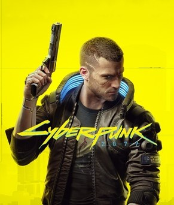

Avant de partir
Introduction : bien démarrer à Night City

Jaquette © CD PROJEKT S.A. Guide non officiel.
Cartes interactives
Dans les tableaux de butin, les objets suivis de Voir sur la carte ouvrent la carte interactive de Map Genie (site en anglais) pile sur leur emplacement, le plus souvent avec une capture d'écran. Le lien n'apparaît que lorsque l'emplacement est identifié sans ambiguïté. Il faut du réseau pour ouvrir la carte. Carte complète : Night City. Au début de l'Itinéraire des parties, La zone en images renvoie en plus à une soluce illustrée en français (Millenium ou ActuGaming) quand il en existe une.
Objectif
Te donner tout ce qu'il faut pour comprendre Cyberpunk 2077 avant de plonger : comment fonctionnent la progression, le combat, le piratage, l'argent, la police et le cyberware, et quelles erreurs de débutant coûtent cher. Ce guide couvre la version 2.x (la 2.3 au moment de la rédaction) et l'extension Phantom Liberty. Sur PS4 et Xbox One, le jeu est resté en 1.6 et n'a ni la refonte 2.0 ni l'extension : beaucoup de ce chapitre ne s'y applique pas.
Itinéraire
- Le prologue dépend de ton origine (chapitre 01) : Nomade, Gosse des rues ou Corpo.
- L'acte 1 se déroule entièrement à Watson (chapitres 02 à 04).
- L'acte 2 ouvre toute la ville et les Badlands (chapitres 05 à 08).
- L'acte 3 mène aux fins (chapitre 09). Phantom Liberty s'ouvre après Transmission (chapitre 25).
Déroulé pas à pas
Le jeu en trois phrases
- Tu incarnes V, mercenaire à Night City, une mégapole californienne tenue par des corporations et des gangs.
- Un casse tourne mal : une puce biologique contenant l'engramme du rockeur terroriste Johnny Silverhand se loge dans ta tête et efface peu à peu ta personnalité.
- Tout le jeu consiste à chercher un moyen de survivre, en croisant la route de gens qui valent la peine d'être aidés.
La création de personnage
- L'origine (lifepath) change ton prologue, quelques répliques et quelques quêtes secondaires, pas tes statistiques.
| Origine | Ce qu'elle apporte |
|---|---|
| Nomade | Prologue dans les Badlands, répliques sur les nomades et la mécanique |
| Gosse des rues | Prologue à Heywood, répliques de rue, contacts dans les gangs |
| Corpo | Prologue à la tour Arasaka, répliques corporatistes, la quête War Pigs |
- Les points d'attribut de départ sont peu nombreux : ne te disperse pas. Il vaut mieux deux attributs forts qu'un saupoudrage.
- ⚠️ Le corps et la voix sont indépendants du prénom et des pronoms : les romances dépendent du corps et de la voix choisis, pas d'un « genre » global.
Les six attributs
- Chaque attribut monte jusqu'à 20 et ouvre des atouts (perks), des vérifications de dialogue et des passages spéciaux.
| Attribut | Ce qu'il gouverne | Ce qu'il ouvre dans le monde |
|---|---|---|
| Constitution | Fusils à pompe, mitrailleuses, armes contondantes, santé, endurance | Forcer des portes, arracher les mitrailleuses des tourelles, répliques d'intimidation |
| Réflexes | Fusils d'assaut, mitraillettes, lames, esquive et déplacement | Répliques rapides, mobilité en combat |
| Capacité technique | Armes technologiques, fabrication, armure, cyberware | Ouvrir des portes techniques, réparer des boîtiers, désactiver des dispositifs |
| Intelligence | Piratages rapides, armes intelligentes, mémoire vive | Pirater terminaux, caméras, tourelles ; répliques d'expert |
| Sang-froid | Pistolets, revolvers, fusils de précision, infiltration, armes de jet | Répliques posées ou menaçantes, discrétion |
| Relique (Phantom Liberty) | Capacités spéciales liées à la puce | Voir chapitre 31 |
- Les compétences montent toutes seules quand tu joues : Solo (Constitution), Shinobi (Réflexes), Ingénieur (Capacité technique), Netrunner (Intelligence) et Chasseur de têtes (Headhunter, Sang-froid ⚠️ nom français à vérifier en jeu). Chaque palier donne un bonus passif, et certains offrent des points d'atout.
- Les plafonds :
- Niveau maximum : 60.
- Réputation de rue (Street Cred) maximale : 50. Elle débloque des marchands, des véhicules sur AUTOFIXER et jusqu'à 15 % de remise chez tous les vendeurs.
- Au niveau 40 de réputation, l'équipement de qualité 5 devient courant.
- Tu peux tout réinitialiser : la réinitialisation des atouts est disponible dans le menu des personnages (les points d'attribut, eux, ne se reprennent qu'une seule fois dans la partie ⚠️ à vérifier selon ta version).
Le combat
- L'endurance limite tes tirs, tes coups et tes esquives : elle remonte vite, mais un chargeur vidé sans respirer te laisse à découvert.
- Les trois familles d'armes :
- Puissantes (Power) : les balles ricochent sur les surfaces. Le coprocesseur balistique montre la trajectoire.
- Technologiques (Tech) : se chargent et traversent les couvertures et l'armure.
- Intelligentes (Smart) : les balles suivent la cible, mais il faut le cyberware Smart Link dans les mains.
- Les points faibles : la tête, et les vulnérabilités que révèle l'arbre de la Relique.
- L'armure vient du cyberware, plus des vêtements depuis la 2.0 : habille-toi comme tu veux.
- La conduite et les combats en voiture : tu peux tirer depuis un véhicule, et certaines voitures sont armées. Les percussions font mal aux deux camps (l'atout Fury Road inverse le rapport de force).
- Le corps à corps : les parades et les esquives comptent plus que le bourrinage, surtout dans les combats de boxe (chapitre 15).
Le piratage
- La cyberconsole (cyberdeck) est un système d'exploitation : elle donne de la mémoire vive (RAM) et des emplacements de piratages rapides (quickhacks).
- Scanne un ennemi, une caméra ou un appareil pour voir les piratages disponibles. Les classiques : Court-circuit (dégâts), Réinitialisation des optiques (aveugler), Contamination (se propage), Suicide.
- Le protocole d'intrusion (Breach Protocol) est le petit puzzle de suites hexadécimales : il installe des démons (argent, réduction de coût en RAM, dégâts) sur tout un réseau. Fais-le avant de t'infiltrer.
- La surchauffe (Overclock) permet de pirater au-delà de ta RAM, en consommant ta santé.
- Les netrunners ennemis te piratent aussi : coupe la connexion en te cachant, en les tuant, ou avec l'implant Auto-GLACE.
L'argent et l'équipement
- Les contrats des fixers (chapitres 19 à 21) sont la meilleure source d'argent et de réputation du jeu : chacun rapporte plusieurs milliers d'eurodollars.
- Le butin junk se démonte tout seul si tu actives l'option : tu récupères des composants au lieu d'objets inutiles.
- La fabrication sert surtout à améliorer tes armes iconiques (chapitre 23) : monter une arme de qualité en qualité coûte des composants du niveau visé.
- Les vendeurs se renouvellent régulièrement ; les charcudocs renouvellent leur stock tous les 10 niveaux (chapitre 24).
- Les véhicules s'achètent sur AUTOFIXER, se gagnent en quête, ou se volent (chapitre 18). Les livraisons de Muamar (chapitre 30) donnent des tickets de remise cumulables jusqu'à 0 €$.
La police
- Cinq niveaux de recherche : tirer sur des civils ou la police fait monter l'étoile. Aux derniers niveaux, le MaxTac débarque en AV, et ça pique.
- Pour te débarrasser d'eux : quitte la zone de recherche et romps le contact visuel. La Plaque faciale de Phantom Liberty (chapitre 27) efface jusqu'à quatre niveaux hors combat.
- À Dogtown, il n'y a pas de police : seulement BARGHEST, qui ne pardonne rien.
Le cyberware, en résumé
- Les implants s'achètent et s'améliorent chez les charcudocs, et chaque pièce coûte de la capacité en cyberware, qui monte avec ton niveau (chapitre 24 pour le détail).
- Les trois premiers achats utiles : le double saut (Tendons renforcés), un implant de santé (Second cœur ou Pompe sanguine) et le système d'exploitation qui correspond à ton style (cyberconsole, Sandevistan ou Berserk).
Les erreurs de débutant
- ⚠️ Se disperser dans les attributs : à 20 partout, personne. Choisis deux axes.
- ⚠️ Oublier les vérifications de dialogue : beaucoup de dénouements pacifiques (et d'objets) demandent Constitution, Intelligence ou Capacité technique. Ce guide les signale.
- ⚠️ Vendre ses armes iconiques : elles se montent en qualité toute la partie. Range-les dans la cache de ton appartement.
- ⚠️ Foncer dans la trame principale : l'acte 2 contient des points de non-retour (chapitre 09). Fais les quêtes de personnages avant : elles ouvrent des fins entières.
- ⚠️ Ignorer les appels : la moitié des quêtes secondaires arrivent par téléphone, souvent quelques jours après un événement. Si rien ne vient, dors ou passe le temps.
- ⚠️ Tuer tout le monde par réflexe : dans Phantom Liberty surtout, épargner une cible débloque une quête, une arme ou un véhicule (chapitres 30 et 31).
- ⚠️ Négliger la discrétion : même en jouant bourrin, un protocole d'intrusion avant l'assaut change tout.
- ⚠️ Oublier de sauvegarder avant un choix : le jeu écrase vite les sauvegardes automatiques.
Comment lire ce guide
- Les chapitres suivent la progression du joueur : trame principale (01 à 09), quêtes de personnages (10 à 18), contrats (19 à 22), équipement (23 et 24), puis Phantom Liberty (25 à 31).
- Les alertes : ⚠️ signale un point de non-retour ou un piège, ⏳ un objet ou une quête manquable.
- Les spoilers sont légers : les titres et les résumés restent discrets, sauf dans les chapitres consacrés aux fins (09 et 29), qui te préviennent.
- Les noms de quêtes restent en anglais quand le jeu français les garde tels quels, ce qui est le cas de presque toutes les missions principales et secondaires ; les contrats, eux, sont traduits.
Quêtes et lieux
- Watson (acte 1), puis Westbrook, Centre-ville, Heywood, Santo Domingo, Pacifica et les Badlands.
- Dogtown, l'enclave de Phantom Liberty, s'ouvre après Transmission.
- Ton appartement du Mégabuilding H10 : cache, garde-robe, mur d'armes, ordinateur.
Butin exhaustif
| Nom exact | Type | Où / comment l'obtenir | Utilité |
|---|---|---|---|
| Nuit Moribonde (Dying Night) | Arme iconique pistolet | Wilson, Le pistolet, dès l'acte 1 | Ta première iconique |
| Optiques Kiroshi de base | Cyberware visage | Viktor, Le charcudoc | Scanner : indispensable |
| Éclats de compétence | Consommables | Butin, largages, récompenses | Font monter une compétence |
| Bloqueurs d'oméga | Consommable | Quêtes principales | Stabilisent V temporairement |
Conseils et pièges
- Joue les quêtes de personnages tôt : Panam, Judy, Kerry, River, Rogue. Elles conditionnent les fins.
- Prends l'habitude de scanner : tout est piratable, et le scan révèle le butin et les points faibles.
- Achète le double saut dès que possible : il ouvre des dizaines de raccourcis et de caches.
- Fais des contrats pour monter ta réputation avant de dépenser : les remises montent jusqu'à 15 %.
- Va voir Misty et Viktor entre deux missions : ce sont les meilleures scènes du jeu, et elles ne coûtent rien.
Alertes
- ⚠️ Phantom Liberty n'existe que sur PC, PS5 et Xbox Series.
- ⚠️ L'entrée de l'Embers (chapitre 09) est le point de non-retour de la trame principale.
- ⚠️ Certaines quêtes secondaires échouent si tu avances trop vite dans la trame : le guide les signale au fil des chapitres.
Check-list
- Origine choisie et prologue terminé
- Deux attributs privilégiés
- Scanner utilisé par réflexe
- Double saut ou saut chargé acheté
- Premiers contrats de Regina faits (argent et réputation)
- Quêtes de personnages lancées avant l'acte 3
- Armes iconiques rangées dans la cache
Partie 01
Le prologue : les trois origines
L'essentiel
- Le choix du moment : l'origine de V (Nomade, Gosse des rues, Corpo), définitive.
- Attention : la réinitialisation des attributs n'est possible qu'une fois dans la partie ; réfléchis à ton build.
Objectif
Créer V, choisir son origine (lifepath) et jouer la mission d'ouverture qui lui correspond, jusqu'à la rencontre avec Jackie Welles. Les trois prologues s'excluent : tu n'en joues qu'un par partie. Ils durent chacun une vingtaine de minutes, puis se rejoignent dans le même montage de six mois à Night City.
Itinéraire
- L'écran de création : origine, apparence, attributs.
- Nomade : le garage de Yucca, la tour télécom, la ferme abandonnée, le poste-frontière.
- Gosse des rues : l'El Coyote Cojo à Heywood, la voiture de Padre, le parking de l'Embers.
- Corpo : les toilettes et les bureaux de la tour Arasaka, l'AV, le Lizzie's Bar à Watson.
Déroulé pas à pas
La création de V
- Choisis ton origine : Nomade (Le Nomade), Gosse des rues (Le Gosse des Rues) ou Corpo (Le Corpo-Rat).
- Elle change le prologue, des options de dialogue marquées d'une icône tout au long du jeu, et une quête annexe exclusive (voir le chapitre 16).
- Elle ne change ni les fins, ni les récompenses importantes.
- L'apparence se modifie plus tard dans n'importe quel miroir d'appartement : ne perds pas une heure ici.
- Les attributs (Corps, Réflexes, Capacités techniques, Intelligence, Sang-froid) se répartissent à la création, puis à chaque niveau.
- L'introduction (chapitre 00) explique quoi viser selon ton style.
- ⚠️ Depuis la 2.0, les attributs ne se réinitialisent qu'une fois, alors que les atouts se réinitialisent gratuitement : réfléchis à ta répartition.
Le Nomade
- Tu commences dans le garage de Yucca, au sud-ouest du poste-frontière. Parle au mécanicien, puis répare le moteur toi-même pour un rafistolage provisoire.
- Dehors, le shérif te fait comprendre que les nomades ne sont pas les bienvenus. Laisse-le parler.
- Marche vers le sud jusqu'à la tour télécom, grimpe, trouve le boîtier de contrôle et connecte ton téléphone satellite : Willie McCoy te donne la position de Jackie.
- Rejoins la ferme abandonnée près de la frontière. Jackie place le colis dans ton coffre.
- Au poste-frontière, dépose tes armes à l'accueil, va en salle 2, et donne au garde les papiers et le pot-de-vin. Récupère tes armes.
- Reprends la voiture : Arasaka vous tombe dessus. Laisse Jackie conduire et tire sur les poursuivants à travers la ferme de protéines de Biotechnica.
- Réfugiés dans un garage, vous ouvrez le colis : un iguane. Jackie te tend la main.
Le Gosse des rues
- Tu te remets le nez en place dans les toilettes de l'El Coyote Cojo, le bar de Heywood (Le Glen). Pepe, le barman, doit de l'argent à Kirk Sawyer, un petit fixer.
- Monte voir Kirk au premier étage. Il efface la dette de Pepe si tu voles une Rayfield Aerondight appartenant à un cadre d'Arasaka, et il te donne une clé de service.
- Padre, le fixer de Heywood, t'y conduit. En route, un membre des 6th Street l'interpelle. Padre te laisse devant l'Embers et te confie sa carte.
- Prends l'ascenseur jusqu'au parking, trouve la Rayfield (tu peux aussi parler au gardien, Rick, facultatif), désactive le verrou avec l'appareil de Kirk, et monte.
- Jackie ouvre la portière, arme au poing : il visait la même voiture. La NCPD arrive, l'inspecteur Stints vous immobilise, mais laisse finalement tomber les ordres du propriétaire corpo.
- Tu te réveilles dans une ruelle avec Jackie. Il t'invite à petit-déjeuner.
Le Corpo
- Tu te réveilles dans les toilettes de la tour Arasaka, pris de nausée. Appel de Jackie, puis ton supérieur, Arthur Jenkins, te convoque.
- Avant d'aller chez Jenkins, passe par ton bureau : ton terminal contient des courriels qui posent le contexte (facultatif mais instructif).
- Jenkins te demande d'éliminer sa supérieure, Susan Abernathy. Prends l'éclat de données et l'argent sur son bureau.
- Rejoins le garage des AV, parle à Jackie par holo, puis programme l'AV vers le Lizzie's Bar à Watson.
- Sur le toit, des joueurs de basket contestent l'atterrissage : intimide-les ou neutralise-les, sans conséquence.
- Au Lizzie's, Jackie refuse de s'impliquer, puis les agents d'Abernathy arrivent. Remets l'éclat : tu es licencié, ton cyberware coupé. Jackie te relève.
Le montage
- Les trois voies se rejoignent : six mois de boulots avec Jackie résumés en montage. L'acte 1 démarre directement ensuite (chapitre 02).
Quêtes et lieux
- Chaque origine a sa quête annexe, débloquée plus tard dans le jeu : These Boots Are Made for Walkin' (Nomade), Small Man, Big Mouth (Gosse des rues), War Pigs (Corpo). Elles sont détaillées au chapitre 16.
- Chaque origine dépose un souvenir dans l'appartement de V à la fin du prologue.
- Padre (Heywood), Kirk Sawyer et l'El Coyote Cojo reviennent dans plusieurs quêtes, quelle que soit ton origine.
Butin exhaustif
| Nom exact | Type | Où / comment l'obtenir | Utilité |
|---|---|---|---|
| Maquette de voiture | Souvenir | Fin du prologue Nomade | Décoration de l'appartement |
| Diorama de Night City | Souvenir | Fin du prologue Gosse des rues | Décoration de l'appartement |
| Horloge Arasaka | Souvenir | Fin du prologue Corpo | Décoration de l'appartement |
| Clé de service | Objet clé | Kirk, prologue Gosse des rues | Ouvre la Rayfield |
| Éclat de données de Jenkins | Objet clé | Bureau de Jenkins, prologue Corpo | Remis aux agents d'Abernathy |
Aucune arme ni aucun équipement fixe ne s'obtient pendant les prologues : l'inventaire de départ est fourni par le jeu.
Conseils et pièges
- L'origine n'a pas de mauvais choix. Prends celle dont l'ambiance te parle : Nomade pour les Badlands et Panam, Gosse des rues pour Heywood et les gangs, Corpo pour les intrigues d'Arasaka.
- Le prologue Corpo est le plus bavard, celui du Nomade le plus orienté conduite, celui du Gosse des rues le plus court.
- Ne t'attarde pas sur l'apparence : un miroir suffit ensuite pour tout refaire.
Alertes
- ⚠️ L'origine est définitive pour la partie : elle ne se change plus après la création.
- ⚠️ La réinitialisation des attributs n'est possible qu'une seule fois dans la partie (depuis la 2.0) : réfléchis à ton build avant de répartir.
Check-list
- Origine choisie
- Attributs répartis (voir l'introduction)
- Prologue terminé, rencontre avec Jackie
- Souvenir d'origine dans l'appartement
Partie 02
Acte 1 : Le sauvetage, le charcudoc et le rendez-vous
L'essentiel
- Au programme : sauver Sandra Dorsett chez les Désosseurs, le cyberware chez Viktor Vektor, le rendez-vous.
- Watson reste fermé jusqu'à la fin du casse.
- Rien de manquable ici.
Objectif
Mener avec Jackie le premier vrai contrat de V (sauver Sandra Dorsett chez les Désosseurs), faire installer du cyberware chez Viktor Vektor, puis rencontrer le fixer Dexter DeShawn, qui propose le coup du siècle. C'est aussi le moment de ramasser trois petits cadeaux autour de l'appartement.
Itinéraire
- Le montage de six mois, puis la voiture avec Jackie devant le Mégabuilding H10… d'un autre quartier.
- La réalité virtuelle de T-Bug (C'est en forgeant, facultatif).
- L'appartement 1237 des Désosseurs, puis le retour en voiture jusqu'à Watson.
- L'appartement de V au Mégabuilding H10, le 2nd Amendment de Wilson, la rue.
- Misty's Esoterica et la clinique de Viktor, à Little China.
- La limousine de Dex, puis Kabuki Roundabout.
Déroulé pas à pas
C'est en forgeant (facultatif)
- T-Bug propose un entraînement en réalité virtuelle : Bases du combat, Piratage, Furtivité, Combat avancé. Seuls les deux premiers modules sont obligatoires pour valider la mission. Si tu découvres le jeu, fais les quatre : c'est court et les commandes y sont bien expliquées.
Le sauvetage
- Sors de la voiture, suis Jackie dans l'ascenseur. T-Bug déverrouille la porte principale et coupe la sécurité.
- Les deux premières pièces sont vides : la seconde montre un cadavre découpé, avec des implants Zetatech posés sur la table. Tu es chez des Désosseurs (Scavengers), des gangs qui revendent les implants de leurs victimes.
- Troisième pièce : ton premier ennemi. Approche-le accroupi par-derrière et neutralise-le (tuer ou assommer, au choix), puis cache le corps dans le conteneur devant lui. C'est un objectif facultatif, mais rester discret simplifie la suite.
- La grande pièce compte cinq Désosseurs, puis le chef dans la salle suivante. Sers-toi du piratage rapide pour distraire, ou fonce avec Jackie.
- Dans la salle de bain, au fond : Sandra Dorsett gît dans une baignoire de glace. Quand elle fait un arrêt, utilise l'Airhypo pour la stabiliser, puis retire le brouilleur GPS qui empêchait son abonnement Trauma Team Platine de se déclencher.
- Porte Sandra jusqu'au balcon : l'AV de la Trauma Team arrive. Dépose-la sur la civière, puis repars par l'autre ascenseur et appelle Wakako Okada pour dire que c'est fait (ça lance la mission mineure Le contrat).
- L'embuscade : sur la route, une camionnette de Désosseurs vous prend en chasse. Tire sur les quatre (deux aux portes arrière, un à la porte latérale, le conducteur) ; même si tu en rates, la camionnette finit par s'écraser.
- Jackie passe le barrage du NCPD à l'entrée de Watson, vous assistez à une intervention du MaxTac, puis il te dépose au pied de ton immeuble.
- Dans l'appartement, ouvre ta cache d'armes et dors pour terminer la mission.
Autour de l'appartement
- En descendant, Robert Wilson, l'armurier du 2nd Amendment au rez-de-chaussée du Mégabuilding H10, t'interpelle : il te remet Nuit Moribonde (Dying Night), un pistolet iconique, gratuitement (mission mineure Le pistolet).
- Coach Fred, dans la salle de sport de l'immeuble, lance la série de combats de boxe Beat on the Brat (chapitre 15).
- Le cadeau : un appel de T-Bug t'envoie chez Yoko, la boutique de netrunner de Kabuki Roundabout, où tu récupères gratuitement le piratage rapide Ping.
Le charcudoc
- Jackie t'attend en bas, devant le stand de nouilles. Il te rend ta voiture et parle du contrat de Dex. Appelle ta voiture et conduis jusqu'à Misty's Esoterica, à Little China.
- Traverse la boutique de Misty et descends à la clinique de Viktor. L'installation coûte 21 000 €$.
- Si tu n'as pas la somme (cas le plus fréquent), Viktor accepte d'être payé plus tard : la mission mineure Rubis sur l'ongle (Paid in Full) s'ouvre dans ton journal.
- Si tu paies, c'est réglé tout de suite.
- Le charcudoc : assieds-toi, Viktor installe :
- des optiques Kiroshi de base, avec le scan relié à la base du NCPD ;
- une armure sous-dermique ;
- un coprocesseur balistique.
- Scanne Viktor pour essayer. ⚠️ Tant que tu ne l'as pas remboursé, Viktor ne te vend plus rien.
Le rendez-vous
- Remonte chez Misty, puis rejoins la limousine de Dex, à quelques pas.
- Dex expose le contrat : voler une biopuce expérimentale d'Arasaka. Il faut pour cela un robot Flathead que le Maelstrom a volé à Militech, et la commanditaire, Evelyn Parker, veut te rencontrer.
- Dex te dépose à Kabuki Roundabout. Appelle Jackie : tu choisis l'ordre des deux missions suivantes, La collecte (Maelstrom) et Le renseignement (Evelyn). Les deux sont obligatoires (chapitre 03).
Quêtes et lieux
- Le contrat (The Gig) : une fois l'acte 1 fini et Watson rouvert, va voir Wakako Okada dans son salon de pachinko de Jig-Jig Street (Japantown) : elle te verse 3 380 €$ et t'envoie chez le charcudoc Cassius Ryder pour un tatouage Tyger Claws gratuit.
- Rubis sur l'ongle : rembourse Viktor quand tu as l'argent (chapitre 16).
- Watson est bouclé par le NCPD pendant tout l'acte 1 : tu ne peux pas en sortir avant la fin du casse.
- Boutiques utiles tout de suite : le 2nd Amendment de Wilson, la clinique de Viktor, Yoko à Kabuki.
Butin exhaustif
| Nom exact | Type | Où / comment l'obtenir | Utilité |
|---|---|---|---|
| Nuit Moribonde | Arme pistolet iconique | Wilson, au 2nd Amendment, mission Le pistolet | Pistolet iconique, dégâts accrus en mouvement, Choc garanti sur tirs rapides |
| Ping | Piratage rapide | Yoko, Kabuki Roundabout, mission Le cadeau | Révèle les ennemis et appareils du réseau |
| Optiques Kiroshi de base, Armure sous-dermique, Coprocesseur balistique | Cyberware | Viktor, mission Le charcudoc (21 000 €$, payables plus tard) | Scanner, armure, visée |
| Airhypo | Objet clé | Remis pendant le sauvetage | Stabiliser Sandra |
| 3 380 €$ | Argent | Wakako, mission Le contrat (après l'acte 1) | — |
| Tatouage Tyger Claws | Cyberware cosmétique | Cassius Ryder, offert par Wakako | Tatouage dermique |
Conseils et pièges
- Rester discret chez les Désosseurs te fait gagner de l'expérience en Furtivité et évite de griller tes soins dès la première mission.
- Ne dépense pas tout ton argent tout de suite : Viktor te laisse payer plus tard, et les meilleurs achats de l'acte 1 sont le cyberware et les piratages rapides.
- Nuit Moribonde est une excellente arme de début de jeu : équipe-la tout de suite.
- Fouille chaque pièce de l'appartement 1237 : les Désosseurs laissent des composants et des munitions partout.
Alertes
- ⚠️ Watson reste fermé jusqu'à la fin du casse (chapitre 04) : inutile d'essayer de rejoindre d'autres quartiers, le jeu te bloque.
- ⏳ Rien de définitivement manquable dans ce chapitre : Wilson, Yoko et Wakako t'attendent autant que nécessaire.
Check-list
- Les quatre modules de C'est en forgeant (facultatif)
- Sandra Dorsett sauvée
- Embuscade repoussée, retour à l'appartement
- Nuit Moribonde récupéré chez Wilson
- Ping récupéré chez Yoko
- Cyberware installé chez Viktor
- Rencontre avec Dex dans la limousine
- Le contrat : 3 380 €$ et tatouage (après l'acte 1)
Partie 03
Acte 1 : La collecte et Le renseignement
L'essentiel
- Le choix du moment : comment tu obtiens le Flathead à l'usine All Foods (Royce, Militech, transaction).
- À ne pas rater : Chaos (Royce doit mourir), Venus in Furs et Sire Vergeraide (Meredith à la sortie), le vendeur du Maelstrom (transaction pacifique).
Objectif
Réunir les deux pièces du casse : le robot Flathead, que le gang Maelstrom détient à l'usine All Foods, et le repérage du penthouse de Yorinobu Arasaka, que la commanditaire Evelyn Parker montre en braindance au Lizzie's Bar. Les deux missions se font dans l'ordre que tu veux ; La collecte est la plus lourde en choix.
Itinéraire
📍 La zone en images : La collecte · Le renseignement — soluce illustrée sur Millenium, en français.
- Le canal pluvial sous l'échangeur près d'All Foods (rencontre facultative avec Meredith Stout).
- L'usine All Foods, Talbot Place, Northside : l'interphone, les pièges désactivés, l'abattoir, le bureau de Royce.
- Le Lizzie's Bar, à l'angle de Kennedy Avenue et Sutter Street (Kabuki), entre 18 h et 6 h : le salon VIP, puis l'atelier de Judy au sous-sol.
Déroulé pas à pas
La collecte : avant d'entrer
- Dex t'a donné le numéro de Meredith Stout, agente des affaires internes de Militech. Appelle-la : ce rendez-vous facultatif change la fin de la mission et ouvre une quête plus tard.
- Au canal pluvial, un garde du corps pirate ton implant pour un interrogatoire éclair. Meredith te propose un marché : payer le Flathead avec une puce de crédit Militech… piégée par un daemon.
- Accepte la puce, puis ouvre-la depuis l'inventaire avec le protocole de brèche :
- retirer le daemon permet de récupérer plus tard 10 000 €$ en déchiffrant l'éclat ;
- faire une copie te donne le piratage rapide Surmenage synaptique (Synapse Burnout) ;
- réussir les deux cumule les deux récompenses.
- Rejoins Jackie devant l'usine et parle à Dum Dum à l'interphone : il vous laisse entrer. Traverse l'usine (les pièges sont désactivés), prends l'ascenseur de l'abattoir.
La collecte : chez Royce
- Les règles de la négociation :
- ne pointe ton arme sur personne, ne touche ni aux caméras ni aux tourelles ;
- assieds-toi sur le canapé, et quand Jackie refuse, demande-lui de s'asseoir ;
- réponds vite quand Royce demande comment tu paies : trop hésiter te vaut une balle dans la tête.
- Les quatre issues :
| Issue | Comment | Conséquences |
|---|---|---|
| Transaction pacifique | Pas de rendez-vous avec Meredith, tu paies 10 000 €$ de ta poche | Dum Dum vous raccompagne, le vendeur d'armes du Maelstrom s'ouvre après la mission, Dum Dum reste en vie |
| Combat contre Militech | Rendez-vous avec Meredith, tu paies avec la puce nettoyée (ou tu préviens Royce, origine Corpo) ou avec ton argent | Militech donne l'assaut, tu t'enfuis avec le Maelstrom. Anthony Gilchrist t'attend à la sortie : pas de suite avec Meredith |
| Combat contre le Maelstrom | Arme pointée, caméras touchées, pas assis, puce non nettoyée sans prévenir, ou Royce abattu pendant la discussion | Combat de boss contre Royce (affaibli si la puce infectée a agi). Le tuer rapporte 3 000 €$ et son arme iconique Chaos |
| Mort instantanée | Tu tardes à répondre à Royce | Game Over |
- La route conseillée pour tout récupérer :
- Rencontre Meredith, prends la puce, retire le daemon et fais la copie (10 000 €$ + Surmenage synaptique).
- Chez Royce, abats-le pendant la conversation par l'option de dialogue (pas par l'option Corps) : Chaos (🗺️ carte) sur son corps.
- Meredith t'attend à la sortie : condition de la quête Venus in Furs (chapitre 17).
- En revanche, tu perds l'accès au vendeur du Maelstrom.
- ⚠️ Épargne Dum Dum dans tous les cas : il faudra le retrouver vivant au chapitre 10 (Second Conflict) pour récupérer son arme iconique Doom Doom.
- Brick, l'ancien chef du Maelstrom, est enfermé dans une cellule (issues « combat »).
- Code de la porte : 9691 (message d'un ordinateur portable voisin), ou le piratage Désactivation à distance.
- Désarme le piège : le détonateur sur la table, ou la mine dans la cellule.
- Le libérer : si Royce est mort, Brick reprend le gang, et Second Conflict se règle sans combat.
- Faire exploser le piège rapporte 5 000 €$ tout de suite.
- Origine Nomade : dans une pièce de la première grande salle après la négociation, un ordinateur contient le message de la taupe de Militech. À la sortie, le confronter pousse l'agent à te laisser une caisse d'équipement Militech dans ton appartement à l'acte 2.
- Ressors, appelle Dex.
Le renseignement
- Au Lizzie's Bar, entre 18 h et 6 h, parle aux videurs, assieds-toi au comptoir et demande Evelyn au barman Mateo. Evelyn se présente et t'emmène au salon VIP.
- Elle explique le coup : la Relique, une biopuce d'Arasaka, se trouve dans le penthouse de Yorinobu Arasaka au Konpeki Plaza. Elle y a enregistré une braindance en tant que joytoy.
- Au sous-sol, Judy Álvarez te pose le casque de braindance et lance une braindance d'étalonnage (un braquage de Cali Express) qui sert de tutoriel. Suis ses instructions : lecture, retour, avance rapide, calques visuel, audio et thermique, scan des indices.
- Demande à Judy d'inviter T-Bug dans la braindance du penthouse. Objectifs :
- regarder tout l'enregistrement du point de vue d'Evelyn (facultatif) ;
- scanner les systèmes de sécurité (facultatif, utile au casse) ;
- calque audio : scanner le téléphone de Yorinobu pendant qu'il parle ;
- calque visuel : scanner sa tablette allumée ;
- calque thermique : trouver le coffre réfrigéré de la Relique.
- T-Bug repère aussi le pistolet de Yorinobu posé dans la suite : retiens-le pour le casse.
- Judy te laisse garder le casque de braindance. Avant de partir, Evelyn te demande de faire le coup sans Dex : refuse ou dis que tu vas y réfléchir, ça ne change rien à la suite. Appelle Dex.
Quêtes et lieux
- Le vendeur d'armes du Maelstrom n'apparaît que si la transaction s'est faite sans violence et sans Meredith.
- Venus in Furs (Meredith Stout) ne se déclenche que si Meredith t'attend à la sortie de l'usine, avec l'accord de la puce et un Maelstrom devenu hostile après la rencontre avec Dum Dum.
- Judy Álvarez et Evelyn Parker sont au cœur de l'arc du chapitre 05.
- Le Cali Express de la braindance d'étalonnage existe vraiment au Glen : le vendeur y parle d'une odeur de chlore…
Butin exhaustif
| Nom exact | Type | Où / comment l'obtenir | Utilité |
|---|---|---|---|
| Flathead | Objet clé | Acheté (ou pris) chez Royce | Robot espion du casse |
| Puce de crédit Militech | Objet clé | Meredith Stout, au canal pluvial | Paiement piégé |
| 10 000 €$ | Argent | Puce Militech dont le daemon a été retiré, à déchiffrer depuis l'inventaire | — |
| Surmenage synaptique (Synapse Burnout) | Piratage rapide | Copie de la puce Militech par le protocole de brèche | Piratage offensif puissant |
| Chaos | Arme pistolet iconique | Sur le corps de Royce, s'il meurt · Voir sur la carte | Effets et dégâts aléatoires à chaque rechargement |
| 3 000 €$ | Argent | Mort de Royce en combat | — |
| 5 000 €$ | Argent | Faire exploser le piège de la cellule de Brick | — |
| Inhalateur de Black Lace | Consommable | Dum Dum, origine Gosse des rues, transaction pacifique | — |
| Caisse d'équipement Militech | Divers | Appartement de V à l'acte 2, origine Nomade, taupe confrontée | Équipement Militech |
| Casque de braindance | Objet clé | Judy, Le renseignement | Lire des braindances |
Conseils et pièges
- Sauvegarde avant d'entrer dans le bureau de Royce : c'est la décision la plus lourde de l'acte 1.
- Chaos et Doom Doom sont compatibles : tue Royce, épargne Dum Dum.
- Le casse suit immédiatement les deux missions : fais tes achats et monte d'un ou deux niveaux avant.
- La braindance est un outil récurrent (Judy, Peralez, contrats) : prends le temps de bien comprendre les trois calques.
Alertes
- ⏳ Manquable : Chaos, si Royce survit (issues pacifique ou Militech où il ne meurt pas).
- ⏳ Manquable : Venus in Furs et l'arme Sire Vergeraide, si Meredith ne t'attend pas à la sortie.
- ⏳ Manquable : le vendeur du Maelstrom, en dehors de la transaction pacifique.
- ⏳ Manquable : Doom Doom au chapitre 10, si Dum Dum meurt ici.
- Surmenage synaptique est bien le nom français officiel de Synapse Burnout : c'est celui des notes de mise à jour françaises du jeu.
Check-list
- Meredith Stout rencontrée
- Puce Militech : daemon retiré et copie faite (10 000 €$ + piratage)
- Flathead obtenu
- Chaos récupéré sur Royce
- Dum Dum épargné
- Brick libéré (ou piège déclenché pour 5 000 €$)
- Meredith à la sortie de l'usine
- Braindance du penthouse analysée (sécurité, téléphone, tablette, Relique)
- Casque de braindance gardé
Partie 04
Acte 1 : Le casse, Love Like Fire et Playing for Time
L'essentiel
- À ne pas rater : Kongou, Nehan, Satori et l'Œuf d'iguane, pendant le casse seulement.
- Attention : ne traîne pas dans le penthouse après le meurtre, Adam Smasher revient.
- Point de non-retour : monter dans le Delamain après le briefing.
Objectif
Voler la Relique dans le penthouse de Yorinobu Arasaka au Konpeki Plaza, avec Jackie, T-Bug et le robot Flathead. Le coup tourne mal, V se réveille avec Johnny Silverhand dans la tête, et l'acte 2 — la ville entière — s'ouvre. Le penthouse cache trois armes iconiques et un œuf à ne pas oublier.
Itinéraire
- L'Afterlife (Little China) : le briefing avec Dex et T-Bug.
- Le Delamain, puis le Konpeki Plaza : l'accueil, la chambre du 42e étage, le penthouse.
- La fuite : le balcon, les étages de service, le hall, le garage, la course-poursuite.
- Le No-Tell Motel (chambre 204).
- Love Like Fire (en Johnny, en 2023), puis la décharge, la clinique de Viktor, l'appartement, le Tom's Diner.
Déroulé pas à pas
Le briefing à l'Afterlife
- Rejoins Jackie devant l'Afterlife, entre (le videur finit toujours par vous laisser passer), assieds-toi au bar. Claire, la barmaid, sert à boire ; Oleg, le garde du corps de Dex, finit par vous appeler.
- Pose le Flathead dans la mallette, assieds-toi, et insère l'éclat du plan.
- Négocie ta part : Dex propose 30 %.
- Dire que vous méritez plus, ou que c'est pour la gloire, pour le défi, ou (origine Corpo) pour se venger d'Arasaka : 35 %.
- Révéler qu'Evelyn voulait l'écarter : 40 % directement. Tu ne toucheras jamais cet argent, mais la négociation reste amusante.
- ⚠️ Dernière chance de finir tes activités de Watson : une fois dans le Delamain, tu ne pourras plus explorer avant l'acte 2. Enfile le costume Militech et monte dans le taxi.
L'infiltration
- À l'accueil du Konpeki Plaza, pose ta main sur le panneau et fais patienter la réceptionniste ; si tu ne dis rien, T-Bug s'en charge. Tu peux faire un tour au bar de l'hôtel (facultatif — Hideo Kojima y fait une apparition, à droite du comptoir).
- 42e étage, ta chambre : scanne le point d'entrée du Flathead (le coin entre le terrarium et la fenêtre), puis prends les commandes quand il se coince.
- Le Flathead se déplace seul : tu lui indiques où aller.
- Ouvre les grilles, attends que la femme de ménage s'éloigne, passe par le terrarium.
- Entre dans la chambre du netrunner de l'hôtel et connecte-toi à la vidéosurveillance.
- Bascule entre les caméras pour trouver un chemin, ouvre la grille du sol et pirate le netrunner.
- Assieds-toi : le temps passe jusqu'à la nuit. Prends l'ascenseur direct du penthouse.
Le penthouse
- Avant tout, fouille :
- la table de chevet de la chambre de Yorinobu : Kongou (🗺️ carte), pistolet iconique ;
- derrière le tronc d'arbre, près du grand iguane : Œuf d'iguane.
- Va au coffre, scanne l'interrupteur caché, ouvre, connecte ton implant : T-Bug pirate le coffre, Jackie vérifie la Relique.
- Des AV arrivent : cache-toi derrière l'écran de télévision, dans le conduit technique. Tu assistes à la rencontre entre Yorinobu, Adam Smasher, puis Saburo Arasaka et son garde du corps Goro Takemura. Yorinobu étrangle son père et accuse un empoisonnement.
- Sors de ta cachette. Sur le corps de Saburo : Nehan (🗺️ carte), couteau de lancer iconique.
- Détour facultatif mais rentable : monte à l'héliport. Élimine les deux gardes près de l'AV de Saburo, puis fouille l'AV : Satori (🗺️ carte), katana iconique. L'AV se verrouille et donne l'alerte, redescends vite.
- ⚠️ Ne traîne pas dans le penthouse : au bout d'un moment, Adam Smasher revient et te tue instantanément.
- Direction la fenêtre du balcon ouverte par T-Bug, qui se fait griller le cerveau à ce moment-là. Avance sur la corniche : on vous repère, sautez.
La fuite
- Jackie insère la Relique dans son propre implant pour la protéger. Appelle Evelyn.
- Le premier ascenseur exige un jeton d'accès : au second, neutralise l'officier Arasaka (tuer ou assommer) et fouille-le pour le jeton.
- Le hall : plusieurs gardes, et un mécha si tu es repéré. Reste discret ou fonce.
- Au garage, monte dans le Delamain sous le feu. Pendant la poursuite, abats les drones (un Octant et deux Griffin) lancés par Smasher.
- Jackie succombe à ses blessures et te remet la Relique. Delamain demande où envoyer son corps : à sa famille (Mamá Welles) ou chez Viktor. Le choix change un détail de la quête Heroes (chapitre 17).
- Au No-Tell Motel, chambre 204, Dex t'écoute, t'envoie te laver la figure… puis te tire une balle dans la tête.
Love Like Fire
- Tu revis un souvenir de Johnny Silverhand, le 20 août 2023. Au Hammer, Johnny monte sur scène, puis Kerry tente de le retenir : conseille-lui de faire sa propre carrière, ou envoie-le promener.
- Dehors, Johnny rejoint Rogue, Shaitan et Spider Murphy en hélicoptère vers les tours Arasaka. Nettoie le toit, envoie la charge nucléaire par l'ascenseur, puis va dans le bureau de Kei Arasaka pour charger le virus censé libérer Alt Cunningham.
- Adam Smasher tombe sur Johnny. La séquence se termine par l'interrogatoire et l'ordre de Saburo : Soulkiller. Reste muet ou provoque les interrogateurs, au choix.
Playing for Time
- Suis la silhouette rouge dans le cyberespace. Tu te réveilles dans la décharge municipale : Takemura abat Dex et t'emmène.
- Attaque sur la route : utilise l'Airhypo à temps (sinon, Game Over), puis tire avec le Kenshin que te tend Takemura. Donne-lui le nom de Viktor et appelle Delamain.
- Viktor explique : la Relique a réparé ton cerveau, mais elle remplace ta personnalité par l'engramme de Johnny. Il te reste quelques semaines. Misty te ramène chez toi avec deux médicaments : la Pseudoendotrizine (accélère le processus) et les bloqueurs Oméga (le ralentissent).
- Johnny apparaît dans ton appartement. Rampe jusqu'aux pilules, prends-les, puis au réveil habille-toi, fais le plein de munitions, et rejoins Takemura au Tom's Diner.
- Takemura veut prouver que Yorinobu a tué son père, avec toi comme témoin, et promet l'aide d'Arasaka. Seul ensuite, Johnny te propose d'aller voir Rogue. L'acte 2 commence : toute la ville est ouverte.
Quêtes et lieux
- Heroes (les funérailles de Jackie, chapitre 17) s'ouvre ici.
- Plan B : une fois l'acte 2 lancé, retourne à la décharge municipale : le cadavre de Dex y est encore, avec son pistolet iconique Plan B.
- Tout Night City s'ouvre après Playing for Time : contrats, délits du NCPD, boutiques et quêtes annexes.
- Les trois pistes de l'acte 2 (Evelyn, Hellman, Takemura) et la piste des Voodoo Boys démarrent dans les chapitres 05 à 08.
Butin exhaustif
| Nom exact | Type | Où / comment l'obtenir | Utilité |
|---|---|---|---|
| Kongou | Arme pistolet iconique | Table de chevet de Yorinobu, penthouse · Voir sur la carte | Ricochets sans le cyberware requis |
| Œuf d'iguane | Objet clé | Derrière le tronc d'arbre, près de l'iguane | Donne un iguane de compagnie dans l'appartement |
| Nehan | Arme couteau iconique | Corps de Saburo Arasaka · Voir sur la carte | Hémorragie avec Satori |
| Satori | Arme katana iconique | AV de Saburo, sur l'héliport · Voir sur la carte | Bond vers l'ennemi, dégainage qui fait saigner |
| Jeton d'accès Arasaka | Objet clé | Officier Arasaka, second ascenseur | Ouvre l'ascenseur de fuite |
| Relique | Objet clé | Coffre du penthouse | Le cœur de l'histoire |
| Kenshin | Arme | Takemura, Playing for Time | Pistolet de la poursuite |
| Plan B | Arme pistolet iconique | Corps de Dex, décharge municipale, à l'acte 2 · Voir sur la carte | Saignements, chaque tir coûte des €$ |
Conseils et pièges
- Le penthouse est la vraie mine d'or de l'acte 1 : Kongou, Nehan, Satori et l'œuf, en quelques minutes. Fouille vite, Smasher finit par revenir.
- L'œuf d'iguane éclot dans ton appartement si tu l'ouvres depuis l'inventaire ; ne le vends pas.
- Le hall du Konpeki se fait très bien en furtivité : évite de déclencher le mécha.
- Au début de l'acte 2, rien ne presse : le jeu te laisse tout le temps d'explorer, malgré l'urgence de l'histoire.
Alertes
- ⚠️ Point de non-retour : monter dans le Delamain après le briefing ferme l'exploration jusqu'à l'acte 2.
- ⏳ Manquable : Kongou, Nehan, Satori et l'Œuf d'iguane, uniquement pendant le casse.
- ⚠️ Adam Smasher revient tuer V si tu restes trop longtemps dans le penthouse après la scène du meurtre.
Check-list
- Part négociée avec Dex
- Flathead guidé jusqu'au netrunner
- Kongou et Œuf d'iguane
- Relique récupérée
- Nehan sur Saburo
- Satori dans l'AV de l'héliport
- Fuite réussie, drones abattus
- Love Like Fire terminé
- Playing for Time terminé, rendez-vous au Tom's Diner
- Plan B récupéré à la décharge (acte 2)
Partie 05
Acte 2 : La piste d'Evelyn Parker
L'essentiel
- Avant Double Life : fais Love Rollercoaster (Pacifica), sinon elle disparaît.
- Attention : frapper Fingers au sol le retire des charcudocs.
- Faciles à oublier : Lizzie, Pique à Cocktail, Mocassin, Errata.
Objectif
Retrouver Evelyn Parker, la commanditaire du casse, pour savoir qui voulait la Relique. La piste passe par la maison de poupées Clouds, le charcudoc véreux Fingers, un studio de braindances extrêmes des Désosseurs, puis l'appartement de Judy. Elle mène aux Voodoo Boys (chapitre 06) et contient quatre armes iconiques.
Itinéraire
📍 La zone en images : Disasterpiece — soluce illustrée sur Millenium, en français.
- Le Lizzie's Bar (Kabuki) : l'atelier de Judy au sous-sol.
- Le Mégabuilding H8 (Japantown), 12e étage : Clouds, à partir de 17 h.
- La clinique de Fingers, près de Jig-Jig Street.
- Jig-Jig Street et ses ruelles, puis l'ancienne centrale de l'Electric Corporation (Arroyo, Santo Domingo).
- L'appartement de Judy (Kabuki).
Déroulé pas à pas
Automatic Love
- Appelle Judy (facultatif) puis va au Lizzie's Bar : la videuse te laisse entrer. Au sous-sol, Judy te dit qu'Evelyn travaillait comme poupée au Clouds.
- Avant de repartir, entre dans la pièce voisine de l'atelier : sur un plan de travail contre le mur, l'arme iconique Lizzie (🗺️ carte).
- Clouds ouvre à 17 h : si tu es en avance, assieds-toi sur le banc voisin pour faire passer le temps.
- À l'accueil, dépose tes armes (un pistolet Liberty traîne derrière le comptoir).
- Connecte-toi pour choisir ta poupée, Angel ou Skye, et un mot de sécurité. Sans conséquence.
- Dans la cabine, prononce le mot de sécurité pour interrompre la séance et interroge la poupée : elle t'envoie vers Tom, au carré VIP.
- Facultatif : examine la cabine 11 (le port arraché, le sang au mur) et regarde l'enregistrement de sécurité : Evelyn n'a pas été agressée par le client, elle a été piratée à distance.
- Entrer au carré VIP sans carte rend les Tyger Claws hostiles. Trois façons de l'éviter :
- attendre qu'un Tyger Claw aille aux toilettes et le neutraliser discrètement pour sa carte d'accès VIP ;
- passer par le volet du couloir entre les cabines et la porte VIP, suivre la coursive extérieure jusqu'à une arrière-salle (un seul garde, une carte, et un ascenseur vers le carré VIP) ;
- forcer, avec assez de Corps, la porte de l'arrière-salle depuis les toilettes.
- Tom dit qu'Evelyn est partie dans une clinique à Oslo et t'envoie chez Woodman, le gérant des poupées, dans la partie interdite.
- La loge des poupées, en chemin :
- Sur le comptoir du premier box près de la porte : le katana iconique Pique à Cocktail (Cocktail Stick)
- Vestiaire : l'emploi du temps d'Evelyn (éclat) et son sac à main
- Salle des serveurs : un ordinateur et un éclat sur l'incident
- Woodman : il n'attaque pas tout de suite.
- Fin pacifique, dans l'ordre : « Tu ne comprends pas ce qui est en jeu », « Ne rendons pas les choses plus difficiles », « D'une manière ou d'une autre, je le saurai… ».
- Options bonus : avec assez d'Intelligence, propose de sécuriser son système ; en Corpo, parle des vrais patrons des Tyger Claws ; si tu as fait le contrat Chasse au monstre, évoque le sort de Jotaro Shobo pour l'intimider.
- S'il devient hostile, bats-le et lis le message sur son ordinateur.
- Dans tous les cas, la piste mène à Fingers. Récupère tes armes au casier en partant.
The Space in Between
- Prends la direction de la clinique de Fingers, près de Jig-Jig Street. Les voyous devant l'entrée se laissent intimider ; sinon, petit combat.
- Judy t'attend dans la salle d'attente à l'étage (appelle-la avant pour être sûr qu'elle y soit). Pour passer : convaincre un patient de te céder sa place, attendre, ou entrer par la fenêtre.
- Interroge Fingers : gentil ou méchant flic, il finit par avouer qu'il a vendu Evelyn à des producteurs de braindances extrêmes (DSX).
- Sur le lit rose du cabinet : la massue iconique Mocassin (Cottonmouth).
- ⚠️ Ne frappe pas Fingers quand il est à terre : ça le retire définitivement des charcudocs utilisables (depuis la 2.0, il ne vend plus rien d'unique de toute façon).
Disasterpiece
- Trouve une piste vers les producteurs de DSX : interroge les gens de Jig-Jig Street, le sex-shop, pirate une borne, ou va directement dans la ruelle sombre sous la passerelle voir le vendeur de DSX. Achète-lui la braindance extrême.
- Rejoins Judy dans sa camionnette et analyse la DSX : calque visuel, scanne le carton de pizza et la canette près de l'ordinateur. Ils mènent à l'ancienne centrale de l'Electric Corporation (Judy dit « Charter Hill », mais elle se trouve à Arroyo).
- La centrale est remplie de Désosseurs et de caméras. Descends jusqu'au deuxième sous-sol : Evelyn est allongée près d'un lit. Débranche-la au signal de Judy.
- Troisième sous-sol (secteur 3, la forge) : l'arme iconique Errata (🗺️ carte), une lame. Et en face du bâtiment, sur un grand réservoir, la carte de tarot La Justice (quête Fool on the Hill, chapitre 17).
Double Life
- Chez Judy, Johnny te propose de fumer : accepte ou refuse, le choix est libre.
- Va voir Evelyn (facultatif, elle ne répond pas), puis Judy dans sa salle de montage : deux braindances extraites de la mémoire d'Evelyn.
- Première : Evelyn et une mystérieuse netrunner. Scanne l'hologramme au mur et les prospectus au sol : un contact des Voodoo Boys, à Pacifica. Si tu as déjà visité l'église Serenity Bible de Pacifica, tu reconnais l'endroit et raccourcis l'analyse.
- Seconde : Judy charge un module de langue pour comprendre le créole des Voodoo Boys au téléphone (calque audio). Il est question de rencontrer Alt Cunningham dans le cyberespace, par l'intermédiaire de l'engramme de Johnny.
- Dis ou non à Judy que Johnny est dans ta tête, parle à Johnny, puis quitte l'appartement et appelle M. Hands, le fixer de Pacifica, pour obtenir un rendez-vous avec les Voodoo Boys (chapitre 06).
Quêtes et lieux
- Judy Álvarez devient une alliée : ses quêtes annexes s'ouvrent après cette piste (chapitre 11).
- Contrat Chasse au monstre (Watson) : le faire avant rend l'interrogatoire de Woodman plus facile.
- La centrale de l'Electric Corporation reste explorable ensuite si tu as raté Errata.
Butin exhaustif
| Nom exact | Type | Où / comment l'obtenir | Utilité |
|---|---|---|---|
| Lizzie | Arme pistolet iconique | Pièce voisine de l'atelier de Judy, Lizzie's Bar · Voir sur la carte | Tire une balle de plus par tir |
| Carte d'accès VIP | Objet clé | Tyger Claw des toilettes ou de l'arrière-salle, Clouds | Entrer au carré VIP sans combat |
| Pique à Cocktail | Arme katana iconique | Loge des poupées, premier box près de la porte | Saignements en camouflage optique |
| Emploi du temps d'Evelyn | Éclat | Vestiaire du Clouds | Indices |
| Mocassin | Arme massue iconique | Lit rose du cabinet de Fingers | Dégâts électriques et chimiques |
| Braindance DSX | Objet clé | Vendeur de la ruelle sous la passerelle, Jig-Jig Street | À analyser avec Judy |
| Errata | Arme lame iconique | Troisième sous-sol de la centrale, près de la forge · Voir sur la carte | Critique garanti sur les ennemis en feu |
| Carte de tarot : La Justice | Collection | Réservoir en face de la centrale | Quête Fool on the Hill |
Conseils et pièges
- Viens au Clouds vers 17 h pour éviter l'attente.
- Le passage par la coursive extérieure est le moyen le plus élégant d'atteindre le carré VIP sans alerter les Tyger Claws.
- La centrale se traverse bien en furtivité, mais les caméras y sont nombreuses : pirate-les ou détruis-les.
- Termine la quête Love Rollercoaster avant Double Life (voir l'alerte ci-dessous).
Alertes
- ⏳ Manquable : terminer Double Life rend la quête annexe Love Rollercoaster (Pacifica, chapitre 17) indisponible. Fais-la avant.
- ⚠️ Frapper Fingers au sol le supprime des charcudocs.
- ⏳ Les quatre armes iconiques (Lizzie, Pique à Cocktail, Mocassin, Errata) restent dans des lieux revisitables, mais on les oublie facilement.
Check-list
- Lizzie au Lizzie's Bar
- Séance au Clouds, cabine 11 examinée
- Carré VIP atteint, Tom interrogé
- Pique à Cocktail
- Woodman interrogé (pacifiquement si possible)
- Fingers interrogé, Mocassin
- DSX analysée
- Evelyn sauvée, Errata, carte La Justice
- Les deux braindances de Double Life analysées
- M. Hands appelé
Partie 06
Acte 2 : Les Voodoo Boys
L'essentiel
- Choix définitif : NetWatch ou Voodoo Boys, dans la cabine de projection du GIM.
- À ne pas rater : le Butcher's Cleaver à la boucherie, le Marteau de Sasquatch (ne fuis pas le combat).
Objectif
Obtenir une audience avec Brigitte, la cheffe des Voodoo Boys à Pacifica, en rendant un service à son lieutenant Placide : débusquer un netrunner de NetWatch caché dans le centre commercial des Animals. Brigitte t'emmène ensuite au-delà du Mur Noir (Blackwall) rencontrer Alt Cunningham, pendant un long souvenir de Johnny. Un choix change toute la fin de la piste.
Itinéraire
- L'église Serenity Bible de Pacifica, à l'entrée du quartier (Coastview), puis la boucherie de Rolland.
- L'hôtel Batty's, le quartier général des Voodoo Boys.
- Le Grand Imperial Mall (GIM) : le garage, l'atrium, le cinéma.
- Le tunnel du maglev sous l'église, puis le cyberespace.
Déroulé pas à pas
M'ap Tann Pèlen
- M. Hands rappelle après Double Life : les Voodoo Boys ne veulent pas de toi, mais ils ont un travail à confier.
- Va à l'église Serenity Bible de Pacifica. Un mendiant t'envoie à la boucherie voisine : le boucher te scanne et te fait passer par la porte de droite.
- Placide égorge un poulet devant toi. Quand il a fini, ramasse le hachoir qu'il laisse sur place : c'est l'arme iconique Butcher's Cleaver (🗺️ carte).
- Suis Placide jusqu'à l'hôtel Batty's. Il t'implante un programme et t'envoie au GIM trouver le netrunner qui espionne les Voodoo Boys. Inutile de négocier, il ne dit presque rien.
I Walk the Line
- Devant le Grand Imperial Mall, les sentinelles de Placide te conseillent d'entrer par le garage. Tu peux en réalité entrer par où tu veux : ni la discrétion ni le chemin ne changent la fin.
- Le garage : trois Animals à l'entrée, cinq plus loin (deux sortent, trois restent dans l'angle gauche).
- L'atrium : environ six Animals sur la galerie, douze à dix-huit en bas, et une tourelle.
- Tu entres par un coin de la galerie ; les escalators juste devant mènent à une salle latérale.
- Puis une seconde salle, où un serveur est relié par un câble à la camionnette.
- Trois Animals très vigilants gardent la camionnette.
- Connecte-toi à la camionnette : le netrunner de NetWatch se cache dans le cinéma, à l'étage… et il sait maintenant que tu es là.
- Le cinéma : Sasquatch, la cheffe des Animals, garde l'entrée.
- Si tu n'as jamais été repéré dans le GIM, les grilles restent ouvertes et tu peux passer sans la combattre.
- Sinon, combat de boss : ses coups de marteau sont puissants mais lents. Son point faible : l'implant lumineux dans son dos. Détruis-le, elle ne se régénère plus. Pendant ce temps, le netrunner tente de te griller le cerveau : fais vite. Récupère le Marteau de Sasquatch sur son corps.
- Dans la cabine de projection, l'agent de NetWatch Bryce Mosley te révèle que les Voodoo Boys comptent te trahir. Le choix important :
| Choix | Effet immédiat | Suite (Transmission) |
|---|---|---|
| Accepter l'offre de NetWatch | Bryce retire le virus de Placide (et pose son propre traceur) | Alt détecte NetWatch et grille tous les Voodoo Boys connectés, Brigitte comprise. Placide et ses hommes t'attendent : combat pour sortir de l'église |
| Rester fidèle aux Voodoo Boys (assommer Bryce) | Le virus de Placide frappe NetWatch dans tout le continent | Les Voodoo Boys franchissent le Mur Noir. Brigitte te congédie : tu peux partir en paix (ou choisir la violence) |
- À la sortie, les sentinelles, surprises de te voir vivant, proposent de te ramener à l'hôtel Batty's. Parle à Placide et Brigitte.
Transmission et Never Fade Away
- Brigitte t'emmène dans le tunnel du maglev sous l'église, où se trouve la forteresse de données des Voodoo Boys. Plonge dans le cyberespace.
- Never Fade Away : tu revis, en Johnny, l'année 2013. Concert, dispute avec Alt, puis l'enlèvement d'Alt par des hommes d'Arasaka ; Johnny se fait poignarder par des lames Mantis.
- Lyle Thompson, un journaliste, le conduit chez un charcudoc. Johnny va à l'Atlantis convaincre Rogue et Santiago de l'aider. Des agents d'Arasaka attaquent le bar : défends-toi, fuis, et élimine les derniers poursuivants pendant la course-poursuite.
- L'assaut de la tour Arasaka : descends les agents jusqu'à Alt. Trop tard : elle est déjà morte, prisonnière du Soulkiller. Parle à Johnny pour revenir.
- Transmission, suite : Brigitte t'amène devant le Mur Noir. Touche-le et parle à Alt, devenue une IA. Le seul moyen de t'aider : entrer dans Mikoshi, le serveur d'Arasaka où sont stockés les engrammes. Accepte son offre.
- La sortie dépend de ton choix au GIM (tableau ci-dessus). En cas de combat, bats Placide et ramasse la carte d'accès de la chapelle pour sortir.
Quêtes et lieux
- Phantom Liberty : si l'extension est installée, la fin de Transmission déclenche l'appel mystérieux qui ouvre l'arc de Dogtown (chapitre 25).
- Tapeworm : terminer une des pistes de l'acte 2 fait avancer cette mission principale (chapitre 08).
- Les Voodoo Boys : si tu règles la piste dans la violence, leurs membres ordinaires disparaissent des rues de Pacifica (sauf à Dogtown). Ton choix change aussi des dialogues de The Damned (Phantom Liberty).
- Le GIM est très grand : fouille-le bien pendant la mission, certaines zones ne se rouvrent pas.
Butin exhaustif
| Nom exact | Type | Où / comment l'obtenir | Utilité |
|---|---|---|---|
| Butcher's Cleaver | Arme hachoir iconique | Laissé par Placide dans la boucherie · Voir sur la carte | Plus rapide et moins coûteux en endurance sur les ennemis qui saignent |
| Marteau de Sasquatch | Arme marteau unique | Corps de Sasquatch, si tu la combats | Dégâts énormes, très coûteux en endurance |
| Carte d'accès de la chapelle | Objet clé | Corps de Placide (issue « NetWatch ») | Sortir de l'église |
Conseils et pièges
- Traverser le GIM sans être repéré évite le combat contre Sasquatch… mais te prive de son marteau. À toi de voir.
- L'implant dorsal de Sasquatch est la clé du combat : un piratage ou un tir précis dans le dos le règle.
- Le choix de NetWatch est surtout narratif : il n'y a pas de récompense matérielle cachée d'un côté ou de l'autre, mais la sortie « NetWatch » impose un combat contre Placide.
Alertes
- ⚠️ Choix définitif : NetWatch ou Voodoo Boys, dans la cabine de projection du GIM.
- ⏳ Manquable : le Butcher's Cleaver, si tu quittes la boucherie sans le ramasser, et le Marteau de Sasquatch, si tu évites le combat.
- ⚠️ Le nom français du hachoir iconique n'a pas pu être confirmé par une source française : ⚠️ à vérifier en jeu.
Check-list
- Rencontre avec Placide, Butcher's Cleaver ramassé
- Camionnette du GIM piratée
- Sasquatch évitée ou vaincue (Marteau de Sasquatch)
- Choix fait avec Bryce Mosley
- Never Fade Away terminé
- Alt rencontrée derrière le Mur Noir
- Sortie de l'église
Partie 07
Acte 2 : La piste d'Anders Hellman
L'essentiel
- N'abandonne pas Panam au crash : I'll Fly Away et Dard en dépendent.
- Le choix du moment : la vengeance ; Faiseur de Veuves si tu refuses, Archer Quartz « Bandit » si tu acceptes.
Objectif
Mettre la main sur Anders Hellman, le scientifique qui a conçu la Relique, transporté par un AV de Kang Tao. Pour abattre l'appareil, il faut l'aide de Panam Palmer, une nomade des Aldecaldos, que te présente la fixer légendaire Rogue. C'est aussi le début d'une des plus belles amitiés (ou romances) du jeu.
Itinéraire
- L'Afterlife : Rogue et ses 15 000 €$.
- La gare de fret de Rancho Coronado : rendez-vous avec Panam.
- Le camp des Aldecaldos (Badlands), puis Rocky Ridge, la ville fantôme.
- Le repaire des Raffen Shiv (facultatif) et le Sunset Motel.
- La centrale Satwave, puis le lieu du crash et la station-service dans les plaines Jackson.
Déroulé pas à pas
Ghost Town
- À l'Afterlife, demande à Rogue des informations sur Hellman. Elle veut 15 000 €$ : fais quelques contrats si tu ne les as pas. Après paiement, attends 24 heures (va t'asseoir au bar ou fais autre chose).
- Son éclat de données t'apprend que l'AV de Kang Tao transporte un passager anonyme, sans doute Hellman. Pour l'abattre, il faut une conductrice : Panam, à qui tu dois d'abord rendre sa voiture.
- Appelle Panam et retrouve-la à la gare de fret de Rancho Coronado. Son associé Nash lui a volé sa voiture et sa cargaison, qu'il compte vendre à Rocky Ridge.
- Au camp des Aldecaldos, ses amis Scorpion et Mitch ne peuvent pas venir (ordre de Saul, le chef). Prends la caisse d'équipement dans la tente et charge-la dans la voiture.
- Rocky Ridge : suis le plan de Panam.
- Scanne la source d'énergie et la boîte à fusibles.
- Attends près de l'interrupteur et allume les feux quand les Raffen Shiv arrivent.
- Le combat n'est pas obligatoire : il faut surtout la clé de la voiture de Panam, sur la femme à la coiffure punk (scanne-la).
- Nash n'est pas là. Panam te demande de l'aider à se venger :
- Accepter (« Ok. Et il est où, ce repaire ? ») : direction la grotte des Raffen. Attention aux grenades et au netrunner. Tue Nash et ramasse son fusil, l'arme iconique Faiseur de Veuves (Widow Maker). Rogue te le reprochera gentiment.
- Refuser en disant que ce n'était pas le marché : Rogue apprécie ton professionnalisme et t'offre la voiture Archer Quartz « Bandit ». Le choix n'a aucun effet sur la suite de l'histoire de Panam ni sur la romance.
- Livre la marchandise à Boz, des 6th Street, au Sunset Motel : tu reçois un bonus. Prends un verre avec Panam (tu peux la draguer), puis dors dans la chambre.
Lightning Breaks
- À minuit, rejoins Panam près de sa voiture. Le plan : surcharger la centrale Satwave pour produire une impulsion électromagnétique qui fera tomber l'AV de Hellman.
- Étalonne la tourelle du véhicule en tirant sur les cibles désignées, puis défends le véhicule contre les drones à l'entrée de la centrale.
- Entre dans une des tours et surcharge la centrale depuis les ordinateurs, puis ressors.
- Sur la colline voisine, attends le passage de l'AV et déclenche l'impulsion (plusieurs fois s'il le faut). Panam achève le travail au lance-roquettes.
Life During Wartime
- Fonce vers le crash. À la radio, Mitch et Scorpion arrivent avant vous. Prends le contrôle de la mitrailleuse du camion et abats les trois drones Griffin de Kang Tao ; Panam prend une balle perdue.
- Le choix qui compte :
- Aider Panam à nettoyer la zone du crash : pilote le drone de surveillance de Panam pour repérer Mitch, les ennemis et l'AV, puis élimine les forces de Kang Tao (plusieurs méchas). Coupe la tourelle de l'AV par le panneau sur son flanc droit. Débloque la quête I'll Fly Away (chapitre 12).
- Abandonner Panam et foncer seul à la station-service : Panam sauve Mitch elle-même et t'en veut. Ferme définitivement I'll Fly Away.
- Le soldat de Kang Tao (si tu as aidé Panam) retient Mitch dans l'AV. Intimide-le :
- « Lâche-le. T'es foutu. »
- « Je veux juste Hellman. »
- « Ma patience a des limites. »
- Il révèle où est Hellman et tu gagnes du temps. Si tu tires trop vite, ou attends trop, il faut suivre les traces de pneus au scanner, et la station-service sera mieux gardée.
- Mitch t'apprend que Scorpion est mort. Monte sur la moto de Scorpion et file vers la station-service à l'ouest.
- La station-service : nombreux gardes, drones, tourelles, un tireur d'élite sur la tour de droite et un autre sur le toit. Le propriétaire, enfermé derrière le comptoir, t'indique que Hellman est au premier étage du garage. Assomme Hellman.
- Les Aldecaldos arrivent en renfort avec Saul. Panam te laisse garder l'Apollo de Scorpion.
- Au Sunset Motel, interroge Hellman : pas de solution miracle, ta personnalité ne survivra pas sans la puce. Il te donne un éclat contenant le schéma de ton cerveau et de la biopuce, puis Takemura arrive et l'emmène. Parle à Johnny en sortant.
Quêtes et lieux
- Panam Palmer : ses quêtes annexes s'ouvrent ensuite (Riders on the Storm, puis With a Little Help from My Friends, Queen of the Highway), ainsi que celles des Aldecaldos (I'll Fly Away, Gun Music, Fortunate Son). Tout est au chapitre 12. Elles conditionnent la fin avec les nomades.
- Le propriétaire de la station-service est aussi un vendeur d'armes.
- Phantom Liberty : si tu as fini l'extension avant, une réplique supplémentaire s'offre à toi avec Hellman.
Butin exhaustif
| Nom exact | Type | Où / comment l'obtenir | Utilité |
|---|---|---|---|
| Faiseur de Veuves | Arme fusil iconique | Corps de Nash, si tu aides Panam à se venger | Deux projectiles par tir, dégâts chimiques |
| Archer Quartz « Bandit » | Véhicule | Offerte par Rogue, si tu refuses de chasser Nash | Voiture |
| Clé de la voiture de Panam | Objet clé | Raffen à la coiffure punk, Rocky Ridge | Récupérer la voiture |
| Apollo de Scorpion | Véhicule | Offerte par Panam à la fin de la piste | Moto |
| Éclat de Hellman | Objet clé | Hellman, au Sunset Motel | Schéma de la biopuce |
Conseils et pièges
- Prépare 15 000 €$ avant d'aller voir Rogue : les premiers contrats de Watson et de Westbrook y suffisent.
- Faiseur de Veuves ou Bandit : l'arme est une excellente iconique, la voiture un joli bonus. Aucun des deux choix ne pénalise Panam.
- Aide toujours Panam au crash : c'est la condition d'I'll Fly Away et de la meilleure relation avec les Aldecaldos.
- Intimide le soldat de l'AV avec les bonnes répliques : la station-service est bien plus facile.
Alertes
- ⏳ Manquable : I'll Fly Away, si tu abandonnes Panam au crash (et avec elle l'arme iconique Dard).
- ⏳ Manquable : Faiseur de Veuves (si tu refuses la vengeance) ou Archer Quartz « Bandit » (si tu l'acceptes) : c'est l'un ou l'autre.
Check-list
- 15 000 €$ versés à Rogue
- Voiture de Panam récupérée à Rocky Ridge
- Nash tué (Faiseur de Veuves) ou refus (Bandit)
- Livraison aux 6th Street, nuit au Sunset Motel
- Centrale Satwave surchargée, AV abattu
- Panam aidée au crash, Mitch sauvé
- Hellman capturé, Apollo de Scorpion
- Hellman interrogé au Sunset Motel
Partie 08
Acte 2 : La piste Takemura et Tapeworm
L'essentiel
- À la planque : frappe exactement quatre fois.
- Sauve Takemura : sans lui, pas de place dans la fin The Devil.
- À ne pas rater : Genjiroh pendant la parade (seconde chance dans Last Caress).
Objectif
Aider Goro Takemura à approcher Hanako Arasaka pendant la parade de Japantown pour lui révéler que Yorinobu a tué son père. La piste se termine par l'attaque de la planque de Takemura, où un détail décide de l'accès à une fin du jeu. Tapeworm, qui court sur tout l'acte 2, se referme ensuite et ouvre l'acte 3.
Itinéraire
📍 La zone en images : Search and Destroy — soluce illustrée sur Millenium, en français.
- Les quais de Japantown (23 h 30), puis le salon de pachinko de Wakako sur Jig-Jig Street.
- Le parc industriel d'Arasaka (Arroyo) : la salle de contrôle, le stand de nourriture, l'entrepôt des chars.
- La parade du marché de Redwood (Japantown) : les trois tireurs d'élite, l'arène de la netrunner.
- La planque de Takemura, appartement 303 de Vine Street (Vista del Rey, Heywood), puis le Sunset Motel.
Déroulé pas à pas
Down on the Street
- Takemura t'appelle : rejoins-le aux quais de Japantown et attends 23 h 30. Oda, le garde du corps d'Hanako, arrive, refuse d'écouter, mais laisse entendre que la parade posera des problèmes de sécurité.
- Emmène Takemura chez Wakako Okada : elle finit par vous remettre un éclat avec la sécurité et le parcours des chars de la parade. Parle à Takemura et attends son appel.
Gimme Danger
- Takemura te confie un éclat de piratage : teste-le sur les caméras depuis la petite salle de contrôle (si la porte demande trop de Corps, passe par la trappe murale en haut à gauche).
- Le stand de nourriture : revois le plan, puis choisis vite. Accompagne Takemura en reconnaissance :
- tu repères les entrées secrètes et tu améliores ta relation avec lui ;
- si tu avais envoyé le corps de Jackie chez Viktor, tu apprends ce qu'il est devenu ;
- scanne tous les points d'intérêt depuis le toit.
- Origine Corpo : scanne immédiatement le garde de l'entrée qui parle d'une fuite d'informations ; tu peux le baratiner et circuler librement dans l'entrepôt.
- Entrer, au choix :
- de force par l'entrée principale ;
- en volant une camionnette ;
- par-dessus les caisses, ou par la passerelle ;
- par le centre de communication, relié à l'entrepôt par un souterrain.
- ⚠️ Si tu tires depuis le toit pendant la reconnaissance et que tu es repéré, la mission devient bruyante pour de bon.
- Le fusil iconique, avant ou après la mission : va au quai de chargement 4, à l'ouest de l'entrée principale.
- Le conteneur n° 667, au bout du quai extérieur : Prototype : Shingen Mark V (🗺️ carte).
- Une mine le protège (désamorçable avec 8 en Intelligence). Plusieurs ordinateurs de l'entrepôt en parlent.
- Injecte le virus dans l'ordinateur de contrôle, dans le char du fond à gauche de l'entrepôt. Le toit s'ouvre : file.
Play It Safe
- Au prochain appel, rejoins Takemura au marché de Redwood. Au début de la parade, faufile-toi dans la foule, passe la porte et élimine le premier tireur sur la passerelle.
- Reprends l'ascenseur (Johnny enrage en reconnaissant la voix d'Adam Smasher). À la sortie de l'ascenseur, avant l'échelle, une porte fermée cache le fusil iconique Genjiroh : code 2906, ou force-la avec assez de Capacités techniques.
- Saute de passerelle en passerelle quand l'une se brise, descends le bâtiment à l'abri des panneaux et des drones. Deuxième tireur derrière la porte plus bas : un garde devant, une mine contre les bidons à l'intérieur.
- Troisième tireur : deux chemins, par l'escalier à gauche ou par la grande passerelle à tuyaux au-dessus de la rue (attends qu'aucun char ne passe au-dessus, leurs réacteurs brûlent). Des mines entourent le tireur.
- Takemura signale une netrunner d'Arasaka. Prends l'ascenseur jusqu'à la grande salle et déconnecte-la : boss, Sandayu Oda.
- Au corps à corps, ses lames Mantis frappent très vite ; à distance, il utilise une arme intelligente et esquive beaucoup.
- Blessé, il passe en camouflage pour se soigner et attend que tu t'approches pour une attaque meurtrière.
- Surchauffe et les piratages d'étourdissement l'immobilisent : le combat devient bien plus simple. Le double saut et les conteneurs aident à se repositionner.
- Takemura te demande d'épargner Oda : l'assommer le fait revenir t'aider dans la fin Totalimmortal ; le tuer ne coûte que quelques répliques mécontentes de Takemura. Dans tous les cas, ramasse son katana iconique Jinchu-Maru (🗺️ carte).
- Connecte-toi au point d'accès, prends la caméra face à Hanako et coupe la sécurité au signal : Takemura l'enlève. Fuis la parade.
Search and Destroy
- Rejoins la planque de Takemura, appartement 303 au troisième étage. ⚠️ Frappe exactement quatre fois : une ou trois fois déclenchent l'explosif piégé sur la porte, et c'est la mort.
- Explique la situation à Hanako : elle refuse de te croire. Des bruits dans le couloir, puis Adam Smasher et Arasaka donnent l'assaut par le mur. Le sol s'effondre sous tes pieds.
- Sauver Takemura (très important) :
- Dans l'une des premières pièces de ta fuite, un grand trou éclairé de bleu et de rouge s'ouvre sur ta gauche. Passe par là et élimine les soldats.
- Prends la cage d'escalier à gauche : l'objectif facultatif « Essayer de sauver Takemura » apparaît.
- Remonte, sauve-le, parle-lui et sors en l'escortant.
- Même engagé sur le chemin de Johnny, tu peux revenir tant que tu n'as pas quitté l'immeuble.
- Au quatrième étage de l'immeuble : la carte de tarot La Grande Prêtresse (Fool on the Hill, chapitre 17).
- Au Sunset Motel, une inconnue frappe : c'est une mandataire d'Hanako. Hanako te croit désormais et veut abattre Yorinobu. Laisse-la partir.
Tapeworm
- Tapeworm n'est pas une mission à part : c'est une série de conversations avec Johnny qui se déclenchent à la fin de chaque piste :
- après Search and Destroy, Johnny cherche vos points communs et parle de son expérience de la mort ;
- après Life During Wartime, il explique sa haine des corporations ;
- après Transmission, il parle de son passé et te demande de lui prêter ton corps pour voir Rogue et préparer sa vengeance contre Adam Smasher (ce qui ouvre Chippin' In, chapitre 10).
- Une fois les trois parties faites, l'acte 3 s'ouvre : Hanako t'attend à l'Embers (chapitre 09).
- Si tu es resté pacifiste jusque-là (personne tué de ta main quand tu avais le choix), Johnny a une réplique unique sur ta façon de laisser les autres tuer à ta place.
Quêtes et lieux
- Wakako Okada est aussi la fixer de Westbrook (chapitre 20).
- Le parc industriel d'Arasaka reste accessible : le conteneur 667 peut être ouvert plus tard.
- Oda vivant et Takemura vivant sont deux conditions de la fin avec Arasaka (The Devil, chapitre 09).
- Genjiroh a une seconde chance : posé sur un bureau de la villa d'Arasaka pendant Last Caress, si tu choisis la voie d'Hanako.
Butin exhaustif
| Nom exact | Type | Où / comment l'obtenir | Utilité |
|---|---|---|---|
| Éclat de sécurité de la parade | Objet clé | Wakako Okada | Plan de la parade |
| Éclat de piratage | Objet clé | Takemura, Gimme Danger | Pirater le char d'Hanako |
| Prototype : Shingen Mark V | Arme mitraillette iconique | Conteneur 667, quai 4 du parc industriel d'Arasaka · Voir sur la carte | Balles explosives, ciblage de trois ennemis |
| Genjiroh | Arme fusil iconique | Porte fermée (code 2906) entre l'ascenseur et l'échelle, Play It Safe | Rafales de 4, verrouillage de 4 cibles |
| Jinchu-Maru | Arme katana iconique | Corps d'Oda · Voir sur la carte | Dernier coup de combo critique, critiques garantis en camouflage |
| Carte de tarot : La Grande Prêtresse | Collection | Quatrième étage de l'immeuble de Vine Street | Quête Fool on the Hill |
Conseils et pièges
- Prépare Surchauffe avant Play It Safe : c'est la clé du combat contre Oda.
- Épargne Oda et sauve Takemura si tu veux garder toutes les fins ouvertes.
- Le conteneur 667 est facile à oublier : va le voir pendant la reconnaissance.
Alertes
- ⚠️ Frappe quatre fois à la porte de la planque, ni plus ni moins.
- ⏳ Manquable : sauver Takemura. S'il meurt, il n'apparaît pas dans la fin The Devil et le succès correspondant devient impossible.
- ⏳ Manquable : Genjiroh pendant la parade (seconde chance dans Last Caress).
- ⚠️ Tirer depuis le toit pendant la reconnaissance de Gimme Danger rend toute la mission bruyante.
Check-list
- Rencontre avec Oda aux quais, éclat de Wakako
- Reconnaissance faite avec Takemura
- Prototype : Shingen Mark V (conteneur 667)
- Virus injecté dans le char
- Trois tireurs éliminés, Genjiroh (code 2906)
- Oda vaincu et épargné, Jinchu-Maru
- Quatre coups frappés à la porte
- Takemura sauvé
- Carte La Grande Prêtresse
- Les trois parties de Tapeworm
Partie 09
Acte 3 : Nocturne Op55N1 et les fins
L'essentiel
- Point de non-retour : l'entrée de l'Embers ; finis avant les quêtes de Panam, de Rogue et de Johnny pour toutes les fins.
- Le choix final : qui t'aide à entrer dans Mikoshi.
- À ne pas rater : Amnesty, Préjugés, Pelle du gardien, Orgueil, la carte Le Jugement.
Objectif
Rencontrer Hanako Arasaka à l'Embers, puis choisir, sur le toit de chez Misty, qui t'aidera à entrer dans Mikoshi. Chaque allié ouvre une fin différente, et le jeu te ramène ensuite juste avant le point de non-retour : tu peux donc toutes les voir dans la même partie, à condition d'avoir rempli leurs conditions avant.
Itinéraire
- L'Embers (13e étage) : rencontre avec Hanako.
- La clinique de Viktor, puis le toit au-dessus de Misty's Esoterica (9e étage, puis quelques marches).
- Selon ton choix : le domaine Arasaka (Hanako), le camp des Aldecaldos (Panam), l'Afterlife (Rogue), ou la tour Arasaka seul avec Johnny.
- Mikoshi, puis l'épilogue.
Déroulé pas à pas
Avant de pousser la porte de l'Embers
- ⚠️ L'entrée de l'Embers est le point de non-retour : un message l'annonce. Une fois l'ascenseur pris, tu ne peux plus te promener librement jusqu'à la fin choisie.
- Conditions à remplir avant pour ouvrir toutes les fins :
| Fin (carte de tarot) | Qui appeler sur le toit | Condition préalable |
|---|---|---|
| Le Diable (The Devil) | Hanako | Toujours disponible. Pour le succès : Takemura sauvé dans Search and Destroy |
| L'Étoile (The Star) | Panam | Terminer Queen of the Highway (chapitre 12) |
| Le Soleil (The Sun) | Rogue (plan de Johnny) | Terminer Blistering Love (chapitre 10) |
| Tempérance (Temperance) | Panam ou Rogue | Idem : c'est une variante des voies Panam, Rogue ou secrète |
| Fin secrète ((Don't Fear) The Reaper) | Personne : attendre | Les trois bonnes réponses à la fin de Chippin' In (chapitre 10) |
| La Tour (The Tower, Phantom Liberty) | Solomon Reed | Finir Phantom Liberty en livrant Songbird au NUSA ou selon les voies décrites au chapitre 29 |
| Le chemin le plus court | — | Aucune : le suicide |
- Finis tout ce qui compte avant : contrats, quêtes de romance, armes iconiques. Après chaque fin, tu reviens dans la sauvegarde d'avant le point de non-retour avec les récompenses de fin (voir le tableau plus bas).
Nocturne Op55N1
- À l'Embers, passe la sécurité et prends l'ascenseur jusqu'au 13e étage. Hanako sait où se trouve Mikoshi, sous la tour Arasaka : elle t'aidera si tu témoignes contre Yorinobu devant le conseil.
- Dans l'ascenseur, Johnny propose sa propre solution : lui laisser ton corps et attaquer la tour avec Rogue. La Relique fait une crise et tu t'évanouis.
- Tu te réveilles chez Viktor : une nouvelle crise te tuera probablement. Prends les dernières pilules et le pistolet Unity sur la table. Misty t'emmène sur le toit où Jackie venait réfléchir.
- ⚠️ Dernière sauvegarde possible : juste avant de t'asseoir à côté de Misty. Sauvegarde ici, puis charge cette sauvegarde pour chaque fin.
- Johnny te propose d'appeler une personne pour lui dire au revoir (la romance en cours). Puis viennent les choix.
Le Diable — avec Hanako
- Appelle Hanako : Yorinobu l'a déjà convoquée dans son domaine. Anders Hellman vient te chercher chez Misty (qui te tourne le dos en apprenant que tu travailles avec Arasaka). Prends les bloqueurs Oméga.
- Last Caress : libère Hanako au domaine Arasaka de North Oak. Sur un bureau de la villa, Genjiroh (si tu l'avais raté pendant la parade).
- Totalimmortal : assaut de la tour Arasaka avec Hanako, Takemura (s'il a été sauvé) et Oda (s'il a été épargné).
- Boss : Adam Smasher ; ramasse son jeton d'accès.
- Si tu avais envoyé le corps de Jackie chez Viktor, tu peux demander à Hanako de parler à l'engramme de Jackie dans Mikoshi (sauf si tu fais un doigt d'honneur à Saburo juste avant).
- Where is My Mind? : épilogue dans une station orbitale d'Arasaka. Choisis de signer le contrat (devenir un engramme) ou de refuser et retourner sur Terre avec six mois à vivre. Carte de tarot Le Diable.
- Si Takemura est mort, pas de renforts d'Arasaka, pas d'Oda, c'est Hellman qui propose le choix final, et le succès Le Diable ne se débloque pas.
L'Étoile — avec Panam et les Aldecaldos
- Appelle Panam, prends les bloqueurs Oméga. We Gotta Live Together : au camp des Aldecaldos, parle à tout le monde (objectif facultatif) :
- Dakota Smith (distribution d'armes au centre du camp), Saul (devant le camion terminal), Bob Sagan, Carol Emeka et Teddy Simos (à une table à l'ouest ; attends qu'ils aient fini de parler entre eux) ;
- Cassidy Righter (tir sur bouteilles au sud-est) : touche au moins 12 bouteilles (accroupis-toi et vise avant le signal) et il t'offre son revolver iconique Amnesty (🗺️ carte) ;
- selon tes quêtes : Jake Scooter (Fortunate Son), Benedict McAdams (contrat Porté disparu), Bruce Welby (contrat Adieu, Night City), Anna Hamill (contrat La femme de La Mancha, origine Nomade). Tu reçois aussi le boléro de rallye des Aldecaldos.
- Forward to Death, puis Belly of the Beast : l'assaut de la tour à bord du Basilisk, puis dans les étages.
- Boss : Adam Smasher ; ramasse son jeton d'accès.
- La carte de tarot Le Jugement est accrochée au mur de la salle du combat.
- Changes : dans Mikoshi, entre dans le puits en tant que V. All Along the Watchtower : V quitte Night City avec les nomades.
Le Soleil — avec Rogue et Johnny
- Choisis le plan de Johnny et prends la pseudoendotrizine. For Whom the Bell Tolls : à l'Afterlife, l'armurerie contient Préjugés (Prejudice), l'arme jumelle d'Orgueil.
- Knockin' on Heaven's Door : Johnny et Rogue attaquent la tour.
- Zone de jungle, près du rocher derrière lequel Rogue s'abrite après le sauvetage de Weyland : Pelle du gardien
- Après Adam Smasher, près du portail d'entrée : Orgueil (Pride), le pistolet de Rogue
- Carte Le Jugement au mur de la salle, jeton d'accès sur Smasher
- Changes : traverse le pont en tant que Johnny pour rendre le corps à V. Path of Glory : V devient une légende de l'Afterlife.
Tempérance — Johnny garde le corps
- Sur une voie Panam, Rogue ou secrète, dans Changes : laisse Johnny garder ton corps (traverser le pont en tant que V, ou entrer dans le puits en tant que Johnny selon la voie). New Dawn Fades : Johnny commence une nouvelle vie. Les récompenses sont celles de la voie empruntée.
La fin secrète — (Don't Fear) The Reaper
- Condition : les trois bonnes répliques à la fin de Chippin' In (chapitre 10).
- Sur le toit, ne choisis rien et attends environ cinq minutes. Johnny propose alors d'y aller seuls, à deux.
- Particularités :
- pas de sauvegarde manuelle (trois automatiques : départ, après la descente au niveau du serveur, avant Smasher) ;
- tes HP max baissent de 25 % au départ, puis de 1 % à chaque « défaillance de la Relique » ;
- mourir fait défiler le générique, comme un suicide.
- L'entrée : deux Samouraïs d'Arasaka, trois agents spéciaux et deux méchas.
- Tue les renforts pour récupérer le jeton d'accès de l'ascenseur, puis tiens jusqu'à son arrivée (avec des Juggernauts).
- Monte vite et choisis l'étage des netrunners (un mécha apparaît devant l'ascenseur).
- Adam Smasher appelle six tireurs d'élite au balcon et trois Juggernauts au sol pendant le combat.
- Dans Mikoshi, Alt te laisse choisir : V garde son corps (Path of Glory, version où Rogue est vivante) ou Johnny le garde (New Dawn Fades).
Le chemin le plus court
- Sur le toit, première option, puis « Autant tout arrêter » et « [Jeter les pilules] Je sais exactement ce qu'on va faire ». Aucune récompense.
Combattre Adam Smasher
- Préparation : soigne-toi au maximum, emporte des objets de soin et des grenades, et des piratages qui visent le cyberware (Court-circuit, Surchauffe, Défaillance système si tu les as).
- Pendant le combat : reste mobile, utilise les piliers comme couverture contre ses roquettes et sa mitrailleuse, et frappe dans ses temps morts. Élimine vite les renforts, qui compliquent tout. Sur la fin secrète, chaque minute compte à cause de la baisse de tes HP.
Quêtes et lieux
- Le jeton d'accès de Smasher est conservé après la fin : il ouvre son bureau secret sur le DV Ebunike (le navire de Chippin' In), où se trouve le plan de fabrication du Ba Xing Chong.
- Les messages du générique varient selon la fin, les romances et les quêtes faites (Judy, Panam, Kerry, River, Rogue, Mamá Welles, Peralez, Takemura, Reed…).
- Toutes les fins récompensent des Bras de gorille légendaires et un Berserk Militech.
Butin exhaustif
| Nom exact | Type | Où / comment l'obtenir | Utilité |
|---|---|---|---|
| Unity | Arme pistolet | Table de la clinique de Viktor, Nocturne Op55N1 | Pistolet de secours |
| Genjiroh | Arme fusil iconique | Bureau de la villa, Last Caress (si raté avant) | — |
| Amnesty | Arme revolver iconique | Cassidy, 12 bouteilles touchées, We Gotta Live Together · Voir sur la carte | Critique garanti en tir à la hanche juste après avoir dégainé |
| Boléro de rallye des Aldecaldos | Vêtement | We Gotta Live Together | Veste unique |
| Préjugés | Arme pistolet iconique | Armurerie de l'Afterlife, For Whom the Bell Tolls | Jumeau d'Orgueil |
| Pelle du gardien | Arme pelle iconique | Zone de jungle, près du rocher de Rogue, Knockin' on Heaven's Door | — |
| Orgueil | Arme pistolet iconique | Près du portail d'entrée après Smasher, Knockin' on Heaven's Door | Pistolet de Rogue |
| Jeton d'accès de Smasher | Objet clé | Corps d'Adam Smasher (toutes les voies qui le combattent) | Ouvre son bureau sur le DV Ebunike |
| Carte de tarot : Le Jugement | Collection | Mur de la salle du combat contre Smasher | Quête Fool on the Hill |
| Carte de tarot : Le Diable | Collection | Where is My Mind? | Quête Fool on the Hill |
| Bras de gorille (légendaires) | Cyberware | Récompense de fin, toutes voies | — |
| Berserk Militech | Cyberware | Récompense de fin, toutes voies | — |
Conseils et pièges
- Sauvegarde sur le toit, avant de t'asseoir : c'est ta clé pour enchaîner les fins.
- Les récompenses de fin sont rapportées dans ta partie d'avant le point de non-retour (sauf Préjugés, qui n'est pas conservé).
- La fin secrète est la plus exigeante : monte au niveau maximum, soigne ton équipement et entraîne-toi contre Smasher dans une autre voie d'abord.
- Les pilules comptent : bloqueurs Oméga pour Hanako et Panam, pseudoendotrizine pour la voie de Johnny et Rogue.
Alertes
- ⚠️ Point de non-retour : l'entrée de l'Embers pendant Nocturne Op55N1.
- ⏳ Manquable : les fins L'Étoile, Le Soleil et secrète si leurs quêtes préalables ne sont pas faites avant l'Embers.
- ⏳ Manquable : Amnesty, Préjugés, Pelle du gardien, Orgueil et la carte Le Jugement, uniquement pendant les missions de fin.
- ⚠️ Préjugés n'est pas conservé après l'épilogue ; Orgueil et la Pelle du gardien le sont.
Check-list
- Queen of the Highway, Blistering Love et Chippin' In (bonnes réponses) terminés avant l'Embers
- Sauvegarde sur le toit avant de s'asseoir
- Fin Le Diable
- Fin L'Étoile (Amnesty, boléro)
- Fin Le Soleil (Préjugés, Pelle du gardien, Orgueil)
- Fin Tempérance
- Fin secrète
- Jeton d'accès de Smasher et bureau du DV Ebunike (Ba Xing Chong)
- Cartes Le Jugement et Le Diable
Partie 10
Johnny Silverhand, Rogue et Samurai
L'essentiel
- Pour le Soleil et la fin secrète : accepte la seconde chance de Johnny aux champs de pétrole.
- À ne pas rater : Doom Doom (Dum Dum vivant), la Batte plaquée or dans la piscine de Denny.
Objectif
Suivre les quêtes personnelles de Johnny Silverhand : la traque de ses souvenirs avec Rogue (Chippin' In), le rendez-vous manqué d'il y a cinquante ans (Blistering Love), puis la reformation de son groupe, Samurai (Holdin' On, Second Conflict, A Like Supreme). C'est ici que se jouent la fin du Soleil et la fin secrète, ainsi que la tenue complète de Johnny, son pistolet et sa Porsche.
Itinéraire
- Le Cherry Blossom Market (Japantown) : l'ancien club Rainbow Cadenza et le vendeur Karim Noel.
- L'Afterlife, puis la nuit de Johnny (Claire, Cassius Ryder, une boîte, une voiture volée), et un motel.
- Les quais de l'Ebunike (Northside), puis les champs de pétrole du nord.
- Le Silver Pixel Cloud, ancien drive-in de North Oak.
- La villa de Kerry (North Oak), le Totentanz (Northside), la villa de Denny, puis le Red Dirt (Arroyo).
Déroulé pas à pas
The Ballad of Buck Ravers
- En passant près d'un musicien de rue au Cherry Blossom Market, Johnny se souvient des enregistrements pirates de Samurai. Va à l'ancien Rainbow Cadenza, devenu un restaurant, où le personnel t'envoie vers Karim Noel, un vendeur de la rue.
- Le quiz sur Samurai de Karim : appelle Johnny à l'aide pour chaque réponse.
- Deux raccourcis : l'histoire du fantôme d'Arasaka (origine Corpo), ou dire avec assez de Sang-froid que tu écoutes Chippin' In depuis l'enfance.
- Récompense : l'enregistrement de concert de SAMURAI.
Chippin' In (et A Cool Metal Fire)
- Condition : après Transmission et la partie de Tapeworm correspondante, Johnny demande ton corps pour parler à Rogue. Va à l'Afterlife et prends la pseudoendotrizine.
- A Cool Metal Fire : Johnny boit et apprend de Claire où trouver le charcudoc Cassius Ryder.
- Le tatouage : « Le bouc » (tête satanique) ou « L'autre » (un cœur marqué « Johnny »). Il reste sur l'avant-bras droit, mais se change ensuite dans l'écran du cyberware.
- Cassius l'envoie vers Ruby Collins, danseuse et ex de Jeremiah Grayson, un homme d'Adam Smasher.
- Johnny récupère au passage ses lunettes aviateur.
- La nuit finit dans une voiture volée et un accident : Ruby griffonne « Ebunike » sur un paquet de Morley.
- Tu te réveilles au motel avec Rogue. Attends une journée, puis retourne à l'Afterlife. Suis Rogue à sa voiture : elle te donne la Réplique de la veste Samurai de Johnny.
- Les quais de l'Ebunike : infiltration libre. Avec 9 en Capacités techniques, ouvre la grille à droite, monte l'escalier et accède aux terminaux. Un terminal confirme que Grayson est à bord.
- À bord (Smasher n'y est pas) : fouille pour tous les indices
- les caisses Kang Tao ;
- le corps d'un conteneur ;
- l'ordinateur aux enregistrements ;
- les paquets suspects.
- La cabine de Smasher, à l'arrière, est pleine d'équipement, avec une armurerie secrète qui ne s'ouvre qu'avec son jeton d'accès (récupéré dans une fin, chapitre 09).
- Boss : Grayson et ses hommes.
- Tu récupères le pistolet de Johnny, le Malorian Arms 3516 (🗺️ carte).
- Épargne Grayson : il te donne la carte d'accès au conteneur, et le repère s'affiche.
- Monte aux commandes de la grue, sur le flanc droit du navire (côté base), descends le conteneur et ouvre-le : la Porsche 911 Turbo (930) de Johnny.
- Si tu tues Grayson, prends la carte sur son corps, mais il faut trouver la grue et le conteneur sans indication.
- Rogue part, fâchée. Conduis jusqu'aux champs de pétrole du nord, sur la tombe anonyme de Johnny.
- La conversation décisive. Pour ouvrir Blistering Love (donc la fin du Soleil) et la fin secrète, choisis :
- « [Graver les initiales de Johnny.] Je peux arranger ça. »
- « L'homme qui m'a sauvé la vie »
- « Nan, t'as foutu ça en l'air. »
- « Qu'est-ce que tu attends de moi ? »
- « Ok. Mais après ça, c'est fini, les secondes chances. »
- « T'étais un vrai connard, au début. »
- « Quand tu dis que t'as laissé tomber tes amis… »
- « Cette histoire avec Smasher l'a beaucoup secouée. »
- « Ouais, je vais appeler Rogue. » Les trois répliques indispensables sont « Nan, t'as foutu ça en l'air », « Qu'est-ce que tu attends de moi ? » et « Ok. Mais après ça, c'est fini, les secondes chances ». Si tu refuses la seconde chance, Johnny passe directement à Holdin' On : pas de Blistering Love, pas de fin du Soleil, pas de fin secrète.
Blistering Love
- Appelle Rogue et propose-lui un rendez-vous (de la part de Johnny) : elle choisit le Silver Pixel Cloud, un ancien drive-in de North Oak. Passe la prendre à l'Afterlife le soir (sinon elle te fait patienter par message). Si tu as la Porsche, elle s'en souvient.
- Le cinéma est fermé : le code de la porte est 0000 (trouvé sur un terminal voisin). Monte à la salle de projection, lance le film, puis prends la pseudoendotrizine.
- Johnny rejoint Rogue sur la carcasse de voiture. Qu'il l'embrasse ou qu'il avoue n'avoir pas grand-chose à offrir, la soirée se termine sur un adieu doux-amer. Terminer cette quête ouvre la fin du Soleil. Johnny te demande ensuite d'aller voir Kerry.
Holdin' On
- Au panneau de North Oak, puis à la villa de Kerry Eurodyne : Kerry est sous la douche. Près des présentoirs de guitares, laisse le contrôle à Johnny, qui joue. Kerry débarque revolver au poing et le reconnaît à son jeu de guitare.
- Johnny propose de reformer Samurai pour un concert. Kerry s'occupe du groupe, toi de Nancy Hartley (Bes Isis). Son assistant Steven t'apprend qu'elle a disparu au Totentanz en enquêtant.
Second Conflict
- Au Totentanz (Northside), 3e étage, les gardes du Maelstrom te reconnaissent. La suite dépend de La collecte (chapitre 03) :
- Royce et Dum Dum vivants : Dum Dum te mène à Bes Isis, qui rencontre Royce ;
- Royce et Dum Dum morts, Brick libéré : Patricia t'emmène voir Bes Isis, qui rencontre Brick — pas de combat ;
- Royce et Dum Dum morts, Brick pas libéré : Bes Isis est enfermée, il faut se battre.
- Doom Doom (🗺️ carte) : si Dum Dum a survécu à La collecte, c'est ici que tu peux le tuer (ou le neutraliser) pour récupérer son arme iconique Doom Doom.
- Nancy accepte de rejoindre le concert. Va ensuite à la villa de Denny : le portail est fermé, entre par effraction. Henry a rempli de béton la piscine de Denny. Choisis qui jouera :
- Denny : Henry s'en va, fâché ;
- Henry : Denny vous met à la porte. Johnny s'en moque. Dans la piscine bétonnée, ramasse la Batte plaquée or de Denny.
A Like Supreme
- Nancy t'appelle : rendez-vous au Red Dirt (Arroyo), le soir. Ouvre l'étui : la guitare de Johnny, retrouvée dans une collection privée.
- Parle au membre du groupe choisi, puis va aux toilettes prendre la pseudoendotrizine. Kerry arrive avec Drausin (du groupe Cutthroat).
- Le concert : A Like Supreme. Réagis dans le temps imparti pour les actions supplémentaires de Johnny. Si tu as des pièces de la tenue de Johnny, il les porte sur scène.
- Johnny offre la guitare à Kerry ; en retour, Kerry t'offre son revolver iconique Archangel.
Quêtes et lieux
- La tenue complète de Johnny : lunettes aviateur (A Cool Metal Fire), réplique de veste Samurai (Chippin' In), débardeur (Tapeworm), pantalon (contrat Fan psycho, Heywood, chapitre 20) et chaussures (contrat Héritage familial, Westbrook, chapitre 20).
- Kerry Eurodyne a ses propres quêtes ensuite (chapitre 14).
- Contrat Un manque d'empathie (Centre-ville) : ajouté au journal après A Cool Metal Fire.
- Le bureau de Smasher sur l'Ebunike : à rouvrir après une fin, avec son jeton d'accès, pour le plan du Ba Xing Chong.
Butin exhaustif
| Nom exact | Type | Où / comment l'obtenir | Utilité |
|---|---|---|---|
| Enregistrement de concert de SAMURAI | Objet clé | Karim Noel, The Ballad of Buck Ravers | Collection |
| Tatouage « Le bouc » ou « L'autre » | Cyberware cosmétique | Cassius Ryder, A Cool Metal Fire | Tatouage permanent |
| Lunettes aviateur de Johnny | Vêtement iconique | A Cool Metal Fire · Voir sur la carte | Pièce de la tenue de Johnny |
| Réplique de la veste Samurai de Johnny | Vêtement iconique | Rogue, à sa voiture, Chippin' In | Pièce de la tenue de Johnny |
| Malorian Arms 3516 | Arme pistolet iconique | Grayson, sur l'Ebunike · Voir sur la carte | Coup de crosse enflammé qui vide le chargeur |
| Carte d'accès au conteneur | Objet clé | Grayson (épargné ou tué) | Ouvre le conteneur de la Porsche |
| Porsche 911 Turbo (930) | Véhicule | Conteneur descendu par la grue, Ebunike | La voiture de Johnny |
| Doom Doom | Arme fusil iconique | Dum Dum, au Totentanz (s'il a survécu à La collecte) · Voir sur la carte | Trois balles explosives par tir |
| Batte plaquée or | Arme batte iconique | Piscine bétonnée de Denny | Saignements fréquents |
| Archangel | Arme revolver iconique | Kerry, après le concert du Red Dirt · Voir sur la carte | Tir automatique au rythme d'« Archangel » |
Conseils et pièges
- Épargne Grayson : la Porsche est bien plus simple à récupérer avec le repère.
- Les répliques des champs de pétrole décident de deux fins : relis la liste avant de parler.
- Fouille l'Ebunike à fond : ses indices enrichissent l'histoire et la cabine de Smasher reviendra en fin de partie.
- Garde Dum Dum en vie au chapitre 03 si tu veux Doom Doom ici.
Alertes
- ⏳ Manquable : la fin du Soleil et la fin secrète, si tu refuses la seconde chance de Johnny aux champs de pétrole.
- ⏳ Manquable : Doom Doom, si Dum Dum est mort pendant La collecte.
- ⏳ Manquable : la Batte plaquée or, à ramasser dans la piscine avant de quitter la villa de Denny.
Check-list
- Enregistrement de Samurai (Buck Ravers)
- Tatouage choisi, Lunettes aviateur
- Réplique de la veste Samurai
- Indices de l'Ebunike, Malorian Arms 3516
- Grayson épargné, Porsche 911
- Bonnes répliques sur la tombe de Johnny
- Blistering Love terminé (code 0000)
- Holdin' On : Kerry retrouvé
- Bes Isis retrouvée, Doom Doom (si possible)
- Denny ou Henry choisi, Batte plaquée or
- Concert du Red Dirt, Archangel
Partie 11
Judy Álvarez
L'essentiel
- Aide Judy dans Ex-Factor, sinon l'arc s'arrête.
- Refuse l'argent de Maiko pour Pyramid Song, la romance et Mox.
- À ne pas rater : Death and Taxes, Tsumetogi.
Objectif
Accompagner Judy après la mort d'Evelyn, l'aider à arracher le Clouds aux Tyger Claws, puis plonger avec elle dans le village englouti de son enfance. C'est l'une des deux romances féminines du jeu, et l'arc rapporte deux armes iconiques, une tenue MaxTac et l'appartement de Judy.
Itinéraire
📍 La zone en images : Pisces · Pyramid Song — soluce illustrée sur Millenium, en français.
- L'appartement de Judy, rue Charter, Northside (Watson) : Both Sides, Now et Talkin' 'bout a Revolution.
- Le Mégabuilding H8 (Japantown) : le balcon et le bureau de Maiko au 12e étage, le niveau de maintenance, le penthouse de Hiromi.
- Le réservoir de Laguna Bend (Badlands) : la cabane abandonnée et le village englouti.
Déroulé pas à pas
Both Sides, Now
- Condition : avoir fini Double Life et appelé M. Hands. Judy t'appelle, paniquée : rejoins-la à son appartement.
- Evelyn s'est suicidée dans la baignoire. Porte son corps jusqu'au lit pendant que Judy engueule le NCPD, puis retrouve-la sur le toit.
- Judy te laisse garder l'étui à cigarettes d'Evelyn. Le lendemain, elle te prévient qu'Evelyn repose au Columbarium.
Ex-Factor
- Judy veut faire du Clouds ce que le Lizzie's est devenu : un lieu géré par les poupées. Accepte de l'aider. ⚠️ Refuser retire la quête de ton journal, bloque toute la suite de l'arc et empêche la romance.
- Le bureau de Maiko : rejoins Judy tôt le matin sur le balcon du 12e étage du Mégabuilding H8. Elle ouvre le bureau en piratant un panneau de maintenance.
- Sur une table près de l'entrée : l'arme iconique Death and Taxes (🗺️ carte)
- Laisse parler Judy. La suite dépend de Automatic Love (chapitre 05) :
- Woodman est mort : Maiko est plus hostile et vous met dehors ; parle à Judy.
- Woodman est vivant : Maiko refuse de changer quoi que ce soit ; Judy veut régler son compte à Woodman. Descends au niveau de maintenance et affronte-le. Si tu laisses Judy le tuer, elle se le reprochera. ⚠️ Si tu menaces Maiko, l'option de tuer Woodman disparaît.
Talkin' 'bout a Revolution
- Judy a un plan : elle a trafiqué les puces comportementales des poupées pour en faire des puces de combat. Rendez-vous chez elle le soir (installe-toi contre la rambarde pour faire passer le temps), sonne à l'interphone.
- Tom Caldera et Roxanne Sumner, deux poupées du Clouds, sont là, et Maiko finit par sortir de la salle de bain. Parle avec tout le monde jusqu'à ce que Maiko accepte le plan. Le « duel » avec Tom est scénarisé : tu ne peux pas le gagner.
- Seul avec Judy, accepte ou non d'être payé, et de dormir sur le canapé. Au réveil, elle t'a laissé un petit-déjeuner : fouille l'appartement, plusieurs objets deviennent scannables.
Pisces
- Retrouve le groupe au Mégabuilding H8. Tom et Roxanne montent au Clouds ; toi et Judy, au niveau de maintenance : élimine les Tyger Claws autour du panneau de contrôle.
- Judy reste en bas. Prends le monte-charge jusqu'au toit, saute sur le balcon du penthouse d'Hiromi, élimine les quatre Tyger Claws et monte à la salle de réunion : Maiko, Hiromi Sato et deux autres chefs des Tyger Claws.
- Maiko te trahit en changeant le plan et te propose de l'argent. Le choix décisif :
| Choix | Conséquence |
|---|---|
| Suivre Maiko et accepter son argent | Judy est furieuse : pas de Pyramid Song, pas de romance |
| Suivre Maiko sans accepter l'argent | Pyramid Song reste accessible ; Judy sera triste que rien ne change au Clouds |
| Refuser Maiko (la contredire devant les chefs, ou dégainer) | Combat contre les Tyger Claws ; Maiko peut être tuée ou assommée. Pyramid Song accessible ; les Tyger Claws se vengeront sur le Clouds |
- Le katana iconique Tsumetogi est exposé sur un présentoir de la salle de réunion : prends-le (ou neutralise Hiromi et ramasse-le sur lui).
- Gosse des rues : tu peux négocier 37 200 €$ au lieu de 27 900 €$ si tu passes par l'argent de Maiko… au prix de Judy.
- Retrouve Judy dehors : elle réagit à tes choix.
Pyramid Song
- Condition : ne pas avoir pris l'argent de Maiko. Judy t'appelle : rendez-vous au lever du soleil à la cabane abandonnée du réservoir de Laguna Bend.
- Enfile la combinaison de plongée et le nouvel enregistreur de braindance de Judy, qui relie vos deux cerveaux. Étalonne la combinaison : nage autour de Judy, puis à reculons, puis laisse-la fredonner.
- Laguna Bend, le village natal de Judy, englouti : descendez le long de la perche. Scanne les objets pour ses souvenirs :
- l'enseigne du restaurant, une vieille photo, une crosse de hockey ;
- un appareil photo, à lui rendre ;
- à la station-service : un parapluie, une poupée, une voiture.
- L'église :
- Sur les marches, sur des sacs poubelles : un collier avec une croix
- Quelque part dans les ruines : l'objet unique Cœur de Laguna Bend (Heart of Laguna Bend)
- Trouve un passage pour entrer dans l'église : la Relique fait une crise pendant la conversation.
- Tu te réveilles sur la berge. Dans la cabane, le courant saute : va au disjoncteur dehors, puis retrouve Judy dans la salle de bain.
- La romance : uniquement avec un V au corps et à la voix féminins.
- Réponds « (La toucher) C'est notre journée. ».
- Sinon, ou si tu refuses, Judy va se coucher ; au matin, elle annonce qu'elle quitte Night City et te laisse son appartement.
- ⚠️ Si tu pars pendant qu'elle dort (le conseil de Johnny), ou si tu lui dis après coup que c'était sans lendemain, elle disparaît et te supprime de ses contacts.
Après Pyramid Song
- Quelques jours plus tard, Judy laisse le fusil à pompe iconique Mox sur le comptoir de sa cuisine (message si elle est ta compagne, simple cadeau sinon, tant que la quête s'est bien terminée).
- En cas de romance, trois vêtements MaxTac t'attendent aussi dans son appartement, et la quête I Really Want to Stay at Your House (chapitre 17) devient possible.
Quêtes et lieux
- La fin de L'Étoile avec Judy comme compagne donne le seul message de générique où l'on entend la voix de V.
- Judy quitte toujours Night City quelle que soit la fin, sauf à partir avec les nomades.
- L'appartement de Judy reste accessible après son départ.
Butin exhaustif
| Nom exact | Type | Où / comment l'obtenir | Utilité |
|---|---|---|---|
| Étui à cigarettes d'Evelyn | Objet | Judy, sur le toit, Both Sides, Now | Souvenir |
| Death and Taxes | Arme pistolet iconique | Table près de l'entrée du bureau de Maiko, Ex-Factor · Voir sur la carte | Chaque coup puissant coûte des PV ; empoisonne quand ta santé est basse |
| Tsumetogi | Arme katana iconique | Présentoir de la salle de réunion (ou sur Hiromi), Pisces · Voir sur la carte | Dégâts électriques, chance de Choc |
| 27 900 €$ / 37 200 €$ | Argent | Argent de Maiko (37 200 en Gosse des rues) | ⚠️ Ferme la romance |
| Collier avec une croix | Objet | Marches de l'église engloutie | Souvenir |
| Cœur de Laguna Bend | Objet unique | Village englouti de Laguna Bend | Souvenir |
| Caisse d'équipement de plongée | Souvenir | Appartement de V, après Pyramid Song | Décoration |
| Mox | Arme fusil à pompe iconique | Comptoir de la cuisine de Judy, après Pyramid Song | Choc et renversement à courte portée |
| Veste, casque et pantalon MaxTac | Vêtements | Appartement de Judy, en cas de romance | Tenue MaxTac |
Conseils et pièges
- Ne prends jamais l'argent de Maiko si tu tiens à Judy.
- Fais Automatic Love proprement : garder Woodman vivant rend Ex-Factor plus riche.
- Reste jusqu'au matin à la cabane de Laguna Bend, quoi qu'en dise Johnny.
Alertes
- ⏳ Manquable : toute la suite de l'arc si tu refuses d'aider Judy dans Ex-Factor.
- ⏳ Manquable : Pyramid Song, la romance et Mox, si tu acceptes l'argent de Maiko.
- ⏳ Manquable : Death and Taxes et Tsumetogi, à ramasser pendant leurs missions.
- ⚠️ Romance : uniquement avec un V au corps et à la voix féminins.
Check-list
- Both Sides, Now : étui à cigarettes
- Ex-Factor : aide acceptée, Death and Taxes
- Talkin' 'bout a Revolution : plan accepté par Maiko
- Pisces : Tsumetogi, argent de Maiko refusé
- Pyramid Song : collier, Cœur de Laguna Bend
- Mox sur le comptoir de Judy
- Tenue MaxTac (romance)
Partie 12
Panam et les Aldecaldos
L'essentiel
- Reste près de Saul et ne dénonce pas Panam, sinon l'arc s'arrête.
- À ne pas rater : Solutionneur, sur le Chasseur chef pendant l'assaut.
Objectif
Aider Panam Palmer à sauver son chef Saul, voler un char Basilisk à Militech et regagner sa place chez les Aldecaldos, tout en rendant quelques services au clan. Terminer Queen of the Highway ouvre la fin de L'Étoile (chapitre 09). C'est aussi la romance masculine de Panam.
Itinéraire
📍 La zone en images : Ghost Town · Riders on the Storm — soluce illustrée sur Millenium, en français.
- Le camp mobile des Aldecaldos, Rocky Ridge (Badlands).
- Le camp des Wraiths (Sierra Sonora), puis la ferme des Ingalls.
- Le pont effondré au bord du ravin du nord des Badlands (I'll Fly Away).
- Arroyo : un complexe industriel au coin de Martin Luther King Boulevard et Valley Street (Gun Music).
- Un hôpital de Little China (Fortunate Son).
- La gare Corp-Bud et l'autoroute 101, puis les éoliennes (With a Little Help from My Friends, Queen of the Highway).
Déroulé pas à pas
Riders on the Storm
- Après Life During Wartime, Panam t'appelle : Saul a été enlevé par les Wraiths. Elle promet le fusil Overwatch (🗺️ carte) de Mitch en échange de ton aide.
- Le drone de Mitch, au camp mobile : Panam propose une infiltration. Observe dans l'ordre
- la porte et le périmètre ;
- les traces de pneus et le camion ;
- le bâtiment principal, où Saul est sans doute retenu.
- Mitch te conseille d'emporter un SuperJet (stimulant) pour faire marcher Saul. Une tempête de poussière arrive : fais vite.
- ⚠️ Ne quitte pas la zone une fois la mission lancée : si tu t'éloignes trop longtemps, Saul meurt, la quête échoue et toute la suite de Panam, la romance et la fin de L'Étoile sont perdues.
- Près de l'entrée principale du camp, le Chasseur chef des Wraiths porte le fusil iconique Solutionneur (Problem Solver) : élimine-le et ramasse-le.
- Trouve Saul au sous-sol du bâtiment principal. Discrétion : vous partez tranquillement ; combat : des Wraiths vous poursuivent en camionnette. Tuer tous les Wraiths du camp donne un échange de dialogue unique.
- Nuit à la ferme des Ingalls. Le matin, Panam te donne Overwatch. Tu peux parler à Saul dehors. Avec un V au corps masculin, Panam refuse tes avances le soir mais t'embrasse le matin si tu lui en reparles.
I'll Fly Away
- Condition : avoir aidé Panam au crash dans Life During Wartime.
- Fais cette quête tout de suite après Riders on the Storm : elle disparaît quand le Basilisk est prêt (Queen of the Highway), et peut-être dès le début de With a Little Help from My Friends.
- Mitch veut organiser les funérailles de Scorpion. Conduis sa voiture et suis-le jusqu'au pont effondré au bord du ravin.
- Place le bidon de CHOOH2 sur le siège passager, allume le chiffon du réservoir : la voiture de Scorpion plonge dans le ravin et explose.
- Mitch te donne l'arme iconique Dard (Stinger) de Scorpion et sa figurine porte-bonheur.
Gun Music
- Des Aldecaldos (Cassidy, Carol, Teddy) livrent du cyberware à des Désosseurs à Arroyo. Taco te met au courant à l'entrée.
- Le chef des Désosseurs te reconnaît (le sauvetage de Sandra, chapitre 02). Avec assez de Corps, intimide-le : l'affaire se conclut en paix. Sinon, fusillade (Carol t'en voudra, Cassidy la calmera).
- Astuce : tu peux éliminer discrètement toute l'équipe sauf Roman avant la fin du dialogue.
- Si tu lances With a Little Help from My Friends avant Gun Music, cette dernière disparaît jusqu'à la fin de l'autre.
With a Little Help from My Friends
- Panam veut attaquer un convoi Militech pour voler un Basilisk, contre l'avis de Saul, qui négocie un contrat avec Biotechnica. Écoute le plan avec Bob, Cassidy, Carol et Teddy près du food truck.
- Aide Panam. ⚠️ Dénoncer le plan à Saul te rapporte 42 940 €$… et met fin à ta relation avec Panam : plus de Queen of the Highway, plus de fin de L'Étoile.
- À la gare Corp-Bud, entre dans la tour de contrôle (porte en Capacités techniques, porte arrière en Corps, ou par le balcon en grimpant sur un générateur). Trouve la carte perforée dans une armoire et insère-la : la locomotive démarre.
- Romance (V au corps masculin) : pendant la conversation sur la tour, ne dis pas que tu ne le fais pas gratuitement, puis choisis la réplique qui l'invite à suivre son impulsion la prochaine fois.
- Veillée autour du feu, toast à Scorpion et à Jackie. Au matin, attaque du convoi sur l'autoroute 101 : fusillade, le Basilisk est à vous.
Queen of the Highway
- Le lendemain, Panam t'invite à piloter le Basilisk. Pilote-le à travers les éoliennes, puis abats les cinq cibles.
- Panam se connecte à son tour : vos systèmes se mêlent. Si tu la romances, une scène romantique suit.
- Attaque des Raffen Shiv : défends-vous, puis rentrez aider le camp. Saul reconnaît ses torts et propose à Panam de diriger le clan avec lui.
- Au bar du camp, la Relique fait une crise. Au réveil, le camp a déménagé. Explique ta situation à Panam, Mitch et Saul. La fin de L'Étoile est ouverte.
- Si tu avais refusé de chasser Nash dans Ghost Town, Nash participe à l'attaque des Raffen et laisse tomber le Faiseur de Veuves : c'est ta seconde chance.
Fortunate Son
- Après la prise du Basilisk, Bob s'inquiète pour Jake Scooter, blessé par les Raffen : il lui faut un rein artificiel spécial. Dakota Smith a organisé la récupération dans un hôpital de Little China.
- ⚠️ Ne tarde pas : si tu attends trop, Jake meurt et la quête échoue.
- Dans la zone de chargement de l'hôpital, l'employé te remet l'implant et s'enfuit : la NCPD attaque. Élimine tous les policiers.
- Le rein est piégé : avec assez d'Intelligence, demande si quelqu'un l'a touché, l'employé avoue et donne l'original. Sans l'attribut, laisse-le partir : il revient avec un éclat pour retirer le virus.
- Rapporte l'implant à Bob. Informé du virus, Jake survit ; sinon, il meurt. S'il vit, tu le croiseras à la guitare dans We Gotta Live Together.
Quêtes et lieux
- Dakota Smith, la fixer des Badlands, est aussi une armurière du camp (contrats au chapitre 21).
- Les contrats Porté disparu, Adieu, Night City et, pour un Nomade, La femme de La Mancha, ajoutent des visages au camp final.
- La fin de L'Étoile exige Queen of the Highway terminé avant l'Embers.
Butin exhaustif
| Nom exact | Type | Où / comment l'obtenir | Utilité |
|---|---|---|---|
| Solutionneur | Arme fusil iconique | Chasseur chef des Wraiths, près de l'entrée du camp | Près de 1 000 coups par minute |
| Overwatch | Arme fusil de précision iconique | Panam, au matin à la ferme des Ingalls · Voir sur la carte | Rechargement rapide, silencieux unique |
| Dard | Arme couteau iconique | Mitch, I'll Fly Away | Saignement et poison qui s'alimentent l'un l'autre |
| Figurine porte-bonheur de Scorpion | Souvenir | Mitch, I'll Fly Away | — |
| Carte perforée | Objet clé | Armoire de la tour de contrôle, gare Corp-Bud | Démarrer la locomotive |
| 42 940 €$ | Argent | Saul, si tu dénonces Panam | ⚠️ Ferme la suite de Panam |
| Mizutani Shion « Bonewrecker » (rouge) | Véhicule | Sunset Motel, si tu as dénoncé Panam | Cadeau de Saul |
| Faiseur de Veuves | Arme fusil iconique | Nash, pendant Queen of the Highway (si épargné dans Ghost Town) | Seconde chance |
Conseils et pièges
- Reste sur place pendant Riders on the Storm et va vite : la tempête et le temps comptent.
- Enchaîne I'll Fly Away juste après Riders on the Storm.
- Ne parle jamais du plan à Saul.
- Fortunate Son ne tolère pas d'attente : fais-la dès que Bob t'en parle.
Alertes
- ⏳ Manquable : toute la suite de Panam si Saul meurt (tu t'es éloigné) ou si tu dénonces Panam.
- ⏳ Manquable : I'll Fly Away et Dard, si le Basilisk est prêt avant (et si tu as abandonné Panam au crash).
- ⏳ Manquable : Solutionneur, sur le Chasseur chef pendant l'assaut.
- ⏳ Manquable : Jake dans Fortunate Son, si tu attends ou si tu ignores le virus.
- ⚠️ Romance : uniquement avec un V au corps masculin.
Check-list
- Riders on the Storm : Saul sauvé, Solutionneur, Overwatch
- I'll Fly Away : Dard, figurine
- Gun Music réglée
- With a Little Help from My Friends : Basilisk volé, Saul non prévenu
- Queen of the Highway terminée
- Fortunate Son : Jake sauvé
Partie 13
River Ward et les Peralez
L'essentiel
- Dans The Hunt : choisis la bonne ferme, et ne quitte pas Edgewood.
- À ne pas rater : Clochette, dans la pièce cachée d'Edgewood ; Crash et la maison de Kutcher avec la bonne ferme.
Objectif
Enquêter pour le couple Peralez (le candidat à la mairie Jefferson et sa femme Elizabeth) sur la mort suspecte du maire, avec l'aide de l'inspecteur River Ward ; puis aider River à retrouver son neveu enlevé par un tueur en série. C'est la romance masculine de River (pour un V au corps et à la voix féminins) et une enquête parmi les plus sombres du jeu.
Itinéraire
📍 La zone en images : I Fought the Law — soluce illustrée sur Millenium, en français.
- Le point de rendez-vous des Peralez, puis le Chubby Buffalo's BBQ (Le Glen).
- Les deux pistes : un indicateur de River, puis le Cherry Blossom Market (Japantown).
- Le Red Queen's Race, club caché dans un entrepôt de Charter Hill.
- L'appartement des Peralez (Charter Hill), la camionnette espion, un repaire du Maelstrom près d'All Foods, le marché Yagami, le parc de la Réconciliation (Le Glen).
- Le laboratoire du NCPD, la caravane de Joss (Red Peaks), puis la ferme d'Edgewood (Rocky Ridge).
Déroulé pas à pas
I Fought the Law
- Condition : après Life During Wartime. Elizabeth Peralez t'appelle. Monte dans leur voiture : ils pensent que le maire Lucius Rhyne a été assassiné.
- La braindance : une attaque de cyberpsycho à l'hôtel de ville. Tu apprends le nom du cyberpsycho (Péter Horváth), que l'inspecteur River Ward l'a abattu, et que Rhyne parle d'un certain Red Queen's Race. Jefferson te donne le contact de River.
- Au Chubby Buffalo's BBQ, River est avec son coéquipier Harold Han, qui s'en va. Dis pour qui tu travailles, puis suis River dans sa voiture : deux pistes.
- L'indicateur Neil White : il s'enfuit dès que tu l'abordes, River le coince dans la ruelle. Il donne l'emplacement du club, fermé depuis la mort du maire.
- Christine Markov, l'employeuse de Péter, au Cherry Blossom Market : interroge les vendeurs, elle est au fond à gauche du marché. Péter aurait reçu tous ses implants d'un mystérieux sponsor.
- En revenant à la voiture de River, des Tyger Claws fouinent autour. Reste silencieux (ils partent), ou interviens et saute quand ils te demandent jusqu'où tu peux sauter (ils partent aussi) ; sinon, combat. River apprécie une issue sans morts.
- Le Red Queen's Race (Charter Hill) : River n'a pas de mandat, tu y vas seul. L'entrée est cachée dans un grand conteneur de l'entrepôt : ouvre-le et prends l'ascenseur. Les Animals y traînent.
- La cheffe est au premier étage, au fond : saisis-la par-derrière pour l'interroger. Weldon Holt, l'adjoint du maire devenu candidat, a payé pour saccager le club. Son ordinateur le confirme, et montre que Han a couvert l'affaire.
- Avant de partir, va dans la loge où Rhyne est mort et touche le casque de braindance : tu t'évanouis, River entre pour te chercher. Le casque était piégé : c'est ce qui a tué Rhyne.
- Retour au Chubby Buffalo's : Han refuse de dire qui a donné l'ordre. River veut rouvrir l'affaire.
- Chez les Peralez, Johnny te conseille de ne rien dire. Dis ou tais ce que tu sais : ils te paient dans tous les cas.
Dream On
- Jefferson a vu un intrus chez lui et l'a abattu, mais leur sécurité privée (SSI) nie tout. Il part ; Elizabeth te fait visiter.
- Les souvenirs d'Elizabeth : scanne les objets (diplômes, photo de mariage, photo de famille…).
- Ils sont incohérents : elle dit que Jefferson ne fume pas, que les roses du mariage étaient bleues.
- Un ordinateur parle des pertes de mémoire de Jefferson ; ceux de la salle de contrôle du bas montrent que la SSI est complice.
- À l'étage, scanne le couloir : impacts de balles rebouchés, traces de sang nettoyées. L'écran de verre cassé peut être réparé (Capacités techniques), ce qui provoque un choc.
- La porte cachée, au bout des traces :
- force-la (9 en Corps) ;
- ou ouvre-la depuis l'ordinateur de la salle de contrôle (code 6709, sur un poste voisin) ;
- ou passe par la trappe du toit.
- Derrière, une salle de surveillance secrète : scanne l'ordinateur et suis les câbles jusqu'au toit, vers une vieille antenne.
- La camionnette qui reçoit le signal est garée à Japantown (Johnny conseille d'y aller en véhicule).
- C'est une Emperor 620 Ragnar modifiée : prends-la en chasse jusqu'à un repaire du Maelstrom près d'All Foods.
- Grimpe par les échafaudages de la ruelle de droite pour entrer par le toit.
- Sur un agent : un éclat chiffré sur le projet Condin. ⚠️ Les agents assommés finissent par mourir (leur tête explose).
- Connecte-toi à la camionnette : une organisation manipule le cerveau des Peralez. Les données s'effacent d'elles-mêmes.
- Le choix :
- Elizabeth, au marché Yagami, te supplie de ne rien dire à Jefferson.
- Au parc de la Réconciliation, un inconnu sur un balcon (M. Yeux Bleus) te menace par téléphone.
- Dire la vérité à Jefferson : il jouera le jeu de ses manipulateurs en attendant de les exposer. Mentir : il se concentre sur l'élection. Les deux fins sont valables.
- Si tu perds la camionnette pendant la poursuite, la quête se termine plus tôt, sans la révélation.
The Hunt
- Condition : après I Fought the Law. River t'appelle : son neveu Randy a disparu, et la dernière victime du tueur en série « Peter Pan » (Anthony Harris, dans le coma) portait ses chaussures. Il veut lire les rêves du tueur en braindance.
- Le laboratoire du NCPD : porte en Capacités techniques dans la ruelle à gauche, porte en Corps à droite, ou par-dessus le mur grâce à un conteneur.
- Dans la chambre d'enfant, scanne les classeurs pour le dossier d'Anthony.
- Yawen Packard vous surprend ; River la fait chanter pour qu'elle aide.
- Chez Joss, la sœur de River (Red Peaks) : fouille la caravane de Randy. Les indices majeurs :
- la clé sur l'étagère près de la table de la cuisine, qui ouvre le placard de la chambre de Randy ;
- l'ordinateur de Randy (pirate-le avec assez d'Intelligence, ou scanne le tourne-disque du couloir pour le mot de passe) : lis tous les messages et fichiers ;
- onglet « Net », clique l'image des silhouettes rouges → site secret → « Rejoignez-nous » → « Fichiers », puis revois la vidéo dans les fichiers : River l'envoie à Yawen ;
- facultatif : l'adresse IP de Harris (Intelligence élevée).
- Dors chez Joss. Au réveil, Anthony rêve : trois braindances à analyser.
- L'école : l'institutrice, les tableaux d'affichage, la vitrine des trophées.
- La grange de l'enfance : Anthony enfant, la vache, son père, la console à gauche du père, la console du système d'injection, les compléments alimentaires, le dessin animé.
- La grange adulte : le panneau solaire, l'horloge, les pièces électriques, les barils de carburant, les trois victimes, la pompe à perfusion, le certificat FDNC, l'ordinateur, la victime qui rampe, le numéro en haut à gauche de l'entrée, les tours de lumière dehors ; en audio, le bruit des AV au plafond.
- La bonne ferme est Edgewood. ⚠️ Choisir Poppy Farm fait arriver trop tard : Randy meurt, Following the River est perdu, la romance aussi. Si tu as déjà visité Edgewood, scanner les tours de lumière suffit à la reconnaître.
- La ferme d'Edgewood : pas d'ennemis, mais des mines partout, quatre tourelles et des caméras. ⚠️ Ne quitte pas la zone : River et Randy mourraient.
- Dans la maison voisine, un bouton sous le bureau (sous le clavier) ouvre une pièce cachée : l'ordinateur qui coupe tourelles et caméras, et l'arme iconique Clochette (Tinker Bell).
- Monte sur le toit de la grange par l'échelle à gauche de l'entrée et entre par l'ouverture. River trouve Randy : coupe la machine de braindance dans la salle de contrôle, puis aide les trois autres victimes (deux sont encore vivantes).
- À la fin, River veut tuer Anthony. Pour la romance, ne choisis pas de te retirer (« ne compte pas sur moi »).
Following the River
- River t'invite à dîner chez Joss, le soir. Aide-le pour le jambalaya (va chercher le riz, parle à Joss), bois un verre avec lui, joue avec les enfants (tu peux les laisser gagner).
- Sur le château d'eau, River t'offre son revolver iconique Crash (🗺️ carte). Romance (V au corps et à la voix féminins) : choisis de l'embrasser. Sinon, soirée arrosée entre amis.
- Récompense durable : la maison de Kutcher (Red Peaks) devient un appartement de V.
Quêtes et lieux
- M. Yeux Bleus (Mr. Blue Eyes) réapparaît dans plusieurs fins : c'est lui qui t'appelle au parc.
- Les Peralez laissent un message au générique selon ton choix final.
- La ferme d'Edgewood est un excellent terrain d'entraînement en déminage (compétence Ingénieur).
Butin exhaustif
| Nom exact | Type | Où / comment l'obtenir | Utilité |
|---|---|---|---|
| Affiche de campagne Peralez | Souvenir | Fin d'I Fought the Law | Décoration |
| Éclat chiffré : projet Condin | Éclat | Agent du repaire Maelstrom, Dream On | Indice |
| Clochette | Arme iconique | Pièce cachée de la maison d'Edgewood (bouton sous le bureau) | Coups puissants qui peuvent assommer |
| Crash | Arme revolver iconique | River, sur le château d'eau, Following the River · Voir sur la carte | Tir automatique après une courte charge |
| Maison de Kutcher | Appartement | Fin de Following the River | Logement de V à Red Peaks |
Conseils et pièges
- Rassemble tous les indices chez Joss : c'est ce qui garantit Edgewood.
- Visite la ferme d'Edgewood avant The Hunt pour la reconnaître d'office.
- Ne perds pas la camionnette dans Dream On.
- Coupe les défenses d'Edgewood depuis la pièce cachée : les mines suffisent comme danger.
Alertes
- ⏳ Manquable : Following the River, Crash, la maison de Kutcher et la romance, si tu choisis la mauvaise ferme.
- ⚠️ Quitter la zone d'Edgewood pendant The Hunt tue River et Randy.
- ⏳ Manquable : Clochette, dans la pièce cachée d'Edgewood.
- ⚠️ Romance : uniquement avec un V au corps et à la voix féminins.
Check-list
- I Fought the Law : braindance, deux pistes, casque de Rhyne touché
- Affiche Peralez
- Dream On : porte cachée (6709), camionnette suivie, choix fait
- The Hunt : tous les indices, Edgewood choisie
- Clochette dans la pièce cachée
- Randy sauvé
- Following the River : Crash, maison de Kutcher
Partie 14
Kerry Eurodyne
L'essentiel
- Reste avec Kerry pendant la poursuite de Rebel! Rebel!, sinon tout l'arc est perdu.
- Romance : V au corps et à la voix masculins.
Objectif
Accompagner Kerry Eurodyne, ancien guitariste de Samurai devenu rock star vieillissante, dans sa guerre puérile contre le groupe de J-pop Us Cracks, qui veut reprendre une de ses chansons, jusqu'à une dernière virée en yacht. C'est la romance d'un V au corps et à la voix masculins, et l'arc le plus léger du jeu.
Itinéraire
- Le Foodscape, au coin de Manzanita et Mallagra Street (Rancho Coronado), entre 0 h 30 et 3 h 30.
- Un arrêt de bus de Red Peaks (Badlands), puis le Capitán Caliente (rue Montenegro).
- Le Riot (Little China), à partir de 19 h.
- Le Dark Matter, club huppé de Westbrook.
- La marina de Gold Beach (Centre), à 19 h.
Déroulé pas à pas
Rebel! Rebel!
- Condition : après le concert de A Like Supreme (chapitre 10). Kerry t'appelle : rendez-vous au Foodscape, entre 0 h 30 et 3 h 30 (assieds-toi sur une chaise pour faire passer le temps).
- Il arrive dans une Galena empruntée : les Us Cracks veulent reprendre une de ses chansons pour leur tournée, et il veut faire sauter la camionnette qui transporte leur matériel.
- L'embuscade de Red Peaks :
- Sors l'équipement du coffre et installe la herse avec Kerry, puis cachez-vous à l'arrêt de bus.
- La camionnette s'arrête : les occupants coopèrent et donnent la carte d'accès.
- Ouvre les portes arrière, laisse-les partir, et fais sauter la camionnette à la grenade.
- Sirènes du NCPD : remonte en voiture avec Kerry et sème la police.
- ⚠️ Partir sans Kerry met fin à tout l'arc : il ne te rappellera plus jamais. Même chose si la voiture finit dans l'eau.
- Te faire rattraper par la police mène à une fusillade mortelle.
- Dépose Kerry rue Montenegro (il dit « Carnitas », mais c'est bien Montenegro). Accepte le café au Capitán Caliente : quelques minutes plus tard, il te vire 21 470 €$.
I Don't Wanna Hear It
- La camionnette n'a rien changé : le concert des Us Cracks a lieu au Riot. Kerry t'y attend à 19 h.
- Entrer dans le club (plusieurs façons) :
- acheter les billets d'un fan dans la file : 45 000 €$ (23 000 €$ si tu l'intimides en Gosse des rues) ;
- scanner les deux VIP à l'ouest du club pour obtenir deux billets VIP ;
- ouvrir la porte verrouillée avec assez d'Intelligence ;
- trouver la porte ouverte à l'ouest du bâtiment, déplier l'échelle pour Kerry, et ramasser un badge d'employé qui donne l'accès aux coulisses (cette porte s'ouvre aussi de l'intérieur si tu as fait la mission mineure Violence).
- Pour passer du vestiaire au carré VIP : baratiner le videur avec assez de Capacités techniques (« j'ai bossé en coulisses pour G-Hung »), ou montrer les billets VIP.
- Dans la loge VIP, les trois Us Cracks (Blue Moon, Purple Force, Red Menace). Le choix :
- écouter leur proposition : l'idée vient du manager de Kerry, L. B. Kovachek. Kerry et les Us Cracks se réconcilient et prennent une photo (un selfie avec assez de Sang-froid) ;
- les forcer à renoncer : pas d'accord, elles demanderont une ordonnance restrictive.
Off the Leash
- Kerry t'invite au Dark Matter. Le videur dit l'ascenseur « en panne » : dis que tu es l'invité de Kerry.
- Si Kerry et les Us Cracks se sont entendus : soirée promotionnelle de leur single commun.
- Traverse la foule (attends un peu pour une réplique clin d'œil au célèbre « You're breathtaking! »), rejoins Kerry, réponds ou non aux journalistes.
- Kerry te présente Spector Cheng, qui t'accorde une remise « amis et famille ».
- Sinon, le club est vide.
- Sur le balcon, Kerry avoue la vraie raison de sa colère : la peur de vivre à nouveau dans l'ombre de quelqu'un, comme avec Johnny.
- Romance (V au corps et à la voix masculins) : tu peux l'embrasser. Avec un corps féminin, il décline poliment.
Boat Drinks
- Environ 24 heures après, Kerry te donne rendez-vous à la marina de Gold Beach, à 19 h (attends au ponton si tu es en avance).
- À bord du yacht Seamurai, il joue sur une de ses cinq guitares Lancaster sur mesure, puis la fracasse : le bateau appartient à Kovachek. Participe ou non au saccage (machine à café, tableau, tourne-disque), puis aide-le à arracher une barre du mur.
- Romance : l'embrasser déclenche une scène romantique.
- Kerry met le feu au bateau : saute à l'eau et nage jusqu'au rivage. Rentre ou non avec lui (Redwood).
- Plus tard, Kerry dépose chez toi un tourne-disque et un vinyle de sa reprise de Chippin' In, avec un message sur ton ordinateur.
Quêtes et lieux
- Kerry reste toujours à Night City, quelle que soit la fin ; la romance se prolonge dans les fins Le Soleil et Le Diable (retour sur Terre).
- Le Dark Matter accueille ensuite deux nouvelles poupées au salon.
- L'épave du Seamurai peut être explorée après la mission (rien d'intéressant).
Butin exhaustif
| Nom exact | Type | Où / comment l'obtenir | Utilité |
|---|---|---|---|
| Carte d'accès de la camionnette | Objet clé | Occupants de la camionnette, Rebel! Rebel! | Ouvrir les portes arrière |
| 21 470 €$ | Argent | Kerry, après le café au Capitán Caliente | — |
| Badge d'employé du Riot | Objet clé | Porte ouest du Riot | Accès aux coulisses |
| Remise « amis et famille » | Avantage | Spector Cheng, Off the Leash (réconciliation) | — |
| Tourne-disque et vinyle de Kerry | Souvenir | Appartement de V, après Boat Drinks | Décoration |
Conseils et pièges
- Reste avec Kerry jusqu'au bout de la poursuite de Rebel! Rebel! : c'est la seule vraie façon de rater tout l'arc.
- La réconciliation avec les Us Cracks donne la version la plus riche d'Off the Leash et le meilleur message de générique.
- Scanner les VIP est l'entrée la moins chère du Riot.
Alertes
- ⏳ Manquable : tout l'arc de Kerry si tu quittes la poursuite de Rebel! Rebel! sans lui.
- ⚠️ Romance : uniquement avec un V au corps et à la voix masculins.
Check-list
- Rebel! Rebel! : camionnette détruite, police semée, café (21 470 €$)
- I Don't Wanna Hear It : entrée au Riot, choix avec les Us Cracks
- Off the Leash : balcon avec Kerry
- Boat Drinks : le Seamurai coulé
- Tourne-disque de Kerry dans l'appartement
Partie 15
Delamain, les courses de Claire et la boxe de Coach Fred
L'essentiel
- Delamain : ne blesse pas de clients, n'abîme pas trop les taxis.
- Claire : accepte d'être son pilote, suis Sampson pour les véhicules.
- Coach Fred : O'Five si tu le mets en jeu ou provoques Buck.
Objectif
Trois arcs indépendants qui paient bien et rapportent des véhicules : aider l'IA Delamain à récupérer ses sept taxis devenus autonomes, piloter pour Claire (la barmaid de l'Afterlife) dans des courses de rue, et gravir les échelons de la boxe clandestine avec Coach Fred jusqu'au champion Razor Hugh.
Itinéraire
- Le parking du Mégabuilding H10, puis le siège de Delamain, rue Pajaro (Vista del Rey, Heywood).
- Sept taxis dans sept quartiers : Wellsprings, North Oak, Coastview, Rancho Coronado, Northside, les Badlands (décharge) et Le Glen.
- Le garage de Claire, Valley Street (Arroyo), en journée, puis quatre courses.
- Les rings de Coach Fred : Kabuki, Le Glen, Arroyo, Rancho Coronado, Pacifica, puis le Grand Imperial Mall pour la finale.
Déroulé pas à pas
Delamain : Human Nature et Mise au point
- Après le casse, ta voiture (Archer Hella) est ramenée au parking du Mégabuilding H10. En y montant, un taxi Delamain devenu fou la percute (« Beep-beep, motherfucker! »). Elle sera réparée six heures après Playing for Time.
- Mise au point (Tune Up) : au siège de Delamain, passe devant les clients mécontents (⚠️ ne les blesse pas, la quête échouerait). Delamain s'excuse et te verse 4 900 €$.
Delamain : Epistrophy
- Suis le drone dans l'usine : Delamain soupçonne un virus et te confie un scanner pour ramener ses sept taxis divergents. ⚠️ N'abîme aucun taxi (sauf celui de Wellsprings) : trop de dégâts et Delamain rompt le contrat, toute la suite est perdue.
| Taxi | Où | Comment le ramener | Récompense |
|---|---|---|---|
| Wellsprings (le colérique) | Wellsprings | C'est celui qui a détruit ta voiture : il attaque. Endommage-le jusqu'à ce qu'il se rende | 1 640 €$ |
| North Oak (le triste) | Rond-point du panneau de North Oak | Rassure-le et ramène-le toi-même au siège, sans une égratignure (pas de conduite automatique) | 1 640 €$ |
| Coastview (le méchant) | Route près du GIM et de l'église | Il t'attire dans une embuscade du Maelstrom sous le passage souterrain près de Dogtown : bats-les, il rentre seul | 1 640 €$ |
| Rancho Coronado (« Clarice ») | Zone pavillonnaire | Détruis huit flamants roses en plastique du quartier | Part du paiement |
| Northside (le peureux) | Petit entrepôt au croisement d'Eisenhower et Longshore North | Il fuit : suis-le jusqu'à ce qu'il s'encastre dans une cabane | Part du paiement |
| Badlands | Décharge municipale de Red Peaks | Monte dedans, écoute-le, descends | Part du paiement |
| Le Glen (le suicidaire) | Croisement Hanford et McBride | Il tente de se jeter du belvédère : parle-lui pour le calmer (le pousser avec ta voiture marche aussi) | Part du paiement |
- Les sept récupérés, rapporte le scanner au siège : 4 900 €$ de plus.
Delamain : Don't Lose Your Mind
- Quelques jours plus tard (ou en tombant sur un embouteillage provoqué par trois Delamain sur la rocade de Corpo Plaza), Delamain appelle à l'aide : le virus a atteint son cœur.
- Au siège, l'accueil est bloqué : entre par une porte latérale (Capacités techniques) ou une trappe sur le toit. Le terminal de la porte s'ouvre avec l'Intelligence ou le code 1234 (sur un terminal voisin). Traverse l'atelier plein de drones qui se battent.
- Le choix du cœur :
| Choix | Condition | Conséquence |
|---|---|---|
| Réinitialiser le cœur | — | Delamain original restauré, sans mémoire de toi. Il te donne un taxi de sa flotte. Johnny désapprouve |
| Pirater le cœur | 20 en Intelligence | Les Delamain fusionnent et quittent Night City ; il te laisse son « fils », le taxi Junior. Johnny approuve |
| Détruire le cœur | — | Les divergents sont libérés ; un taxi reste, Excelsior, qui te sert. Johnny approuve fortement |
Claire : The Beast in Me
- Condition : après Double Life. Claire t'appelle : rendez-vous en journée à son garage d'Arroyo (fermé le soir). Elle présente sa voiture, la Beast. Accepte d'être son pilote (refuser fait échouer la quête).
- Quatre courses ; il faut finir dans les trois premiers à au moins deux des trois qualifications pour disputer la finale.
- Centre-ville : départ au croisement Martin Luther King Boulevard / Skyline East (Vista del Rey), arrivée aux quais de Wellsprings. Véhicule au choix.
- Badlands : départ Brooklands Street, réservoir de Laguna Bend. Avec la Beast obligatoirement.
- Santo Domingo : départ Brandon et Wollesen Street (Arroyo). Véhicule au choix.
- Claire veut tuer Peter Sampson après Santo Domingo : elle l'accuse d'avoir tué son mari Dean. Refuser de l'aider te fait renvoyer de l'équipe.
- Pour pouvoir sauver Sampson à la fin, choisis pendant la course de Santo Domingo « Tu es sûre que c'était un meurtre ? » puis « Ma priorité, c'est de gagner. ».
- Réponds à son message « T'en fais pas. Souviens-toi juste de ce que tu m'as promis. » (⚠️ à vérifier en jeu : formulations françaises traduites de l'anglais).
- La grande course : départ Pardey Street (Charter Hill), sur autoroute (prends une voiture rapide). Sampson quitte l'autoroute après une panne : Claire veut le suivre.
- Le suivre : il percute une voiture. Écoute sa version (un accident de course) ; Claire le tue, ou tu l'en empêches (si tu as fait les bons choix). Dans les deux cas, Claire t'offre la Beast. Si Sampson survit, il t'offre aussi sa voiture quelques jours plus tard.
- Finir la course : 5 790 €$ si tu gagnes, mais aucun véhicule, et Claire refusera de te servir à l'Afterlife.
Coach Fred : Beat on the Brat
- Dans la salle de sport du Mégabuilding H10, bats le robot d'entraînement Punchin' Bag. Quatre combats s'ouvrent (Kabuki dès l'acte 1, les autres à l'acte 2) :
| Combat | Adversaire | Mise | Conseils |
|---|---|---|---|
| Kabuki | Esquerdo et Certo, les jumeaux | — | Deux adversaires à gérer |
| Le Glen | César Diego Ruiz (Valentinos) | 20 000 €$ contre sa voiture, la Villefort Alvarado « Vato » | Recule quand il « floute » avant son saut, contourne-le par la droite, frappe la tête. Garde l'argent ou la voiture, ou rien : ne pas tout prendre lui vaut un message avec la photo de son bébé |
| Arroyo | Buck | 6 000 €$ (ou 18 000 €$ pour mettre en jeu son fusil O'Five, avec 8 en Corps) | Il cogne très fort : boosters et nourriture avant. S'il devient hostile après le combat (fusil mis en jeu, ou provocation), tue-le ou non et ramasse O'Five |
| Rancho Coronado | Rhino | Aucune | Elle frappe très fort : esquive. La battre ouvre le vendeur d'armes blanches de la salle |
| Pacifica (facultatif) | Ozob Bozo | — | Après la quête Send in the Clowns. Son nez est une grenade : trop de coups au visage le font exploser (victoire par K.-O. technique) |
- La finale : les quatre combats obligatoires faits et Transmission terminée, affronte Razor Hugh au Grand Imperial Mall à 0 h 01. Coach Fred te propose de perdre exprès contre une prime.
- Viktor, dans le public, te souffle que Razor a de nouveaux abdominaux : frappe au ventre pour l'étourdir. Une garde bien placée ralentit le temps pour contre-attaquer ; les Bras de gorille brisent sa garde.
- Récompense : 50 000 €$, plus 20 000 €$ si tu perds exprès (Viktor te le reprochera). Gagner installe un trophée de boxe dans ton appartement.
- La petite fille qui te raconte que Razor a brisé son père… mentait pour gagner ses paris.
Quêtes et lieux
- Le taxi Delamain que tu obtiens se commande comme n'importe quel véhicule.
- Le vendeur d'armes blanches de Rancho Coronado n'existe que si tu bats Rhino à la loyale.
- Les courses de Claire conditionnent aussi l'accueil à l'Afterlife.
Butin exhaustif
| Nom exact | Type | Où / comment l'obtenir | Utilité |
|---|---|---|---|
| 4 900 €$ ×2 | Argent | Mise au point, puis fin d'Epistrophy | — |
| 1 640 €$ par taxi | Argent | Chaque taxi d'Epistrophy | — |
| Taxi Delamain, Junior ou Excelsior | Véhicule | Selon le choix du cœur, Don't Lose Your Mind | — |
| La Beast | Véhicule | Claire, fin de The Beast in Me (si tu suis Sampson) | Voiture de course |
| Voiture de Sampson | Véhicule | Offerte par Sampson s'il survit | — |
| 5 790 €$ | Argent | Gagner la grande course (sans suivre Sampson) | — |
| Villefort Alvarado « Vato » | Véhicule | César Diego Ruiz, Beat on the Brat : Le Glen | — |
| O'Five | Arme fusil de précision iconique | Buck, Beat on the Brat : Arroyo (mise à 18 000 €$ ou provocation) · Voir sur la carte | Balles explosives, brûlures |
| 50 000 €$ (+ 20 000 €$) | Argent | Finale contre Razor Hugh | — |
| Trophée de boxe | Souvenir | Victoire contre Razor Hugh | Décoration |
Conseils et pièges
- Conduis doucement les taxis Delamain (sauf celui de Wellsprings) : un accrochage de trop et tout l'arc est perdu.
- Suis Sampson dans la grande course : c'est là que sont les véhicules.
- Prépare-toi pour Buck et Rhino : deux ou trois coups suffisent à te mettre K.-O.
- Les Bras de gorille transforment les combats de boxe.
Alertes
- ⏳ Manquable : tout l'arc Delamain si tu blesses des clients au siège ou si tu abîmes trop un taxi.
- ⏳ Manquable : l'arc de Claire si tu refuses d'être son pilote ou de l'aider contre Sampson ; les véhicules si tu finis la course au lieu de suivre Sampson.
- ⏳ Manquable : O'Five si tu ne le mets pas en jeu (ou ne provoques pas Buck) ; le vendeur d'armes blanches si tu contournes le combat contre Rhino.
Check-list
- Mise au point : 4 900 €$
- Les sept taxis d'Epistrophy
- Don't Lose Your Mind : cœur réinitialisé, piraté ou détruit
- The Beast in Me : trois qualifications, grande course, Beast
- Beat on the Brat : Kabuki, Le Glen, Arroyo (O'Five), Rancho Coronado, Pacifica
- Finale contre Razor Hugh, trophée
Partie 16
Les autres quêtes de personnages
L'essentiel
- Joshua : ne le tue pas, refuse l'argent de Rachel.
- War Pigs pacifique : épuise les dialogues avec Nostra dans le prologue.
- KOLD MIRAGE : ne sauve pas Nix par le panneau électrique.
Objectif
Boucler les petits arcs des personnages secondaires : les trois quêtes d'origine, le distributeur philosophe Brendan, le condamné Joshua Stephenson, le Maître zen, le netrunner Nix, la dette envers Viktor, le concours de tir de Wilson et le pistolet bavard Skippy de Regina. Plusieurs cachent une arme iconique ou un lot de piratages.
Itinéraire
- Les quêtes d'origine : la décharge des Badlands (Nomade), un garage d'Arroyo (Gosse des rues), une ruelle de Kabuki (Corpo).
- Le Mégabuilding H8 (Japantown), puis une boutique SoftSys de Heywood : Brendan.
- Arroyo et Rancho Coronado, puis les Fourth Wall Studios (Japantown) : Joshua.
- Parc de la Réconciliation, Japantown, North Oak, plaines Jackson : le Maître zen.
- L'Afterlife, le restaurant Au Cabanon (Charter Hill), puis la décharge municipale : Nix.
- Le Mégabuilding H10 : Viktor, Wilson ; la tour Yaiba (Kabuki) : Regina.
Déroulé pas à pas
These Boots Are Made for Walkin' (Nomade)
- Après ta visite à Rogue dans Ghost Town, ta vieille voiture, la Thorton Galena, envoie sa position : dans la décharge, plein sud de la station-service Medeski (Badlands).
- La voiture : Lana Prince l'a réparée pour quitter la ville. Trois choix :
- la lui laisser, en lui donnant des conseils de réparation ;
- la lui racheter (le prix dépend de ton niveau depuis la 2.0) ;
- la menacer.
- Les deux derniers te rendent ta voiture.
Small Man, Big Mouth (Gosse des rues)
- Après les funérailles de Jackie (Heroes), Kirk Sawyer te propose du cyberware Militech expérimental. Rejoins-le au garage Tirempire (Arroyo) avec Big Joe.
- Des Valentinos t'attendent : élimine-les et ouvre la camionnette… qui ne contient qu'une fausse veste Samurai. Plus loin, Thomas Hays et ses hommes ont abattu Kirk et Big Joe. Pars ou règle-leur leur compte.
War Pigs (Corpo)
- Après Transmission, Frank Nostra, ancien collègue d'Arasaka, t'envoie un message posthume… qui ne l'est pas : il a caché un dossier sur Abernathy dans une benne, rue Allen (Kabuki).
- Déplace la benne, ouvre la mallette vide : Nostra surgit, décidé à te livrer à Abernathy pour retrouver sa place.
- Lui ouvrir les yeux (issue sans combat) : possible seulement si tu avais épuisé toutes les options de dialogue avec lui dans le prologue Corpo.
- Sinon, combat : sur son corps, le pistolet iconique Apparition (🗺️ carte).
Brendan : I Can See Clearly Now, Spray Paint, Coin Operated Boy
- Au pied du Mégabuilding H8, un distributeur S.C.S.M. t'appelle : Brendan. Déplace la benne qui lui bouche la vue (test de Corps qui dépend de ton niveau) : il t'offre un NiCola.
- Un jour ou plus tard, reviens : un vandale tague Brendan. Règle-lui son compte comme tu veux ; Brendan fait ensuite une remarque troublante sur ta mort prochaine (il déduit, il ne lit pas dans les pensées).
- Brendan emporté : Theo Price t'apprend qu'il a été emporté pour « réévaluation ».
- À la boutique SoftSys de Heywood, soudoie ou convaincs le vendeur (Capacités techniques) pour accéder à la salle.
- Brendan te confie un message pour Theo (avec assez de Capacités techniques, tu comprends que ce n'est qu'un algorithme de conversation exceptionnel).
- Transmets-le à Theo.
Joshua Stephenson : Sinnerman, There Is A Light That Never Goes Out, They Won't Go When I Go
- Bill Jablonsky : Wakako te confie ce client, qui veut faire tuer le meurtrier de sa femme, Joshua Stephenson.
- Rejoins-le au Dewdrop Inn (Sixth et Brandon, Arroyo) et prends le volant de son camion.
- Suis le SUV du NCPD, sans tirer dessus. Rater la filature fait échouer le contrat.
- Le SUV percute un semi-remorque : Jablonsky court tuer Joshua et se fait abattre par le lieutenant Vasquez. Deux voies :
- Tuer Joshua : Wakako te paie 9 300 €$, mais la suite de l'arc est perdue (et Vasquez est un adversaire redoutable).
- Parler à Joshua et monter avec lui : il veut que tu l'accompagnes pour la journée, contre la même somme.
- Chez Zuleikha El-Ahmar, la sœur d'un homme qu'il a tué et qui lui a pardonné : Joshua a trouvé la foi et va être crucifié pour une braindance de Rachel Casich. Gloria, la mère, vous chasse.
- Au restaurant PieZ (Rancho Coronado), Rachel t'offre de l'argent pour partir : refuser fait continuer l'arc ; accepter rapporte 4 600 €$ (9 300 €$ en négociant, origine Corpo) et y met fin.
- ⚠️ Tout au long de l'arc, tes répliques renforcent ou ébranlent la foi de Joshua : les réponses bienveillantes et sincères donnent une braindance réussie et un meilleur paiement final.
- They Won't Go When I Go : Rachel t'appelle ; accepte (ou au second appel).
- Aux Fourth Wall Studios, passe les manifestants et parle à Joshua dans sa loge ; prie avec lui ou non.
- Le choix : le crucifier toi-même, laisser un acteur le faire, ou partir (aucune récompense).
- Deux jours plus tard, Rachel te paie selon le succès de la braindance.
Le Maître zen : Imagine, Stairway To Heaven, Poem Of The Atoms, Meetings Along The Edge
- Le moine étrange t'attend dans quatre lieux, dans l'ordre :
- parc de la Réconciliation (élément Terre) ;
- Japantown ;
- North Oak ;
- une falaise des plaines Jackson, au sud du repaire habituel de Muamar Reyes.
- À chaque fois, une braindance de méditation, payée ce que tu veux (rien, ou 610 €$ pour la dernière).
- Après la dernière, il disparaît en laissant sa robe, un éclat et son autel, que tu peux emporter comme décoration d'appartement. Johnny n'a rien vu… Parle-en ensuite à Misty pour une réplique nouvelle.
Nix : Spellbound et KOLD MIRAGE
- Spellbound : Nix, le netrunner de l'Afterlife, veut que tu achètes pour lui le Livre des sorts à la netrunneuse R3n0, au restaurant Au Cabanon (Charter Hill, près du point de voyage Lele Park).
- Payer 5 500 €$ (ou 1 800 €$ en la faisant chanter, origine Corpo) ;
- ou l'attaquer et fouiller son ordinateur (scanner l'ordinateur la rend hostile aussi) pour les coordonnées. La mallette est dans la galerie commerciale d'en face, près d'un distributeur. Tu peux déchiffrer le livre toi-même (argent et piratages) avant de le rendre. Avec assez d'Intelligence, fais remarquer qu'il vaut plus : Nix monte à 22 000 €$.
- KOLD MIRAGE : Nix a trouvé des coordonnées dans la décharge municipale, après la station Medeski.
- Dans un vieux congélateur, le cadavre de Rache Bartmoss, le netrunner légendaire : scanne-le et prends son cyberdeck.
- Au même endroit, le corps de Dex et son Plan B (chapitre 04).
- Sauver Nix : à l'Afterlife, il analyse le deck et déclenche un virus qui lui grille le cerveau.
- Surcharge le panneau électrique près de la porte ;
- ou mieux, connecte-toi à l'ordinateur près de son bureau pour pirater le deck toi-même : il t'offre alors cinq piratages rapides, Effacement de mémoire, Redémarrage d'optique, Court-circuit, Choc sonore et Effondrement du système.
Viktor : Rubis sur l'ongle
- Rembourse les 21 000 €$ de Le charcudoc dès que possible : ⚠️ tant que la dette court, Viktor ne vend rien. Il te dit de garder ton argent, tu insistes.
- Upgrade U n'apparaît que sur les parties commencées avant la 2.0 : c'est le tutoriel du nouveau cyberware (trois implants offerts chez n'importe quel charcudoc).
Wilson : Shoot To Thrill
- Le concours de tir de Wilson, au 2nd Amendment (après Playing for Time) : touche le plus de cibles possible dans le temps imparti.
- 40 touches suffisent pour gagner.
- Prends un pistolet à cadence élevée et grand chargeur, et tire aussi sur les cibles des autres couloirs.
- Les pistolets à plusieurs projectiles (Lizzie, Death and Taxes) comptent chaque projectile.
- 1re place : Lexington x-MOD2 (🗺️ carte) et 1 500 €$ ; 2e place : 500 €$.
Regina : Skippy et Machine Gun
- Skippy (🗺️ carte), un pistolet intelligent iconique qui parle, gît à côté d'un cadavre dans une ruelle de Vista del Rey (Heywood). Choisis son mode : Pacifiste amoureux des chiots (membres) ou Tueur de sang-froid (tête).
- Rendre Skippy : après une cinquantaine de neutralisations, il change de mode ou te demande de le rendre à Regina Jones, sa propriétaire (Machine Gun).
- À la tour Yaiba (Kabuki), Regina fait un diagnostic et te récompense.
- Plus tard, elle te propose de reprendre Skippy, sans son IA (et sans emplacements de mod depuis la 2.0).
Quêtes et lieux
- Les 17 cyberpsychos de Regina (Psycho Killer) sont au chapitre 22.
- Brendan, Joshua et le Maître zen n'ont pas d'enjeu de fin, mais figurent parmi les meilleures histoires du jeu.
- KOLD MIRAGE est la seule façon d'obtenir d'un coup cinq piratages de haut niveau.
Butin exhaustif
| Nom exact | Type | Où / comment l'obtenir | Utilité |
|---|---|---|---|
| Thorton Galena | Véhicule | Rachetée ou reprise à Lana Prince (Nomade) | Ta voiture d'origine |
| Apparition | Arme pistolet iconique | Frank Nostra, War Pigs (Corpo, issue combat) · Voir sur la carte | Plus de cadence et de dégâts quand ta santé est critique |
| NiCola | Consommable | Brendan | — |
| 9 300 €$ | Argent | Wakako, si tu tues Joshua | Ferme la suite |
| 4 600 €$ / 9 300 €$ | Argent | Rachel, si tu acceptes de partir | Ferme la suite |
| Autel du Maître zen | Souvenir | Après Meetings Along The Edge | Décoration |
| Livre des sorts | Objet clé | R3n0 (5 500 €$) ou sa mallette | Remis à Nix |
| 22 000 €$ | Argent | Nix, avec l'argument d'Intelligence | — |
| Cyberdeck de Rache Bartmoss | Objet clé | Congélateur de la décharge | Analysé par Nix |
| Effacement de mémoire, Redémarrage d'optique, Court-circuit, Choc sonore, Effondrement du système | Piratages rapides | Nix, si tu pirates le deck toi-même | Piratages offensifs |
| Lexington x-MOD2 | Arme pistolet iconique | 1re place au concours de Wilson · Voir sur la carte | Emplacements de mod supplémentaires |
| 1 500 €$ | Argent | 1re place au concours | — |
| Skippy | Arme pistolet intelligent iconique | Ruelle de Vista del Rey, près d'un cadavre · Voir sur la carte | Pistolet doté d'une IA |
Conseils et pièges
- Rembourse Viktor tôt : c'est l'un des meilleurs charcudocs du jeu.
- Pirate le deck de Bartmoss toi-même pour les cinq piratages.
- Accompagne Joshua avec bienveillance si tu veux la fin la plus forte (et la mieux payée).
- Visite le Maître zen dans l'ordre : chaque rencontre ouvre la suivante.
Alertes
- ⏳ Manquable : la suite de l'arc de Joshua si tu le tues ou si tu acceptes l'argent de Rachel.
- ⏳ Manquable : l'issue pacifique de War Pigs, si tu n'as pas épuisé les dialogues avec Nostra dans le prologue.
- ⏳ Manquable : les cinq piratages de KOLD MIRAGE, si tu sauves Nix par le panneau électrique.
- ⚠️ Viktor ne vend rien tant que la dette n'est pas payée.
Check-list
- Quête d'origine terminée (Galena, Small Man Big Mouth ou Apparition)
- Brendan : benne, vandale, SoftSys
- Joshua : les trois quêtes jusqu'à la crucifixion
- Les quatre méditations du Maître zen, autel récupéré
- Spellbound et KOLD MIRAGE (cinq piratages)
- Dette de Viktor payée
- Concours de Wilson gagné (Lexington x-MOD2)
- Skippy trouvé, Machine Gun terminée
Partie 17
Les quêtes diverses de Night City
L'essentiel
- À ne pas rater : Love Rollercoaster avant Double Life, La Chingona Dorada (reviens à l'autel), Sire Vergeraide.
- Collection : les vingt cartes de tarot.
Objectif
Faire le tour des quêtes isolées qui ne dépendent d'aucun grand personnage : les funérailles de Jackie, les petits drames de rue, les enquêtes, et la chasse aux vingt cartes de tarot de Misty. Beaucoup sont faciles à rater parce qu'elles se déclenchent simplement en passant au bon endroit. Plusieurs rapportent une arme iconique ou un souvenir d'appartement.
Itinéraire
Les quêtes sont classées par quartier pour limiter les allers-retours.
- Watson : Heroes (Heywood pour la cérémonie), Big in Japan, Burning Desire, Full Disclosure, Happy Together, Sacrum Profanum, Send in the Clowns, The Prophet's Song, Violence, Venus in Furs, Every Breath You Take, Fool on the Hill.
- Westbrook et Centre-ville : Bullets, Only Pain, Sweet Dreams, Killing In The Name, Career Opportunities.
- Heywood et Santo Domingo : Raymond Chandler Evening, A Day In The Life, Ezekiel Saw the Wheel, Over the Edge, The Highwayman, Space Oddity, Stadium Love.
- Pacifica : Love Rollercoaster.
Déroulé pas à pas
Heroes
- Au début de l'acte 2, Mamá Welles t'appelle. Si le corps de Jackie lui a été envoyé (ou si tu as dit à Delamain d'attendre), elle t'invite à l'ofrenda de Jackie à l'El Coyote Cojo.
- Le garage de Jackie : elle te donne la clé, dans la ruelle derrière le bar. Misty attend devant.
- Sur le bureau du garage, la clé de la chambre de Jackie ouvre la pièce où il avait commencé un mandala.
- Choisis une offrande : le livre de Jackie, un ballon de basket, une bouteille de tequila ou une ceinture en cuir.
- Scanne les affiches de pin-up pour les débloquer dans ton appartement.
- Convaincs Misty de venir avant de quitter le garage : sa relation avec Mamá Welles s'améliorera.
- Pendant la cérémonie, écoute les histoires et raconte la tienne. Mamá Welles te donne la clé de la moto de Jackie, une ARCH.
- ⏳ 24 heures après, reviens à l'autel : les pistolets iconiques La Chingona Dorada y sont posés.
- Corps envoyé chez Viktor : pas de cérémonie ; trois jours plus tard, Mamá Welles t'envoie un colis avec la clé de l'ARCH.
Big in Japan
- À l'Afterlife, Dennis cherche un mercenaire sans passer par un fixer. Accepte : ouvre le frigo marqué, dans la dernière cabane du ponton de Kabuki. Un homme épuisé en tombe.
- Porte-le jusqu'à la voiture sans qu'il meure (tu ne peux pas dégainer en le portant : dépose-le pour te battre). Tyger Claws en patrouille. Mets-le dans le coffre et conduis jusqu'à Northside.
- C'est Haruyoshi Nishikata, le meilleur chirurgien du monde, en fuite. En plus de l'argent, ramasse le katana iconique Scalpel posé contre les barils.
Burning Desire
- Rue Farrier, au nord du Mégabuilding H10, Jesse Johnson souffre d'un implant « Mr. Studd » défaillant. Conduis-le à temps chez Cassius Ryder (Northside), malgré les barrages : il te vire 1 940 €$. Sinon, il meurt (niche au Columbarium).
Full Disclosure
- Pendant le contrat Dernière connexion (Watson), Sandra Dorsett te demande sa banque de données perdue, dans le même bâtiment. Rends-la-lui dans son appartement de Little China.
- Sans la déchiffrer : 830 €$.
- Déchiffrée, en l'avouant et en la félicitant : 1 900 €$ ; avec en plus un test d'Intelligence réussi : 3 800 €$.
- La faire chanter la rend hostile (avec sa tourelle).
Happy Together
- Dès l'acte 2, à l'étage sous ton appartement, deux policiers frappent chez Barry Lewis, un ex-flic dépressif. Frappe, reviens quelques heures plus tard, et épuise tout son dialogue (sinon l'objectif suivant n'apparaît pas).
- Va au Columbarium de North Oak voir la tombe d'Andrew : c'était une tortue. Raconte-le aux policiers : Mendez s'ouvre à Barry, qui les laisse entrer. ⚠️ Sinon, Barry se suicide.
Sacrum Profanum (Losing My Religion)
- À la zone de fret des quais de Northside, un moine implanté de force par le Maelstrom te supplie de libérer son frère sans tuer personne. Entrée : grille au sud (Capacités techniques), conteneurs à l'ouest ou à l'est, ou porte principale (alerte immédiate).
- À gauche du moine prisonnier : le fusil iconique Fenrir (🗺️ carte).
- ⏳ La quête échoue si tu tardes, mais Fenrir reste récupérable dans l'entrepôt.
- Sans aucun mort, le moine te remercie chaleureusement ; tu retrouves les deux frères plus tard au Cherry Blossom Market.
Send in the Clowns
- Après Transmission, Ozob Bozo te propose un boulot : prends-le au Cherry Blossom Market et conduis-le rue Urmland (Little China). Son « plat à emporter » explose le restaurant : élimine les Tyger Claws. Ouvre le combat de boxe facultatif de Pacifica (chapitre 15).
The Prophet's Song
- Devant Misty's Esoterica, Garry le Prophète a cinq tirades à écouter (donner de l'argent est facultatif). À la dernière, deux Aldecaldos le prennent à partie : Nomade ou Queen of the Highway terminée, tu les calmes ; sinon, combat.
- La réunion secrète de Kabuki dont parle Garry : planque-toi et observe le Maelstrom remettre une puce à deux corpos, Jane et John Doe.
- Empêche-les de partir, sinon échec.
- Prends la puce mystérieuse sur Jane Doe et retourne voir Garry… qui a disparu.
- Son disciple t'en dit plus (si tu avais assez donné, ou contre un don).
Violence
- Après Search and Destroy, Lizzy Wizzy t'attend au No-Tell Motel : elle soupçonne son manager, Liam Northom, de la tromper. Rendez-vous au Riot après 20 h.
- Entrées : videur (Corps ou réputation), escalier de secours à gauche (fais tomber l'échelle), porte de la salle de sécurité dans le garage (Intelligence ; un badge d'employé traîne sur le bureau), ou rideau métallique (Corps).
- L'ordinateur de surveillance : écoute Liam négocier une copie de Lizzy avec une employée d'Arasaka.
- Récupère la vidéo et appelle Lizzy (ou confronte Liam avant, pas après).
- Récompense : une affiche de Lizzy Wizzy pour ton appartement.
- Si Rebel! Rebel! est lancé, attends la fin d'I Don't Wanna Hear It pour continuer.
Venus in Furs
- Condition : Meredith Stout t'a attendu à la sortie d'All Foods (chapitre 03).
- Après ta rencontre avec Takemura, elle t'invite au No-Tell Motel.
- Après la scène, elle te laisse l'arme iconique Sire Vergeraide (une matraque électrique si la censure de la nudité est activée).
Every Breath You Take
- Blue Moon, des Us Cracks, reçoit des menaces signées « GC ».
- Suis-la à distance autour de Kabuki Roundabout (trop près, elle annule).
- Un photographe te signale une fille en vert sur toutes ses photos : Griselda Martinez, alias Green Cloud.
- Démasque-la tôt, ou interviens sur la passerelle quand elle sort une arme. Ne la tue pas (mauvais pour l'image du groupe).
- Échec si Blue Moon meurt ou si tu neutralises la mauvaise personne.
Bullets
- Après un premier achat chez Jinguji (Centre-ville), reviens : un cyberpsycho attaque la boutique. Tue-le, parle à l'officière du MaxTac Melissa Rory, assieds-toi sur le canapé.
Only Pain
- Nigel Hamilton, tabassé par trois policiers dans une ruelle de Corpo Plaza :
- laisse faire, ou interviens (combat) ;
- en Gosse des rues, tu découvres qu'il a plongé une fille dans le coma avec une DSX et tu proposes de t'en occuper.
- Réveille-le : avec 5 en Sang-froid, exige 2 280 €$ ; avec 5 en Corps, prends-lui tout (2 660 €$ de plus).
Sweet Dreams
- La braindance de Stefan, devant le Cherry Blossom Market : paie, et tu te réveilles nu dans la baignoire des Désosseurs (celle de Sandra).
- Tes piratages et ton cyberware restent actifs : élimine la quinzaine de Désosseurs.
- Ton équipement est dans un casier de la grande pièce.
- Retourne voir Stefan, épargne-le ou non.
Killing In The Name
- Le Collectif Bartmoss (après les Voodoo Boys) : un message t'attend sur ton ordinateur. Appelle Nancy (Bes Isis).
- Piste un signal de routeur en routeur : Rancho Coronado, plaines Jackson chez les Wraiths, une installation de Biotechnica Flats, puis West Wind Estate.
- La source est une diseuse de bonne aventure piratée : laisse-la, désactive-la (niche au Columbarium) ou pirate-la pour plus d'absurdités.
- La fin exige Second Conflict et A Like Supreme.
Career Opportunities
- Trauma Drama : fais le meilleur score à la borne d'arcade.
- Macroware te contacte : sur le site de la Trauma Team (ton ordinateur), connecte-toi à l'espace membre de Trauma Drama et postule au stage dans « We want YOU! ».
- Au MedCenter : un uniforme de la Trauma Team et une maquette d'AV pour ton appartement.
Raymond Chandler Evening
- Pepe, à l'El Coyote Cojo : deux Valentinos harcèlent un corpo ivre, interviens (Gosse des rues : invoque Mamá Welles).
- Pepe te charge de découvrir avec qui sa femme Cynthia le trompe.
- Suis-la de loin : à moins de 15 m, Johnny te prévient ; trop près, échec.
- L'« amant » est son charcudoc : tout son physique est artificiel.
- Conseille à Pepe de sauver son mariage : Cynthia t'enverra 2 210 €$ de plus.
A Day In The Life
- À The Manufactory (Brandon Street, Arroyo), le vendeur Darrell Zhou te demande d'éloigner deux gamins, Brad et Vance, qui veulent voler sa moto. Si tu as fait plusieurs contrats de Muamar Reyes, ils te reconnaissent et fuient ; sinon, ils attaquent. Refuser ou ne pas intervenir fait tuer Darrell.
Ezekiel Saw the Wheel
- Le braquage du BuryGer d'Arroyo, pendant que tu commandes :
- paie les trois voyous (2 900 à 8 400 €$) ;
- fais-les fuir (Corps, ou Gosse des rues) ;
- ou bats-les sans les tuer : le patron t'offre les boissons. Les tuer te fait mettre à la porte.
Over the Edge
- La veste de David :
- Devant le Mégabuilding H4 (sud d'Arroyo), une braindance traîne dans une poubelle près d'un tag vert : la mort du cyberpsycho James Norris.
- Écris à Muamar Reyes sur David Martinez.
- Un jour plus tard, Falco t'écrit : au belvédère du barrage (lieu habituel de Muamar), une cache contient la veste de David.
The Highwayman
- Derrière l'armurerie Gun-O-Rama, rue Woodhaven (Rancho Coronado Est), un garage marqué d'un cheval fantôme. Lis le terminal et prends la photo de James Ito et Josie. Trouve James sur le banc de la photo, Japantown ouest (plaza au sud de Holly Street, près d'un stand 24/7).
- À la station de métro Ebunike (Heywood), suis les traces de sang derrière la benne : le corps de Josie et l'éclat « Mauvaise nouvelle ». Confronte James (« Donc tu avais le choix… » pour une issue sans combat).
- La moto volée est dans un garage près d'All Foods (Northside), en face du point de voyage, repérable au cheval fantôme : code 0214 (la date de leur rencontre). La moto Itsumade est à toi.
Space Oddity
- La mallette corpo, au sud de Santo Domingo : des sans-abri n'arrivent pas à l'ouvrir. Convaincs-les (Corps ou argent).
- Suis la traînée de sang jusqu'au corps du propriétaire pour la carte d'accès (ou pirate la mallette avec l'Intelligence).
- Lance launch.exe : une capsule tombe à environ deux kilomètres au sud, dans les Badlands.
- Élimine les sept soldats de Militech et ouvre la capsule : le tableau Sans titre 18 – Brancesi, 2021 (🗺️ carte) pour ton appartement.
Stadium Love
- Le concours de tir des 6th Street, près du barrage des Badlands (Rancho Coronado). Reste poli : dégainer met fin à la quête.
- Règles : un verre avant chaque manche, le revolver de la table, ne pas franchir la ligne jaune.
- Pas de sauvegarde manuelle pendant les quatre stations ; il faut au moins 44 points sur 46 pour battre Walker.
- Récompense : La Désunion fait la force (🗺️ carte).
- Si tu as fait le contrat L'œuvre d'une vie, un membre te reconnaît et le combat éclate à la fin.
Love Rollercoaster
- Derrière le Grand Imperial Mall, des jeunes veulent relancer les montagnes russes. Scanne la nacelle, répare le panneau de contrôle et fais le premier tour. ⏳ La quête disparaît après Double Life (chapitre 05).
Fool on the Hill : les cartes de tarot
- Vingt cartes de tarot sont peintes en graffiti dans la ville : scanne-les toutes.
- Le Jugement et Le Diable ne s'obtiennent que dans les fins (chapitre 09) ; les quatre Rois de Phantom Liberty relèvent d'une autre quête.
- Misty te parle alors du voyage du Fou et t'offre son attrape-rêves, au-dessus de ton lit.
| Carte | Où la trouver |
|---|---|
| Le Fou | Juste devant ton appartement (Mégabuilding H10, Little China) |
| Le Magicien | Près du Lizzie's Bar (Kabuki) |
| La Grande Prêtresse | Planque de Takemura, 4e étage (Vista del Rey), pendant Search and Destroy |
| L'Impératrice | Près de l'Afterlife (Little China) |
| L'Empereur | À gauche du portail du Konpeki Plaza (Arasaka Waterfront) |
| Le Hiérophante | Bord de l'eau de Japantown, dans un tunnel, près du rendez-vous de Down on the Street |
| Les Amoureux | Dos de l'écran du Silver Pixel Cloud (North Oak) |
| Le Chariot | Près du Tom's Diner (Little China) |
| La Force | Mur d'un bâtiment de la gare de fret de Rancho Coronado |
| L'Ermite | Près de l'église Serenity Bible de Pacifica (Coastview) |
| La Roue de Fortune | Sunset Motel (Red Peaks) |
| La Justice | Réservoir en face de la centrale de l'Electric Corporation (Arroyo) |
| Le Pendu | Château d'eau près de la tombe de Johnny (champs de pétrole) |
| La Mort | Près de l'Embers (Le Glen) |
| Tempérance | Près du Columbarium (North Oak) |
| La Tour | Mémorial Arasaka, près de la tour Arasaka (Corpo Plaza) |
| L'Étoile | Près des panneaux solaires (plaines Jackson) |
| La Lune | Devant le domaine Arasaka (North Oak) |
| Le Soleil | Sous le penthouse de V (Little China) |
| Le Monde | Toit au-dessus de Misty's Esoterica (Little China) |
Les noms des cartes suivent le tarot français traditionnel : ⚠️ à vérifier en jeu pour l'intitulé exact de chaque carte.
Quêtes et lieux
- Les niches du Columbarium (North Oak) gardent la trace de ceux que tu n'as pas pu sauver.
- Les souvenirs d'appartement de ce chapitre : affiches de pin-up, affiche de Lizzy Wizzy, maquette d'AV de la Trauma Team, tableau Brancesi, attrape-rêves de Misty.
Butin exhaustif
| Nom exact | Type | Où / comment l'obtenir | Utilité |
|---|---|---|---|
| Clé de l'ARCH de Jackie | Véhicule | Mamá Welles, Heroes | La moto de Jackie |
| La Chingona Dorada | Arme pistolets iconiques | Autel de l'ofrenda, 24 h après Heroes | Critiques et brûlures sur tirs à la tête |
| Scalpel | Arme katana iconique | Contre les barils, fin de Big in Japan · Voir sur la carte | Critiques et saignements sous Sandevistan |
| 1 940 €$ | Argent | Jesse Johnson sauvé | — |
| 830 à 3 800 €$ | Argent | Sandra Dorsett, Full Disclosure | — |
| Fenrir | Arme mitraillette iconique | À gauche du moine, Sacrum Profanum · Voir sur la carte | Dégâts électriques, désactive le cyberware |
| Puce mystérieuse | Éclat | Jane Doe, The Prophet's Song | Indice |
| Affiche de Lizzy Wizzy | Souvenir | Fin de Violence | Décoration |
| Sire Vergeraide | Arme iconique | Meredith Stout, Venus in Furs | Critiques en frappant au visage |
| 2 280 à 4 940 €$ | Argent | Nigel Hamilton, Only Pain | — |
| Uniforme de la Trauma Team | Vêtement | MedCenter, Career Opportunities | Tenue |
| Maquette d'AV de la Trauma Team | Souvenir | MedCenter, Career Opportunities | Décoration |
| 2 210 €$ | Argent | Cynthia, Raymond Chandler Evening | — |
| Veste de David | Vêtement | Cache du belvédère du barrage, Over the Edge | Veste de Cyberpunk: Edgerunners |
| Itsumade | Véhicule moto | Garage près d'All Foods, code 0214, The Highwayman | — |
| Sans titre 18 – Brancesi, 2021 | Souvenir | Capsule orbitale, Space Oddity · Voir sur la carte | Décoration |
| La Désunion fait la force | Arme iconique | 44 points au concours des 6th Street, Stadium Love · Voir sur la carte | Ciblage intelligent de 5 ennemis, explosions chimiques |
| Attrape-rêves de Misty | Souvenir | Misty, après les vingt cartes | Décoration |
Conseils et pièges
- Revenir à l'autel de Jackie 24 heures après est l'oubli le plus fréquent du jeu.
- Garde le Maelstrom en vie dans Sacrum Profanum : le moine te le rend bien.
- Stadium Love est serré : attends que l'alcool retombe entre les stations.
- Scanne les tarots au fil de l'histoire : la plupart sont sur des lieux de missions principales.
Alertes
- ⏳ Manquable : Love Rollercoaster, qui disparaît après Double Life.
- ⏳ Manquable : La Chingona Dorada, si tu ne reviens pas à l'autel.
- ⏳ Manquable : Sire Vergeraide, si Meredith n'était pas à la sortie d'All Foods.
- ⏳ Fenrir se ramasse sur la table à côté du moine captif : ramasse-le sur place, plusieurs sources le donnent comme manquable si tu quittes la zone.
- ⚠️ Happy Together : épuise tout le dialogue de Barry, sinon la bonne issue n'apparaît pas.
- ⚠️ Le Jugement et Le Diable ne s'obtiennent que pendant les fins.
Check-list
- Heroes : offrande, Misty convaincue, ARCH, La Chingona Dorada
- Big in Japan : Scalpel
- Burning Desire, Full Disclosure, Happy Together
- Sacrum Profanum : Fenrir, aucun mort
- Send in the Clowns, The Prophet's Song, Violence
- Venus in Furs : Sire Vergeraide
- Every Breath You Take, Bullets, Only Pain, Sweet Dreams
- Killing In The Name, Career Opportunities
- Raymond Chandler Evening, A Day In The Life, Ezekiel Saw the Wheel
- Over the Edge : veste de David
- The Highwayman : Itsumade
- Space Oddity : tableau
- Stadium Love : La Désunion fait la force
- Love Rollercoaster (avant Double Life)
- Les vingt cartes de tarot, attrape-rêves
Partie 18
Véhicules et appartements
L'essentiel
- À ne pas rater : la Mordred (n'abandonne pas Freedom).
- Attention : un combat au campus Kiroshi fait échouer Nitro.
- Souvenirs et animaux : visibles dans l'appartement du Mégabuilding H10 seulement.
Objectif
Récupérer les véhicules gratuits cachés dans des quêtes (souvent parmi les meilleurs du jeu), comprendre comment acheter les autres, et choisir tes appartements. Ce chapitre regroupe aussi les rendez-vous avec ta compagne ou ton compagnon.
Itinéraire
- Les véhicules à récupérer : Badlands (plateau de tournage, mine, barrage), Northside, Rancho Coronado, Arroyo, Watson.
- Les achats : le site AUTOFIXER (depuis n'importe quel ordinateur ou le menu des véhicules) et l'événement Yaiba au campus Kiroshi.
- Les appartements : Northside, Japantown, Le Glen, Corpo Plaza, plus ceux des romances.
Déroulé pas à pas
Les véhicules gratuits
- Dressed to Kill : au plateau de tournage du désert (piste de Jeff, à l'est-nord-est de Rocky Ridge), une séance photo de mode a mal tourné contre les Wraiths. Lis l'éclat sur une victime et prends la Thorton Colby CX410 « Gran Butte » (🗺️ carte).
- I'm in Love with My Car : dans un entrepôt au nord-est de Northside (après Playing for Time), Johnny apparaît près d'une Quadra Type-66 « Hoon » armée.
- La clé est dans un petit conteneur écrasé sous l'étagère effondrée, derrière la voiture.
- Le taxi Delamain d'Epistrophy : Northside passe juste devant.
- Murk Man Returns Again Once More Forever : après Ghost Town et 40 de réputation de rue, retourne dans les tunnels de la mine du repaire de Nash (Raffen Shiv). Dans un conteneur : la Rayfield Caliburn « Murkmobile » d'un justicier disparu.
- Sex On Wheels : à la gare de fret de Rancho Coronado, un garage cache une Quadra Turbo-R V-Tech. Si tu as rendu sa camionnette à Jake Estevez (contrat L'œuvre d'une vie, chapitre 20), il t'y envoie ; sinon, Muamar Reyes te prévient et il faut déloger des Désosseurs.
- Freedom : après Transmission, Search and Destroy et les trois premières courses de Claire, Muamar t'envoie à un tas d'épaves près du barrage de Coronado.
- Scanne le corps de Harry Bell et lis l'éclat : la voiture est sur un chantier au coin de Bullard et Sequoia.
- Élimine la sécurité privée et consulte l'ordinateur portable : la voiture démarre seule. C'est la Mordred, une Rayfield… de Yorinobu Arasaka.
- Muamar te dit d'abandonner. ⚠️ Abandonner fait échouer la quête et perdre la voiture.
- Continue : prends le « passe-partout » sur l'établi de l'autre côté du chantier, inscris-toi sur le lecteur de paume (évite deux étoiles de recherche), puis arrête la voiture qui tourne autour des maisons voisines et monte dedans.
- Shape of a Pony : achète la Porsche 911 Turbo Cabriolet (930) sur AUTOFIXER (73 000 €$).
- Le vendeur disparaît. Au parking abandonné d'Arroyo : le corps d'un sosie de Johnny, Johnny Silverman, et des coordonnées.
- Au garage de fortune au sud du stade EBM Petrochem, élimine les Wraiths et prends les clés.
- Envoie un message à Muamar : il te rembourse la moitié du prix.
- Motorbreath (version 2.3) : après The Beast in Me et The Hunt, River te signale une supercar rare volée par deux cyberpsychos : une Yaiba Semimaru rouge sur l'autoroute de Watson. Prends-la en chasse, arrête-la, bats les deux conducteurs, fouille la voiture et envoie les infos à River.
- Where Eagles Dare (version 2.3) : le CrystalCoat de la Semimaru est en panne. Contacte Claire et envoie-lui les données ; au lieu qu'elle indique, pirate le terminal de Mint, extrais les données CrystalCoat et charge-les dans la voiture.
- Nitro (Youth Energy) : il faut une moto Yaiba, trois véhicules d'AUTOFIXER et le délit signalé You Play with Fire…. L'invitation arrive (ordinateur d'appartement ou panneau Yaiba scanné).
- Au campus Kiroshi, personnalise et commande la moto ASM-R250 Muramasa (95 000 €$).
- Retire-la le lendemain aux quais de Corpo Plaza.
- ⚠️ Un combat sur le campus fait échouer la quête (la moto reste en vente sur AUTOFIXER).
- Les véhicules des autres chapitres : Porsche 911 de Johnny (chapitre 10), Archer Quartz « Bandit » (07), Apollo de Scorpion (07), Mizutani Shion « Bonewrecker » (12), la Beast de Claire, la voiture de Sampson, la Villefort « Vato » (15), taxi Delamain (15), Thorton Galena (16), ARCH de Jackie, Itsumade (17).
Acheter des véhicules
- AUTOFIXER : depuis la 2.0, les véhicules s'achètent sur ce site, consultable depuis n'importe quel ordinateur. Les offres s'ouvrent avec ta réputation de rue. Le véhicule est livré à ton garage virtuel : appelle-le avec la touche habituelle.
- Les véhicules armés (Quadra Type-66 « Hoon », etc.) permettent de tirer en conduisant, utiles contre les poursuites de gangs et du NCPD.
Les appartements
- L'appartement du Mégabuilding H10 reste ton QG : c'est le seul où s'affichent les souvenirs, les animaux et le mur des armes iconiques complet.
- Les appartements à acheter (quêtes Welcome Home), à partir de l'acte 2 :
| Appartement | Quartier | Prix | Particularités |
|---|---|---|---|
| Northside | Sunset Motel, Northside (Watson) | 10 000 €$ (offert dans certains cas) | Borne Roach Race, présentoirs d'armes iconiques |
| Japantown | Japantown (Westbrook) | 30 000 €$ | Borne Roach Race |
| Le Glen | Le Glen (Heywood) | 80 000 €$ | Machine à café |
| Corpo Plaza | Corpo Plaza (Centre-ville) | 110 000 €$ | Machine à café, vue sur la tour Arasaka |
- Houses in Motion : Makeovers : dans les appartements achetés, tu peux changer la décoration.
- Les bonus d'appartement durent 60 minutes : Reposé (dormir), Rafraîchi (douche), Énergisé (café).
- Autres logements :
- la planque de Kress Street (Dogtown, après Lucretia My Reflection) ;
- l'appartement de Judy (après Pyramid Song) ;
- la tente du camp nomade (Panam), la maison de Kutcher (River), la villa Eurodyne (Kerry).
- Le penthouse de V n'existe que dans l'épilogue du Soleil.
Les rendez-vous : I Really Want to Stay at Your House
- Une fois une romance établie (Judy, Panam, River ou Kerry), ta partenaire te propose régulièrement de se retrouver dans un de tes appartements (sauf la planque de Dogtown).
- Sur place : discuter, se câliner (canapé, fenêtre), prendre une douche ensemble, passer devant le miroir, danser, dormir. Le rendez-vous se termine quand l'un de vous deux part. Répétable toutes les 48 heures, et tu peux aussi proposer toi-même un rendez-vous.
Quêtes et lieux
- Les délits signalés du NCPD (points bleus) révèlent souvent des histoires et des véhicules : You Play with Fire… est une condition de Nitro.
- Muamar Reyes (Santo Domingo) sert d'intermédiaire à la plupart des quêtes de véhicules.
Butin exhaustif
| Nom exact | Type | Où / comment l'obtenir | Utilité |
|---|---|---|---|
| Thorton Colby CX410 « Gran Butte » | Véhicule | Plateau de tournage du désert, Dressed to Kill · Voir sur la carte | Tout-terrain |
| Quadra Type-66 « Hoon » | Véhicule armé | Entrepôt du nord-est de Northside | Voiture armée |
| Rayfield Caliburn « Murkmobile » | Véhicule | Tunnels de la mine des Raffen Shiv | Supercar |
| Quadra Turbo-R V-Tech | Véhicule | Garage de la gare de fret de Rancho Coronado | Sportive |
| Mordred (Rayfield) | Véhicule | La voiture de Yorinobu, Freedom (version 2.3) | Hypercar |
| Porsche 911 Turbo Cabriolet (930) | Véhicule | AUTOFIXER (73 000 €$), moitié remboursée | Cabriolet |
| Yaiba Semimaru | Véhicule | Motorbreath (version 2.3) | Supercar avec CrystalCoat |
| ASM-R250 Muramasa | Véhicule moto | Campus Kiroshi (95 000 €$) | Moto personnalisable |
| Appartements de Northside, Japantown, Le Glen, Corpo Plaza | Logement | Welcome Home, 10 000 à 110 000 €$ | Cache, garde-robe, bonus |
Conseils et pièges
- Freedom : ne suis pas le conseil de Muamar, la Mordred est l'une des meilleures voitures du jeu.
- Prends l'appartement de Northside en premier : c'est le moins cher.
- Range tes armes iconiques dans la cache de ton appartement du H10 pour qu'elles s'affichent au mur.
Alertes
- ⏳ Manquable : la Mordred, si tu abandonnes Freedom sur l'ordre de Muamar.
- ⚠️ Un combat au campus Kiroshi fait échouer Nitro (la moto reste achetable).
- ⚠️ Les souvenirs et animaux ne s'affichent que dans l'appartement du Mégabuilding H10.
Check-list
- Gran Butte, Hoon, Murkmobile, Turbo-R V-Tech
- Mordred (Freedom)
- Porsche 911 Cabriolet (Shape of a Pony)
- Semimaru (Motorbreath, Where Eagles Dare)
- Muramasa (Nitro)
- Appartements achetés
- Un rendez-vous avec ta romance
Partie 19
Contrats : Watson (Regina Jones)
L'essentiel
- Regina Jones : 23 contrats, le seul réservoir accessible au début.
- À ne pas rater : Hypercritical, dans l'appartement de Tiny Mike.
- Attention : ne tue pas McCarlson ; approche Anna doucement, arme rangée.
Objectif
Remplir les 23 contrats de Regina Jones, la fixer de Watson, répartis en huit niveaux. C'est le premier réservoir d'argent et d'expérience du jeu, et le seul accessible pendant l'acte 1. Les terminer tous rapporte l'implant Axolotl, et l'un d'eux cache une arme iconique.
Itinéraire
Les contrats se répartissent dans les trois sous-quartiers de Watson :
- Little China : autour de ton appartement et de l'Afterlife.
- Kabuki : le marché, les motels, les tours d'habitation.
- Northside : la zone industrielle et le territoire du Maelstrom.
Déroulé pas à pas
Comment fonctionnent les contrats
- Regina t'appelle quand un contrat s'ouvre ; il apparaît aussi sur la carte (icône jaune). Tu peux les faire dans l'ordre que tu veux au sein d'un niveau ; finir un niveau ouvre le suivant.
- Les objectifs facultatifs (ne pas déclencher d'alarme, ne tuer personne) rapportent un bonus. Les contrats marqués « SOS » demandent de sauver quelqu'un vivant.
- Les contrats de Watson se font dès l'acte 1 : c'est le meilleur moyen de préparer le casse.
- Il existe en plus 17 contrats « Cyberpsycho repéré » de Regina, dans toute la ville (chapitre 22).
Les 23 contrats
| Niveau | Contrat (nom anglais) | Type | Sous-quartier | Objectif |
|---|---|---|---|---|
| 1 | Serment d'Hippocrate (Hippocratic Oath) | SOS | Northside | Sauver Lucy Thackery, détenue par le Maelstrom |
| 1 | Plusieurs façons de plumer un canard (Many Ways to Skin a Cat) | Vol | Northside | Voler un fourgon de Revere Courier Services |
| 1 | Chasse au monstre (Monster Hunt) | Mercenaire | Kabuki | Neutraliser Jotaro Shobo |
| 1 | Mauvais perdant (Playing for Keeps) | Récupération | Little China | Récupérer l'implant de Jacob Lamb |
| 1 | Rite de passage (Rite of Passage) | Vol | Northside | Voler l'enregistrement du rituel d'initiation du Maelstrom |
| 2 | Affaire sordide (Dirty Biz) | Vol | Northside | Obtenir la braindance brute du meurtre du fils de Bryce Stone |
| 2 | Conflit de voisinage (Troublesome Neighbors) | Mercenaire | Kabuki | Neutraliser Taki Kenmochi |
| 2 | Bienvenue en Amérique, camarade (Welcome to America, Comrade) | Sabotage | Kabuki | Poser un traceur GPS sur la voiture de Mikhail Akulov |
| 3 | Dos au mur (Backs Against the Wall) | Récupération | Kabuki | Récupérer des médicaments volés |
| 3 | Tenir un Tyger par la queue (Catch a Tyger's Toe) | Sabotage | Northside | Charger le malware de b@d |
| 3 | La femme de La Mancha (Woman of La Mancha) | Mercenaire | Kabuki | Forcer Anna Hamill à abandonner son enquête |
| 4 | La course du guépard (Flight of the Cheetah) | SOS | Northside | Escorter Hwangbo jusqu'aux nomades |
| 4 | Un requin dans l'eau (Shark in the Water) | Mercenaire | Kabuki | Éliminer Blake Croyle |
| 5 | Dernière connexion (Last Login) | Vol | Kabuki | Voler l'ordinateur portable d'Alois Daquin |
| 5 | Un petit homme très malfaisant (Small Man, Big Evil) | Mercenaire | Kabuki | Neutraliser Jae-Hyun |
| 6 | Bloodsport | SOS | Little China | Libérer Roh Chi-Won |
| 6 | Les enregistrements du poulet (Scrolls before Swine) | Vol | Northside | Récupérer les images de vidéosurveillance |
| 7 | Liberté de la presse (Freedom of the Press) | SOS | Northside | Sauver Max et le ramener |
| 7 | Piètres voleurs (Lousy Kleppers) | Vol | Northside | Voler la banque de données des itinéraires de Malorian Ltd. |
| 8 | Piège de béton (Concrete Cage Trap) | SOS | Kabuki | Sauver Tiny Mike du raid de Militech |
| 8 | Fixer, merc, soldat, espion (Fixer, Merc, Soldier, Spy) | Vol | Kabuki | Voler l'éclat de Mikhail Akulov |
| 8 | Les risques du métier (Occupational Hazard) | SOS | Northside | Sauver Hal Cantos d'une cyberpsycho |
| 8 | Le principe d'Heisenberg (The Heisenberg Principle) | Sabotage | Little China | Détruire le laboratoire de paillettes (glitter) |
Les contrats qui ont des subtilités
- Serment d'Hippocrate : à la clinique Clean Cut (trois caméras, quelques Maelstromers), Lucy refuse de partir avant d'avoir soigné Hans Otto, un blessé du gang.
- Aide-la : scanne le patient, apporte le sang synthétique de la table voisine.
- Tu peux aussi achever le patient pour la convaincre.
- Tu la retrouveras plus tard à la clinique d'Octavio (Rancho Coronado).
- Plusieurs façons de plumer un canard : entre par les trous du grillage près des portails, par le toit (porte ou fenêtre) ; autorise-toi comme conducteur sur l'ordinateur du bureau, puis descends prendre le fourgon.
- Chasse au monstre : Jotaro est au dernier étage du club Ho-Oh (rue Allen), avec une tourelle au 3e.
- Avec assez de Capacités techniques, passe par l'immeuble d'en face (ruelle grillagée, escalier de secours) pour tirer depuis le balcon.
- L'assommer et le déposer dans le véhicule du fixer est l'option propre.
- Le faire avant Automatic Love te donne un argument pour intimider Woodman (chapitre 05).
- Mauvais perdant : le restaurant Kashuu Hanten cache un casino des Tyger Claws.
- Porte arrière par la ruelle de droite ; l'implant est dans la réserve (porte en Corps, ou clé du bar).
- L'ordinateur révèle que le casino triche : tu peux faire chanter le barman par la porte principale (il ne te servira plus jamais).
- Dos au mur : dans la pièce du fond, monte par le plafond effondré, première porte à gauche : le caporal William Hare. Convaincs-le (Corps, ou en disant que les médicaments ne lui servent à rien) ; ne tarde pas à répondre. Dépose les médicaments au point de dépôt.
- Tenir un Tyger par la queue : au Mégabuilding H11, cinq ennemis dont un netrunner, et plusieurs caméras.
- L'escalier de droite mène à la salle des serveurs.
- Un ordinateur portable coupe les caméras.
- Les poutres mènent à une bouche d'aération (Capacités techniques) vers la salle intérieure.
- La femme de La Mancha : au marché de Kabuki, trouve où se cache Anna Hamill.
- Eve (contre paiement), Imad (paiement, intimidation en Gosse des rues, persuasion en Nomade) ou Robert Rainwater (gratuit avec 16 de réputation de rue).
- Elle est au Motel Kabuki, chambre 303.
- ⚠️ Elle tire si tu t'approches à moins de 7 m en bougeant, si tu ne réponds pas ou si tu dégaines.
- Origine Nomade : tu peux la convaincre de rejoindre un clan (elle apparaît alors au camp de la fin de L'Étoile).
- La course du guépard : Hwangbo est dans un motel de la rue Martin. Les Tyger Claws arrivent : combat ou discrétion, puis fuis avec sa voiture jusqu'au point de rendez-vous des Aldecaldos.
- Un requin dans l'eau : Blake Croyle des Animals occupe une clinique. Le tuer ravit Regina ; l'assommer la laisse froide (sans pénalité de paiement).
- Dernière connexion : se fait en même temps que Full Disclosure (Sandra Dorsett, chapitre 17), dans le même bâtiment.
- Bloodsport : Roh est au sous-sol d'un dojo des Tyger Claws. Porte latérale gauche (Corps), fenêtre de toit (Capacités techniques) ou autre fenêtre de toit libre. Neutralise son tortionnaire et raccompagne-le (il marche lentement). Sans déclencher d'alarme, Regina ajoute un bonus.
- Les enregistrements du poulet : l'agent Aaron McCarlson veut une vidéo d'un entrepôt du Maelstrom.
- Trois gardes dehors, trois dedans ; l'ordinateur est au 1er étage, accessible par la trappe du toit.
- Regarde la vidéo avant de la copier : il y assassine une femme.
- Livre-la chez lui (nord du point de voyage Longshore North) ; tu peux lui dire ce que tu sais.
- ⚠️ Le tuer = pas de paiement (mais de l'argent à piller chez lui).
- Piège de béton : Tiny Mike se cache dans un immeuble de Kabuki.
- Deux habitants t'indiquent l'escalier de secours : grimpe sur le distributeur puis saute depuis les tuyaux. Attention au drone de Militech et aux deux soldats de la passerelle.
- Donne-lui son Airhypo (sur le bureau) : il te laisse prendre son arme iconique Hypercritical (🗺️ carte), sur le lavabo.
- Sa sortie par le restaurant voisin est la plus sûre.
- Les risques du métier :
- Une Mox blessée à l'étage te donne des conseils pour affaiblir la cyberpsycho Anna Nox via leur sous-réseau.
- Hal se cache dans le grand conteneur bleu de la salle : n'ouvre qu'après avoir réglé Anna.
- Cette cyberpsycho ne compte pas pour Psycho Killer.
La récompense finale : Last Call
- Quand tous les contrats de Watson sont faits, Regina t'appelle : l'implant Axolotl (🗺️ carte) t'attend dans la cache de ton appartement (qualité maximale à partir du niveau 33).
Quêtes et lieux
- Full Disclosure et Dernière connexion partagent le même lieu.
- Piège de béton avant le contrat Big Pete a de gros problèmes (Badlands) donne des dialogues supplémentaires.
- Tiny Mike traîne ensuite à l'Afterlife.
Butin exhaustif
| Nom exact | Type | Où / comment l'obtenir | Utilité |
|---|---|---|---|
| Implant de Jacob Lamb | Objet clé | Réserve du Kashuu Hanten, Mauvais perdant | À déposer |
| Hypercritical | Arme iconique | Lavabo de Tiny Mike, Piège de béton · Voir sur la carte | Balles explosives, dernière balle critique |
| Vidéo de McCarlson | Objet clé | Ordinateur de l'entrepôt, Les enregistrements du poulet | À livrer |
| Axolotl | Cyberware | Cache de l'appartement, après les 23 contrats (Last Call) · Voir sur la carte | Réduit le temps de recharge des capacités cybernétiques |
| Bonus de discrétion | Argent | Contrats réussis sans alarme | — |
Conseils et pièges
- Fais les contrats de Watson pendant l'acte 1 : c'est la meilleure préparation au casse, et Regina paie bien.
- Vise les bonus : pas d'alarme, pas de mort sur les SOS.
- Chasse au monstre avant Automatic Love simplifie l'interrogatoire de Woodman.
Alertes
- ⏳ Manquable : Hypercritical, si tu quittes l'appartement de Tiny Mike sans la prendre.
- ⚠️ La femme de La Mancha : Anna tire si tu t'approches trop vite ou si tu dégaines.
- ⚠️ Tuer McCarlson annule le paiement de Les enregistrements du poulet.
Check-list
- Niveau 1 : Serment d'Hippocrate, Plusieurs façons de plumer un canard, Chasse au monstre, Mauvais perdant, Rite de passage
- Niveau 2 : Affaire sordide, Conflit de voisinage, Bienvenue en Amérique camarade
- Niveau 3 : Dos au mur, Tenir un Tyger par la queue, La femme de La Mancha
- Niveau 4 : La course du guépard, Un requin dans l'eau
- Niveau 5 : Dernière connexion, Un petit homme très malfaisant
- Niveau 6 : Bloodsport, Les enregistrements du poulet
- Niveau 7 : Liberté de la presse, Piètres voleurs
- Niveau 8 : Piège de béton (Hypercritical), Fixer merc soldat espion, Les risques du métier, Le principe d'Heisenberg
- Axolotl récupéré
Partie 20
Contrats : Westbrook, Centre-ville et Heywood
L'essentiel
- À ne pas rater : les chaussures et le pantalon de Johnny, pendant leurs contrats.
- Ça chauffe… : du liquide de refroidissement avant de débrancher 8ug8ear.
Objectif
Remplir les contrats de trois fixers : Wakako Okada (Westbrook, 9 contrats), Dino Dinovic (Centre-ville, 5 contrats) et Sebastian « Padre » Ibarra (Heywood, 12 contrats). Ces quartiers s'ouvrent à l'acte 2. Deux contrats rapportent des pièces de la tenue de Johnny, et chaque fixer offre une récompense finale.
Itinéraire
- Westbrook : Japantown (territoire des Tyger Claws), Charter Hill, North Oak.
- Centre-ville : Corpo Plaza et le Centre.
- Heywood : Le Glen, Vista del Rey et Wellsprings (territoire des Valentinos et des 6th Street).
Déroulé pas à pas
Rappel
- Un fixer appelle quand un contrat s'ouvre ; finir un niveau ouvre le suivant. Les objectifs facultatifs (discrétion, pas de mort) rapportent un bonus.
- Rogue donne aussi quelques contrats hors quartier (Héritage familial à Westbrook, Hot Merchandise à Heywood).
Westbrook — Wakako Okada
| Niveau | Contrat | Type | Sous-quartier | Objectif |
|---|---|---|---|---|
| 1 | Un Vautour chez les Tygers (Tyger and Vulture) | Vol | Charter Hill | Voler la puce de crédit de Vortex |
| 1 | On tient ta femme (We Have Your Wife) | SOS | Japantown | Sauver Lauren Costigan des Tyger Claws |
| 2 | La cupidité ne paye jamais (Greed Never Pays) | Récupération | Japantown | Récupérer l'appareil de déverrouillage de Leah Gladen |
| 2 | Un rameau d'olivier (Olive Branch) | Livraison spéciale | Japantown | Livrer le « cadeau » de Sergeï Karasinsky aux Tyger Claws |
| 2 | Jusqu'à ce que la mort nous sépare (Until Death Do Us Part) | Vol | Charter Hill | Voler l'éclat des reçus de dépôt d'Emilio Gutierrez |
| 3 | Ça chauffe… (Getting Warmer...) | SOS | Japantown | Sauver la netrunneuse 8ug8ear |
| 3 | Le chouchou de Wakako (Wakako's Favorite) | SOS | Japantown | Retrouver le netrunner Chang-Hoon Nam |
| 4 | Profanation d'un sanctuaire (A Shrine Defiled) | Sabotage | North Oak | Poser un micro dans un sanctuaire des Tyger Claws |
| 5 | Héritage familial (Family Heirloom, Rogue) | Récupération | Charter Hill | Récupérer un enregistrement pirate de Samurai |
- On tient ta femme : il se déclenche en passant devant l'atelier Monokatana, rue Raymond (Japantown). Lauren est au sous-sol.
- Un rameau d'olivier : Sergeï t'ouvre un garage et te confie une voiture pour les Tyger Claws. Des plaintes sortent du coffre : Alex Pushkin, employé de Biotechnica livré en rançon.
- Le libérer : il te paie le double (Wakako sera surprise).
- Le livrer : contrat réussi, Wakako salue ta discrétion (on retrouve plus tard son corps dans un égout de Charter Hill).
- Nomade ayant fait Les cobayes (et parlé à l'employé de l'hôtel) : une réplique révèle son rôle dans le massacre des Red Ocher.
- Jusqu'à ce que la mort nous sépare (bonus sans alarme) : penthouse de Charter Hill, deux drones Wyvern, un robot, trois caméras, deux tourelles, des portiques rouges qui déclenchent l'alarme.
- L'éclat est au 1er étage, pièce immédiatement à gauche en haut de l'escalier.
- L'ordinateur du même bureau lance une « réinitialisation d'urgence » : drones, tourelles et robot coupés définitivement, portiques coupés une minute.
- La fenêtre de la salle à manger mène à la terrasse. Une salle de bain à l'étage (Capacités techniques) cache un coffre.
- Ça chauffe… : immeuble envahi par les Tyger Claws. 8ug8ear, bloquée dans le Net, t'écrit sur ses écrans : injecte-lui le liquide de refroidissement de la salle de bain AVANT de la débrancher, sinon elle meurt. Porte-la jusqu'au coffre de la voiture du contact.
- Le chouchou de Wakako : au sous-sol du restaurant Ginger Panda (escalier piégé de mines).
- Lis l'ordinateur de Chang-Hoon : des lumières rouges s'allument. Suis-les jusqu'à un couloir sans issue.
- Ouvre la grille au sol, évite les mines du tunnel et prends l'éclat qui le ramènera (ou force les portes avec 20 en Corps).
- Utilise-le sur Chang-Hoon.
- Héritage familial : dans le casier, avec l'éclat pirate et des clés de voiture, les chaussures de Johnny, pièce indispensable du succès de la tenue complète. ⏳ Uniquement pendant ce contrat.
- Récompense finale (Professional Widow) : le katana iconique Byakko (🗺️ carte).
Centre-ville — Dino Dinovic
| Niveau | Contrat | Type | Sous-quartier | Objectif |
|---|---|---|---|---|
| 1 | Un manque d'empathie (A Lack of Empathy) | Sabotage | Corpo Plaza | Charger un virus sur le sous-réseau du club Empathy |
| 2 | Un tueur embarrassant (An Inconvenient Killer) | Mercenaire | Centre | Neutraliser Jack Mausser |
| 2 | Série de suicides (Serial Suicide) | Vol | Corpo Plaza | Voler des enregistrements de vidéosurveillance |
| 3 | Les cobayes (Guinea Pigs) | Mercenaire | Centre | Éliminer Joanne Koch |
| 3 | Les batifolages de la conseillère Cole (The Frolics of Councilwoman Cole) | Vol | Centre | Obtenir les enregistrements d'Eva Cole |
- Un manque d'empathie : l'entrée principale exige de laisser tes armes.
- Mieux : la porte à droite du hall mène à des arrière-salles (ordinateurs piratables) jusqu'au club, armes en poche.
- Monte par la zone « Privé » jusqu'à la salle informatique (deux gardes des Animals) et charge le virus.
- Ressors par la porte arrière et le terrain en contrebas. Sans détection, passe au point de dépôt pour le bonus.
- Un tueur embarrassant (bonus sans combat) : entre au 7th Hell pour 500 €$, par la porte de l'ascenseur avec 15 en Capacités techniques, ou au baratin (Gosse des rues).
- Si tu atteins son bureau sans être repéré, tu peux convaincre Mausser de quitter Night City (Dino est impressionné), puis l'assommer ou non.
- Les cobayes : l'hôtel Biotechnica (hall, 19e étage, toit). Joanne Koch a tué 70 nomades Red Ocher avec un virus.
- Entre par la porte latérale près du cordon de police (un employé, un ordinateur qui coupe les caméras du hall), puis l'ascenseur.
- Au 19e : gardes, robots endormis et caméras.
- Tue-la ou assomme-la pour qu'un AV l'emporte chez les Red Ocher.
- Parle à l'employé de l'hôtel pour la réplique spéciale d'Un rameau d'olivier.
- Récompense finale (Gas Gas Gas) : la Quadra Type-66 « BULITT », au garage du Mégabuilding H10.
Heywood — Padre
| Niveau | Contrat | Type | Sous-quartier | Objectif |
|---|---|---|---|---|
| 1 | Cinquième colonne (Fifth Column) | Vol | Le Glen | Voler les preuves des détournements de Javier Alvarado |
| 1 | En péril (Jeopardy) | Récupération | Vista del Rey | Récupérer un éclat contenant un daemon |
| 1 | L'œuvre d'une vie (Life's Work) | Récupération | Le Glen | Charger un virus et récupérer la voiture de Jake Estevez |
| 1 | Tenu en laisse (On a Tight Leash) | Mercenaire | Wellsprings | Neutraliser José Luis |
| 2 | Rapporter la tête de Gustavo Orta (Bring Me the Head of Gustavo Orta) | Mercenaire | Vista del Rey | Neutraliser Gustavo Orta |
| 2 | Amis de longue date (Old Friends) | Mercenaire | Vista del Rey | Neutraliser Karubo Bairei |
| 2 | Fan psycho (Psychofan) | Vol | Le Glen | Voler la guitare de Kerry Eurodyne |
| 3 | Œil pour œil (Eye for an Eye) | Mercenaire | Le Glen | Neutraliser Tucker Albach |
| 3 | La collection privée de senor Ladrillo (Sr. Ladrillo's Private Collection) | Vol | Vista del Rey | Voler des données sur un ordinateur |
| 3 | Le seigneur donne et reprend (The Lord Giveth and Taketh Away) | Récupération | Wellsprings | Récupérer le véhicule Militech acheté par des nomades |
| 4 | Tu montes ou tu descends ? (Going Up or Down?) | Vol | Le Glen | Voler les tiges de scandium |
| 4 | Hot Merchandise (Rogue) | Mercenaire | Wellsprings | Neutraliser Rebeca Price |
Les titres français de ces contrats sont ceux du wiki français, qui reprend l'intitulé affiché en jeu (« Contrat : … »).
- Cinquième colonne : au restaurant El Pinche Pollo, l'ordinateur est au 1er étage. Si tu as fait Heroes, parle de Jackie au Valentino Ernesto Muñoz qui garde l'escalier : il t'emmène boire un verre à sa mémoire, sans combat.
- L'œuvre d'une vie : rendre la voiture à Jake ouvre Sex On Wheels (chapitre 18). ⚠️ Le faire violemment avant Stadium Love fait reconnaître V par un 6th Street pendant le concours de tir.
- Tenu en laisse : un tireur sur le toit, une échelle sur le flanc. Pour l'objectif facultatif :
- approche sans être vu (conversation avec un agent d'Arasaka qui veut faire attaquer une installation d'Arasaka par des hommes déguisés en Militech) ;
- consulte l'ordinateur près de José ;
- dis la vérité à Padre.
- Rapporter la tête de Gustavo Orta : 32e étage.
- Dans le couloir : une caméra reliée à deux caméras de l'appartement, un placard (9 en Capacités techniques) plein d'objets.
- La porte : 17 en Corps ou piratage du digicode (forcer alerte tout le monde). Un rideau métallique mène à une passerelle extérieure et aux balcons.
- Gustavo est dans son bureau au 1er étage : tue-le ou emporte-le assommé jusqu'à la voiture.
- Une issue non violente existe, par le balcon supérieur.
- Amis de longue date (sans que les Valentinos s'en aperçoivent) : la porte arrière (Capacités techniques élevées) mène à une réserve près de la cuisine ; il ne reste alors que trois témoins. Une trappe sur le toit mène à une seconde réserve.
- Fan psycho : immeuble de la rue Los Lobos, 17e étage.
- Porte en Capacités techniques, ou par le toit (issue de secours à droite de la porte, puis saute sur le balcon après avoir géré la caméra).
- Au 1er étage de l'appartement, une valise contient le pantalon de Johnny.
- La guitare est dans la salle-sanctuaire ; le code du digicode est sur l'étiquette de la guitare exposée.
- Œil pour œil : Tucker Albach, au dernier étage, a renversé une fillette.
- Trois entrées : porte principale gardée, porte arrière en Capacités techniques, fenêtre haute par l'escalier de secours avec un double saut.
- Elle te propose l'argent de son coffre contre sa vie : accepte (Padre grogne mais la déclare disparue) ou neutralise-la.
- La collection privée de senor Ladrillo : au Dicky Twister, paie 100 €$ au garde ou baratine-le (Capacités techniques).
- Le bureau vitré surplombe la piste.
- Accès alternatifs : porte de la ruelle (Capacités techniques très élevées), double porte (Corps), ou le toit (porte directe vers le bureau).
- Neutralise Saulo Capon avant de copier les données.
- Tu montes ou tu descends ? : au Mégabuilding H1, avec assez de Capacités techniques, convaincs El Gallo qu'il n'a pas besoin des tiges pour réparer l'ascenseur.
- Hot Merchandise (Rogue) : la boutique Data Inc. vend des armes Militech débridées. Entre en client, par le rideau de la ruelle au sud, la porte arrière (Capacités techniques) ou la porte de garage (Corps).
- Récompense finale (God Bless This Mess) : le pistolet iconique Seraph (🗺️ carte) (un Liberty), dans la cache de ton appartement.
Quêtes et lieux
- Chasse au monstre (Watson) et Un rameau d'olivier : deux façons de peser sur les Tyger Claws.
- Les cobayes et Un rameau d'olivier se répondent (le virus des Red Ocher).
- Psychofan : Kerry voulait récupérer sa guitare (messages sur son ordinateur).
Butin exhaustif
| Nom exact | Type | Où / comment l'obtenir | Utilité |
|---|---|---|---|
| Chaussures de Johnny | Vêtement iconique | Casier, Héritage familial | Pièce de la tenue de Johnny |
| Byakko | Arme katana iconique | Récompense finale de Wakako · Voir sur la carte | Bond vers l'ennemi, combos rapides après un kill |
| Quadra Type-66 « BULITT » | Véhicule | Récompense finale de Dino, garage du H10 | Voiture de sport |
| Pantalon de Johnny | Vêtement iconique | Valise de la chambre de Gaston Slayton, Fan psycho | Pièce de la tenue de Johnny |
| Argent du coffre de Tucker | Argent | Œil pour œil, si tu acceptes le marché | — |
| Seraph | Arme pistolet iconique | Récompense finale de Padre, cache de l'appartement · Voir sur la carte | Brûlures cumulatives |
Conseils et pièges
- Ne rate pas les deux pièces de Johnny (Héritage familial, Fan psycho) : elles ne s'obtiennent nulle part ailleurs.
- Ça chauffe… : le liquide de refroidissement d'abord, toujours.
- La réinitialisation d'urgence du penthouse de Charter Hill rend le contrat trivial.
Alertes
- ⏳ Manquable : les chaussures et le pantalon de Johnny, uniquement pendant leurs contrats.
- ⚠️ Ça chauffe… : débrancher 8ug8ear sans liquide de refroidissement la tue.
- ⚠️ L'œuvre d'une vie fait en force avant Stadium Love provoque un combat à la fin du concours de tir.
Check-list
- Westbrook : les 9 contrats, chaussures de Johnny, Byakko
- Centre-ville : les 5 contrats, Quadra « BULITT »
- Heywood : les 12 contrats, pantalon de Johnny, Seraph
Partie 21
Contrats : Santo Domingo, Pacifica et Badlands
L'essentiel
- Ne tue pas le vendeur d'armes blanches de Rancho Coronado.
- Fête d'adieu : ne change pas de véhicule.
- M. Hands : la suite demande Phantom Liberty.
Objectif
Remplir les contrats de Muamar « El Capitán » Reyes (Santo Domingo, 13 contrats dont 2 de Rogue), de Dakota Smith (Badlands, 9 contrats) et le contrat de base de M. Hands à Pacifica (ses autres contrats se déroulent à Dogtown, avec Phantom Liberty, au chapitre 31). Chaque fixer offre une récompense finale.
Itinéraire
- Santo Domingo : Arroyo (zone industrielle) et Rancho Coronado (banlieue), territoire des 6th Street.
- Pacifica : West Wind Estate.
- Badlands : Rocky Ridge, Red Peaks, plaines Jackson, Biotechnica Flats, col de Vasquez, territoire des Wraiths.
Déroulé pas à pas
Santo Domingo — Muamar Reyes
| Niveau | Contrat | Type | Sous-quartier | Objectif |
|---|---|---|---|---|
| 1 | Error 404 | Sabotage | Rancho Coronado | Faire tomber la machine de propagande qui salit Weldon Holt |
| 1 | Course vers le sommet (Race to the Top) | Vol | Arroyo | Voler les documents compromettants de Matheus Stove |
| 1 | Graves effets secondaires (Serious Side Effects) | Récupération | Arroyo | Récupérer un conteneur d'acide bêta |
| 2 | Flash spécial (Breaking News) | Sabotage | Rancho Coronado | Poser un traceur sur la camionnette |
| 2 | Une affaire de famille (Family Matters) | Récupération | Rancho Coronado | Récupérer les données de Zetatech que Juliet Horrigan doit à El Capitán |
| 2 | Hacker le hacker (Hacking the Hacker) | Sabotage | Arroyo | Infecter l'ordinateur des 6th Street |
| 3 | Une maison de fous (Cuckoo's Nest) | SOS | Rancho Coronado | Sauver Jasmine Dixon |
| 3 | Indemnités de départ (Severance Package) | Vol | Arroyo | Récupérer les recherches Cytech de Rihanna Kumar |
| 4 | Les grands remèdes (Desperate Measures) | Vol | Arroyo | Voler un véhicule autonome de Zetatech |
| 4 | Pour mon fils (For My Son) | Mercenaire | Rancho Coronado | Neutraliser Logan Garcia |
| 4 | Fête d'adieu (Going-away Party) | SOS | Rancho Coronado | Sauver Flavio dos Santos |
| 4 | Une vieille gueule de bois (Nasty Hangover, Rogue) | Récupération | Arroyo | Récupérer l'éclat de Kang Tao volé à Karl Ginsky |
| 4 | Le syndicat contre-attaque (The Union Strikes Back, Rogue) | Mercenaire | Rancho Coronado | Neutraliser Vic Vega |
- Course vers le sommet : le détecteur de métaux de l'entrée de l'usine peut être piraté et rendu inoffensif. Le corps de Stove se retrouvera plus tard au Grand Imperial Mall.
- Flash spécial : le journaliste Ted Fox (N54) attend devant l'usine Kendachi et te donne le traceur.
- Deux caméras dehors, des gardes sur le parking, deux gardes à l'intérieur (garage et bureau).
- Pose-le sur le panneau côté conducteur de la camionnette.
- Sans alerte, Muamar dépose un bonus ; sinon, il te met « C moins ».
- Une affaire de famille :
- Trois entrées : porte avant en Capacités techniques, porte arrière en Corps, ou fenêtre de la salle de bain par le toit avant.
- Le coffre est à l'étage, la clé au sous-sol.
- L'ordinateur près du coffre donne accès à une caméra du sous-sol : Rose Horrigan, devenue cyberpsycho, a tué sa sœur Juliet.
- Hacker le hacker : Mégabuilding H6, 19e étage, tout l'étage est hostile.
- L'ordinateur est au niveau le plus haut du repaire, en face, avec la cible facultative Lucius Thoran.
- Chemin discret par les pièces abandonnées à droite (Corps et Capacités techniques).
- Termine au point de dépôt en bas de l'immeuble.
- Une maison de fous : dans l'hôpital psychiatrique, Johnny reconnaît un patient du rez-de-chaussée avec qui il a servi.
- Les grands remèdes : Pedro Aimar, atteint de SLA, veut voler un transport Zetatech pour payer sa conversion intégrale.
- Prends son éclat et attends 17 h au Kenmore Diner.
- Quand le camion est bloqué par les barrières, monte côté passager et insère l'éclat vite (sinon des gardes arrivent).
- Pour mon fils :
- ⚠️ S'approcher du bureau de Logan Garcia rend hostile tout le club des Animals, vendeur d'armes blanches compris. Si tu le tues, ce vendeur disparaît pour toujours.
- Bats Rhino à la boxe avant (chapitre 15).
- Les ennemis redeviennent neutres 48 heures après ton départ.
- Fête d'adieu : Flavio a organisé une fête au lieu de se cacher ; les 6th Street ont massacré les invités.
- Il est au 1er étage, porte la plus éloignée de l'escalier.
- Quatre sorties : porte avant, garage, porte arrière, vide sanitaire.
- ⚠️ Utilise obligatoirement la voiture du garage jusqu'au passeur des Aldecaldos.
- Une vieille gueule de bois (Rogue) : les agents de Kang Tao n'attaquent pas si tu ne tires pas le premier. Leur prendre leur puce de crédit déçoit Johnny ; Karl Ginsky, sauvé, te donne aussi une puce.
- Le syndicat contre-attaque (Rogue) : elle préfère Vic Vega vivant et personne d'autre touché.
- Entre au 1er étage : clé d'accès sur le bureau de la réceptionniste après une diversion, portes de garage en Capacités techniques ou Corps, ou fenêtre du 1er étage.
- Assomme Vega et porte-le jusqu'au véhicule.
- La récompense reste la même quoi que tu fasses.
- Récompense finale (Ride Captain Ride) : le fusil à pompe iconique Bloody Maria (🗺️ carte) (un M2038 Tactician), dans la cache de ton appartement.
Pacifica — M. Hands
| Niveau | Contrat | Type | Sous-quartier | Objectif |
|---|---|---|---|---|
| 1 | Le malheur des uns fait notre bonheur (Two Wrongs Makes Us Right) | Vol | West Wind Estate | Voler un fourgon de matériel médical des Animals |
- Sans l'extension, c'est le seul contrat de Pacifica. Avec Phantom Liberty, M. Hands propose une dizaine de contrats à Dogtown et à Coastview, avec une récompense finale : tout est au chapitre 31.
Badlands — Dakota Smith
| Niveau | Contrat | Type | Sous-quartier | Objectif |
|---|---|---|---|---|
| 1 | Danse dans un champ de mines (Dancing on a Minefield) | Récupération | Col de Vasquez | Sortir la voiture abandonnée du champ de mines et la livrer à Dakota |
| 1 | Drogues volantes (Flying Drugs) | Sabotage | Red Peaks | Faire cesser la disparition des drones |
| 2 | Big Pete a de gros problèmes (Big Pete's Got Big Problems) | Mercenaire | Plaines Jackson | Éliminer Big Pete, mécanicien des Wraiths |
| 2 | Trop douée pour eux (No Fixers) | SOS | Rocky Ridge | Sauver Iris Tanner |
| 2 | La dernière virée de Trevor (Trevor's Last Ride) | SOS | Biotechnica Flats | Retrouver le corps de Trevor et le rendre à sa famille |
| 3 | Porté disparu (MIA) | SOS | Biotechnica Flats | Retrouver Benedict McAdams |
| 3 | Partenaire d'entraînement (Sparring Partner) | Vol | Red Peaks | Récupérer les données d'un robot d'entraînement |
| 4 | Adieu, Night City (Goodbye, Night City) | SOS | Plaines Jackson | Sauver Bruce Welby |
| 4 | Radar Love | Vol | Rocky Ridge | Voler un radar mobile, modèle P9D/2.161 |
- Drogues volantes : à la gare Union Railroad, tenue par les Wraiths (tourelles, caméras).
- Avec 7 en Intelligence, pirate l'ordinateur du rez-de-chaussée : l'antenne du toit diffuse un virus qui abat les drones.
- Sinon, monte directement l'examiner (Johnny te met sur la voie).
- Désactive-la : la détruire à l'arme alerte tout le monde.
- Big Pete a de gros problèmes : garage New American Autoworks (sud des Badlands), deux tourelles face à la route, six caméras, neuf Wraiths.
- Big Pete est au sous-sol (porte à gauche dans le garage). Il propose de doubler ta paie si tu mens sur sa mort ; si tu as lu les messages de son frère Tiny Mike, tu sais qu'il est fauché.
- Un tunnel technique au sous-sol permet de ressortir.
- Faire Piège de béton (Watson) avant ajoute des dialogues.
- Trop douée pour eux : Iris est retenue à la décharge municipale (tourelles et sentinelles devant, mines sur les côtés). Accepte de fuir avec sa camionnette, dans le garage voisin : en plus de la paie, elle te donne des composants de fabrication.
- Porté disparu : McAdams a été vendu à Militech par son chauffeur Jason Wildriver.
- Il est au sous-sol d'une maison abandonnée de Biotechnica Flats ; Wildriver rôde dans la cour.
- Mines derrière la maison, tourelle devant.
- McAdams sauvé apparaît au camp de la fin de L'Étoile.
- Adieu, Night City : neutraliser drones et soldats de Militech de façon non létale ne compromet pas le bonus. Bruce Welby sauvé apparaît aussi au camp final.
- Radar Love : le Sunshine Motel est devenu un avant-poste de Militech. Vole le prototype pour que les nomades le retournent contre eux.
- Récompense finale (Every Grain of Sand) : le Thorton Mackinaw « Saguaro », au garage du Mégabuilding H10.
Quêtes et lieux
- Weldon Holt (Error 404) est aussi au cœur de l'enquête des Peralez (chapitre 13).
- Iris Tanner, Benedict McAdams et Bruce Welby sauvés enrichissent la fin avec les Aldecaldos.
- Le vendeur d'armes blanches de Rancho Coronado est menacé par Pour mon fils.
Butin exhaustif
| Nom exact | Type | Où / comment l'obtenir | Utilité |
|---|---|---|---|
| Bonus de Flash spécial | Argent | Point de dépôt, si aucune alerte | — |
| Composants de fabrication | Divers | Iris Tanner, si tu fuis avec sa camionnette | Fabrication |
| Puce de crédit de Karl Ginsky | Argent | Une vieille gueule de bois | — |
| Bloody Maria | Arme fusil à pompe iconique | Récompense finale de Muamar, cache de l'appartement · Voir sur la carte | Saignement, démembrements |
| Thorton Mackinaw « Saguaro » | Véhicule | Récompense finale de Dakota, garage du H10 | Tout-terrain |
Conseils et pièges
- Fais la boxe contre Rhino avant Pour mon fils pour ne pas perdre le vendeur d'armes blanches.
- Garde la voiture du garage dans Fête d'adieu, sinon le contrat échoue.
- Sauve les nomades des Badlands : ils reviennent pour la fin de L'Étoile.
Alertes
- ⏳ Manquable : le vendeur d'armes blanches de Rancho Coronado, si tu le tues pendant Pour mon fils.
- ⚠️ Fête d'adieu échoue si tu changes de véhicule.
- ⚠️ Les autres contrats de M. Hands exigent Phantom Liberty (chapitre 31).
Check-list
- Santo Domingo : les 13 contrats, Bloody Maria
- Pacifica : Le malheur des uns fait notre bonheur
- Badlands : les 9 contrats, Saguaro
Partie 22
Les cyberpsychos repérés
L'essentiel
- Regina les veut vivants : assomme-les.
- Rituel sanglant : entre 20 h et 5 h seulement.
Objectif
Neutraliser les dix-sept cyberpsychos que Regina Jones signale dans toute la ville (quête Psycho Killer). Regina les veut vivants pour les soigner : les assommer est la voie propre. Les dix-sept terminés, elle t'offre le Compresseur de chrome.
Itinéraire
📍 La zone en images : Cyberpsychos — soluce illustrée sur Millenium, en français.
- Watson (dès l'acte 1) : cinq cyberpsychos, plus un sixième la nuit.
- Le reste de la ville (acte 2) : Centre-ville, Heywood, Pacifica, Santo Domingo, Badlands.
Déroulé pas à pas
Comment ça marche
- Psycho Killer s'ouvre après Le charcudoc et la conversation avec Jackie dans Le rendez-vous. Les signalements apparaissent sur la carte avec l'icône des quêtes annexes.
- Chaque cyberpsycho est un mini-boss : santé élevée, cyberware puissant (lames Mantis, Sandevistan, camouflage optique, armes lourdes). Soigne-toi avant, et garde des grenades et des piratages.
- Pour les garder en vie :
- frappe avec des armes contondantes ou tes poings ;
- ou utilise des piratages non létaux.
- Les armes à feu et les lames tuent. La récompense finale est donnée même si tu en as tué, mais Regina est bien plus reconnaissante s'ils ont tous survécu.
- Après chaque combat, fouille la zone : un éclat ou un ordinateur raconte l'histoire du cyberpsycho, et il faut le lire pour envoyer le rapport à Regina.
Les dix-sept signalements
| Signalement | Quartier | Sous-quartier | Cyberpsycho | Disponible |
|---|---|---|---|---|
| Les démons de la guerre (Demons of War) | Watson | Kabuki | Matt Liaw | Acte 1, après La collecte |
| Lt Mower (Lt. Mower) | Watson | Kabuki | Lieutenant Mower | Acte 1 |
| Six pieds sous terre (Six Feet Under) | Watson | Northside | Lely Hein | Acte 1 |
| Billet pour la cour des grands (Ticket to the Major Leagues) | Watson | Little China | Alec Johnson | Acte 1 |
| Où viennent mourir les hommes (Where the Bodies Hit the Floor) | Watson | Northside | Ellis Carter | Acte 1 |
| Rituel sanglant (Bloody Ritual) | Watson | Northside | Zaria Hughes | Acte 2, entre 20 h et 5 h |
| Charcu au rabais (Discount Doc) | Santo Domingo | Rancho Coronado | Chase Coley | Acte 2 |
| Sous le pont (Under the Bridge) | Santo Domingo | Arroyo | Tamara Cosby | Acte 2 |
| Maison de la colline (House on a Hill) | Badlands | Rocky Ridge | Russel Greene | Acte 2 |
| Deuxièmes chances (Second Chances) | Badlands | Col de Vasquez | Zion Wylde | Acte 2 |
| Terrain vague (The Wasteland) | Badlands | Rocky Ridge | Euralio Alma | Acte 2, après Life During Wartime |
| Lettre de la loi (Letter of the Law) | Heywood | Wellsprings | Gaston Phillips | Acte 2 |
| Seaside Cafe | Heywood | Wellsprings | Dao Hyunh | Acte 2 |
| Lex Talionis | Pacifica | Coastview | Ben DeBaillon | Acte 2 |
| De la fumée sur l'eau (Smoke on the Water) | Pacifica | Coastview | Diego Ramirez | Acte 2 |
| Dans l'oreille d'un sourd (On Deaf Ears) | Centre-ville | Centre | Cedric Muller | Acte 2 |
| Fantôme de Night City (Phantom of Night City) | Centre-ville | Corpo Plaza | Norio Akuhara | Acte 2 |
Les signalements qui demandent une astuce
- Les démons de la guerre : un policier se fait abattre à ton arrivée. Le cyberpsycho tire depuis des planques et lance des bombes. Après le combat, un ordinateur portable caché dans une caisse contient l'information à envoyer.
- Lt Mower : l'arène carrée est inondée.
- Mower utilise camouflage optique et Sandevistan, et électrifie l'eau.
- L'appareil, côté ouest de l'arène, se désactive avec les Capacités techniques ou se détruit.
- Sortir de l'arène est le seul moyen de rompre le combat.
- Six pieds sous terre : sur les voies ferrées, près des serveurs, Lely Hein exécute un Maelstromer. Son éclat « Adieu » est sur lui.
- Billet pour la cour des grands : sur les quais de Little China, Alec Johnson, un merc de l'Afterlife drogué aux paillettes. Repéré, il fuit vers l'aire d'atterrissage et sort un fusil de précision. Un corpo mort dans un des garages porte un éclat chiffré. Lis l'éclat « Glitter ».
- Rituel sanglant : uniquement entre 20 h et 5 h, sinon il disparaît de la carte.
- Un Maelstromer mourant parle par énigmes ; un rituel fait jaillir Zaria Hughes d'un frigo. Elle est très rapide, lames Mantis.
- Récupère l'éclat « La réinitialisation approche ».
- Si tu as fait The Prophet's Song, une réplique spéciale s'offre à toi avec Regina.
- De la fumée sur l'eau : sous la jetée, dans une camionnette, le corps de Sofia Ramirez, la fille du cyberpsycho. L'approcher de lui l'étourdit un court instant.
- Dans l'oreille d'un sourd : un nomade des Red Ocher, sur un parking près du point de voyage Downtown Central.
La récompense finale
- Quand les dix-sept sont réglés, Regina te donne rendez-vous et te remet le Compresseur de chrome. Son discours dépend du nombre de cyberpsychos restés en vie.
Quêtes et lieux
- Les risques du métier (contrat de Watson) oppose une cyberpsycho, Anna Nox, qui ne compte pas pour Psycho Killer.
- Bullets (chapitre 17) aussi te fait affronter un cyberpsycho hors de la liste.
- Le MaxTac intervient parfois après coup : laisse-les faire.
Butin exhaustif
| Nom exact | Type | Où / comment l'obtenir | Utilité |
|---|---|---|---|
| Éclats et ordinateurs des cyberpsychos | Éclats | Sur chaque site | Rapports à Regina |
| Compresseur de chrome | Cyberware | Regina, après les dix-sept signalements | Augmente la capacité en cyberware |
Conseils et pièges
- Équipe une arme contondante (batte, matraque) ou tes poings avant chaque signalement si tu veux les garder en vie.
- Rituel sanglant : vérifie l'heure avant d'y aller.
- Lt Mower : coupe l'appareil électrique avant tout.
Alertes
- ⚠️ Rituel sanglant disparaît de la carte en dehors de 20 h – 5 h.
- ⚠️ Un bug connu (version 2.3, PC) peut empêcher la remise du Compresseur de chrome.
Check-list
- Watson : Les démons de la guerre, Lt Mower, Six pieds sous terre, Billet pour la cour des grands, Où viennent mourir les hommes, Rituel sanglant
- Santo Domingo : Charcu au rabais, Sous le pont
- Badlands : Maison de la colline, Deuxièmes chances, Terrain vague
- Heywood : Lettre de la loi, Seaside Cafe
- Pacifica : Lex Talionis, De la fumée sur l'eau
- Centre-ville : Dans l'oreille d'un sourd, Fantôme de Night City
- Compresseur de chrome
Partie 23
Les armes iconiques
L'essentiel
- Récapitulatif : toutes les armes iconiques du jeu de base, avec le moment pour les prendre.
- Attention : Préjugés n'est pas conservé après l'épilogue.
Objectif
Récapituler toutes les armes iconiques du jeu de base : où les trouver et à quel moment. Une arme iconique a un effet unique, se reconnaît à son fond jaune dans l'inventaire et se garde toute la partie en l'améliorant. Rangées dans la cache de l'appartement du Mégabuilding H10, elles s'affichent sur le mur. Les iconiques de Phantom Liberty (dont Sparky, à Dogtown) sont au chapitre 31.
Itinéraire
Le tableau suit l'ordre du guide : d'abord celles de la trame, puis des quêtes annexes, des contrats, des activités du NCPD, des marchands, des fins, et enfin des bonus de plateforme.
Déroulé pas à pas
Le principe
- Les armes iconiques montent en niveau (Tier 1 à 5+) par la fabrication : garde-les, améliore-les avec des composants.
- Beaucoup sont manquables : elles ne se ramassent que pendant une mission précise. Le tableau signale ces cas par ⏳.
- Certaines ne sont que des plans de fabrication (crafting specs) récupérés sur des cibles d'activités du NCPD : il faut les fabriquer pour les obtenir.
- Pour le mur de l'appartement, l'arme doit être dans la cache (appartement ou coffre de voiture).
Les iconiques de la trame principale
| Arme | Type | Où et quand | Chapitre |
|---|---|---|---|
| Nuit Moribonde (Dying Night) | Pistolet | Wilson, mission Le pistolet | 02 |
| Chaos ⏳ | Pistolet | Corps de Royce, La collecte | 03 |
| Kongou ⏳ | Pistolet | Table de chevet de Yorinobu, Le casse | 04 |
| Nehan ⏳ | Couteau | Corps de Saburo, Le casse | 04 |
| Satori ⏳ | Katana | AV de l'héliport, Le casse | 04 |
| Plan B | Pistolet | Corps de Dex, décharge municipale (acte 2) | 04 |
| Lizzie | Pistolet | Pièce voisine de l'atelier de Judy, Lizzie's Bar | 05 |
| Pique à Cocktail (Cocktail Stick) | Katana | Loge des poupées du Clouds, Automatic Love | 05 |
| Mocassin (Cottonmouth) | Massue | Lit de Fingers, The Space in Between | 05 |
| Errata | Lame | 3e sous-sol de la centrale, Disasterpiece | 05 |
| Butcher's Cleaver ⏳ | Hachoir | Boucherie de Placide, M'ap Tann Pèlen | 06 |
| Marteau de Sasquatch ⏳ | Marteau unique | Corps de Sasquatch, I Walk the Line | 06 |
| Faiseur de Veuves (Widow Maker) | Fusil de précision | Corps de Nash, Ghost Town (seconde chance dans Queen of the Highway) | 07, 12 |
| Prototype : Shingen Mark V | Mitraillette | Conteneur 667, parc industriel d'Arasaka | 08 |
| Genjiroh | Fusil | Porte 2906, Play It Safe (seconde chance : Last Caress) | 08, 09 |
| Jinchu-Maru ⏳ | Katana | Corps d'Oda, Play It Safe | 08 |
Les iconiques des quêtes annexes
| Arme | Type | Où et quand | Chapitre |
|---|---|---|---|
| Malorian Arms 3516 | Pistolet | Grayson, Chippin' In | 10 |
| Doom Doom ⏳ | Fusil | Dum Dum (s'il a survécu à La collecte), Second Conflict | 10 |
| Batte plaquée or ⏳ | Batte | Piscine de Denny, Second Conflict | 10 |
| Archangel | Revolver | Kerry, A Like Supreme | 10 |
| Death and Taxes ⏳ | Pistolet | Bureau de Maiko, Ex-Factor | 11 |
| Tsumetogi ⏳ | Katana | Salle de réunion d'Hiromi, Pisces | 11 |
| Mox | Fusil à pompe | Comptoir de Judy, après Pyramid Song | 11 |
| Solutionneur (Problem Solver) ⏳ | Fusil | Chasseur chef des Wraiths, Riders on the Storm | 12 |
| Overwatch | Fusil de précision | Panam, Riders on the Storm | 12 |
| Dard (Stinger) ⏳ | Couteau | Mitch, I'll Fly Away | 12 |
| Clochette (Tinker Bell) ⏳ | Arme contondante | Pièce cachée d'Edgewood, The Hunt | 13 |
| Crash | Revolver | River, Following the River | 13 |
| O'Five ⏳ | Fusil de précision | Buck, Beat on the Brat : Arroyo | 15 |
| Apparition ⏳ | Pistolet | Frank Nostra, War Pigs (origine Corpo) | 16 |
| Lexington x-MOD2 | Pistolet | 1re place, Shoot To Thrill | 16 |
| Skippy | Pistolet intelligent | Ruelle de Vista del Rey, près d'un cadavre | 16 |
| La Chingona Dorada | Pistolets | Autel de l'ofrenda, 24 h après Heroes | 17 |
| Scalpel | Katana | Contre les barils, Big in Japan | 17 |
| Fenrir ⏳ | Mitraillette | Sur une table à côté du moine captif, Sacrum Profanum / Losing My Religion | 17 |
| Sire Vergeraide (Sir John Phallustiff) ⏳ | Arme contondante | Meredith Stout, Venus in Furs | 17 |
| La Désunion fait la force (Divided We Stand) | Fusil intelligent | Concours des 6th Street, Stadium Love | 17 |
Les iconiques des contrats
| Arme | Type | Où et quand | Chapitre |
|---|---|---|---|
| Hypercritical ⏳ | Pistolet | Lavabo de Tiny Mike, Piège de béton | 19 |
| Byakko | Katana | Récompense finale de Wakako | 20 |
| Seraph | Pistolet | Récompense finale de Padre | 20 |
| Bloody Maria | Fusil à pompe | Récompense finale de Muamar | 21 |
Les iconiques des activités du NCPD (plans de fabrication)
- Ces plans se récupèrent sur une cible précise d'une activité du NCPD (point bleu). Fabrique ensuite l'arme à l'établi de ton inventaire.
| Arme | Type | Activité (nom anglais) | Où | Cible |
|---|---|---|---|---|
| Marteau du Camarade (Comrade's Hammer) | Revolver | Suspected Organized Crime Activity | Ouest d'Arroyo | Darius Miles |
| Moron Labe | Fusil | Suspected Organized Crime Activity | Sud-ouest de West Wind Estate | Anton Kolev |
| Breakthrough | Fusil de précision | New Boss, New Rules | Sud-ouest de Rancho Coronado | Olga Elisabeth Longmead |
| Buzzsaw | Mitraillette | Vice Control | Ouest de Northside | Yelena Sidorova |
| Sovereign | Fusil à pompe | Modern Labor Market | Sud-ouest de Japantown | Shinobu Imai |
| Le Bourreau (The Headsman) | Fusil à pompe | Privacy Policy Violation | Est de North Oak | Le Minotaure de Militech (mécha) |
| Psaume 11:6 (Psalm 11:6) | Lance-roquettes | Just Say No | Nord de Northside | Tom Ayer |
| Yinglong | Mitraillette | Living the Big Life | Sud-ouest de Wellsprings | Denzel Cryer |
Les iconiques des lieux et marchands
| Arme | Type | Où |
|---|---|---|
| Guts | Fusil à pompe | Memorial Park : dans les buissons de la partie sud, près de trois moines en prière |
| BFC 9000 | Arme contondante | Sur Hugo Selvig, près d'un AV écrasé, en contrebas du belvédère du barrage (Rancho Coronado) : traverse le barrage et regarde par-dessus le bord côté Rancho Coronado |
| Blue Fang | Couteau | Vendeur d'armes blanches des plaines Jackson |
| Headhunter | Couteau | Vendeur d'armes blanches de West Wind Estate |
Les iconiques des fins
| Arme | Type | Où et quand | Chapitre |
|---|---|---|---|
| Amnesty ⏳ | Revolver | Cassidy (12 bouteilles), We Gotta Live Together | 09 |
| Préjugés (Prejudice) ⏳ | Pistolet | Armurerie de l'Afterlife, For Whom the Bell Tolls (non conservé) | 09 |
| Pelle du gardien (Caretaker's Spade) ⏳ | Pelle | Zone de jungle, Knockin' on Heaven's Door | 09 |
| Orgueil (Pride) ⏳ | Pistolet | Près du portail après Smasher, Knockin' on Heaven's Door | 09 |
| Ba Xing Chong | Lance-roquettes | Plan dans le bureau secret de Smasher sur le DV Ebunike, avec son jeton d'accès (après une fin) | 09, 10 |
Les bonus de plateforme
- Les iconiques offertes, qui arrivent automatiquement dans la cache :
- Licorne noire (Black Unicorn, katana) : posséder ou lier le jeu à GOG ;
- Gwynbleidd (épée) : posséder The Witcher 3 et Phantom Liberty sur GOG (ou compte lié) ;
- Scorch (fusil de précision) : posséder GWENT et Phantom Liberty sur GOG ;
- Yasha : promotion Twitch de 2023.
Quêtes et lieux
- Le mur d'armes de l'appartement du Mégabuilding H10 a un emplacement pour chaque iconique.
- Les activités du NCPD sont les points bleus de la carte ; les plans ne tombent que sur la cible nommée.
Butin exhaustif
Tout le chapitre est un tableau de butin : chaque arme listée ci-dessus est unique.
| Nom exact | Type | Où / comment l'obtenir | Utilité |
|---|---|---|---|
| Plans de fabrication iconiques (×8) | Plan | Cibles des activités du NCPD listées plus haut | Fabriquer l'arme iconique |
| Clé de la cache de Sparky | Objet clé | Drone d'Arasaka, Increased Criminal Activity : Scavengers | Ouvrir la cache |
Conseils et pièges
- Coche au fil de l'eau : la moitié des iconiques de la trame sont manquables.
- Les plans du NCPD sont faciles à rater si tu tues la cible à distance sans la fouiller.
- Garde une iconique de chaque type pour pouvoir changer de style de jeu sans refaire d'équipement.
Alertes
- ⏳ Manquables : toutes les armes marquées ⏳ dans les tableaux.
- ⚠️ Préjugés n'est pas conservé après l'épilogue.
- ⚠️ Doom Doom et Sire Vergeraide dépendent de tes choix dans La collecte.
Check-list
- Iconiques de la trame (16)
- Iconiques des quêtes annexes (22)
- Iconiques des contrats (4)
- Plans du NCPD fabriqués (8)
- Guts, BFC 9000, Blue Fang, Headhunter
- Iconiques des fins
- Bonus de plateforme réclamés
Partie 24
Charcudocs, cyberware et équipement
L'essentiel
- Règles 2.0 : emplacements et capacité en cyberware.
- À ne pas rater : les Lames Mantis MaxTac sur Melissa Rory, avant de quitter la zone de Bullets.
Objectif
Comprendre comment fonctionne le cyberware (les implants cybernétiques) depuis la version 2.0, savoir quel charcudoc trouver où, et repérer les implants qui changent une partie : ceux qui s'obtiennent en quête, ceux qui arrivent tard chez les marchands et ceux qui augmentent ta capacité en cyberware. Le cyberware propre à Phantom Liberty (Dogtown) est détaillé au chapitre 31.
Itinéraire
Les charcudocs (ripperdocs) sont signalés sur la carte par une icône de seringue. Voici où ils sont.
| Quartier | Charcudoc | Où |
|---|---|---|
| Watson | Viktor Vektor | Clinique de Viktor, Little China (à côté de ton immeuble) |
| Watson | Charles Bucks | Clinique de Bucks, Kabuki |
| Watson | Robert Rainwater | Dr. Chrome, Kabuki |
| Watson | Sogo Watanabe | Instant Implants, Kabuki |
| Watson | Cassius Ryder | Doc Ryder, Northside |
| Westbrook | Nina Kraviz | Clinique de Kraviz, Charter Hill |
| Westbrook | Finn « Fingers » Gerstatt | Fingers M.D., Japantown (près de Jig-Jig Street) |
| Westbrook | Chiyo Omoto | Japantown |
| Centre-ville | Darius Clarke | Centre |
| Heywood | Santiago Molina | Wellsprings |
| Santo Domingo | Rafael Pérez | Arroyo |
| Santo Domingo | Octavio Delgado | Clinique d'Octavio, Rancho Coronado |
| Pacifica | Rony LaFleur | West Wind Estate |
| Badlands | Hutch Spindler | Camp nomade |
| Dogtown (Phantom Liberty) | Eron Acedo, Anthony Anderson (Clinique Haven), Farida Nazeri, Costin Lahovary | Voir chapitre 31 |
Déroulé pas à pas
Les règles du cyberware depuis la 2.0
- Tout passe par les charcudocs : acheter, installer, échanger et améliorer un implant. On peut aussi en trouver en butin.
- La qualité va du niveau 1 au niveau 5 (puis 5+ et 5++). Les charcudocs la proposent selon le niveau de V :
- qualité 1 dès le niveau 1, qualité 2 au niveau 10, 3 au niveau 20 ;
- 4 au niveau 30, 5 au niveau 40.
- Leur stock se renouvelle tous les 10 niveaux.
- L'amélioration se paie en composants d'objet (Item Components) du niveau visé, plus des eurodollars. C'est la façon de garder un implant que tu aimes toute la partie.
- Les bonus secondaires : chaque implant gagne une statistique bonus au niveau 1 et une deuxième au niveau 2. L'atout Mise à jour des pilotes (Driver Update, Capacités techniques) en débloque une troisième, et Connaissance des puces (Chipware Connoisseur) te laisse choisir entre plusieurs ensembles de bonus.
- Les vêtements : depuis la 2.0, ils n'ont plus aucune statistique. Ton armure vient du cyberware (squelette et système tégumentaire). Habille-toi comme tu veux, et utilise la garde-robe de l'appartement pour enregistrer des tenues.
Les emplacements
- Le corps de V compte dix types d'emplacements.
| Emplacement | Nombre | Ce qu'on y met |
|---|---|---|
| Cortex frontal | 3 | Mémoire vive (RAM), piratages, temps de recharge |
| Système d'exploitation | 1 | Cyberconsole, Sandevistan ou Berserk (un seul des trois) |
| Bras | 1 | Lames Mantis, Bras de gorille, Monofil, Système de lancement de projectiles |
| Visage | 1 (2 avec Phantom Liberty) | Optiques Kiroshi |
| Squelette | 2 (3 avec l'atout Pro du chrome) | Armure, santé, charge |
| Mains | 1 (2 avec l'atout Ambidextre) | Visée, armes intelligentes, recul |
| Système nerveux | 3 | Ralentissements du temps, vitesse, critiques |
| Système sanguin | 3 | Santé, endurance, soins |
| Système tégumentaire | 3 | Armure, Camouflage optique |
| Jambes | 1 | Double saut, saut chargé, vitesse |
- Remplir les dix types débloque le succès T-2077 (Full Body Conversion).
La capacité en cyberware
- Chaque implant coûte des points de capacité en cyberware. V commence avec 24 points et en gagne 3 par niveau, soit 201 au niveau 60.
- Pour aller plus loin :
| Source | Gain |
|---|---|
| Éclats de capacité en cyberware (butin aléatoire sur les ennemis, selon ton niveau) | Jusqu'à +60 dans le jeu de base, +13 à 14 de plus avec Phantom Liberty |
| Éclat de la récompense de Psycho Killer (chapitre 22) | Niveau 4, ou niveau 5 à partir du niveau 25 de V |
| Niveaux 10 et 30 de la compétence Ingénieur | +15 |
| Atout Edgerunner | +50 |
| Atout Renaissance Punk | +20 |
| Compresseur de chrome (système d'exploitation) | +40 à +70 selon la qualité |
- Le plafond est de 450 ; en pratique, on atteint 430 avec le Compresseur de chrome et 360 sans.
Les implants de base à connaître
- Bras :
- les Lames Mantis (tranchantes, bond sur la cible) ;
- les Bras de gorille (coups puissants, bonus aux tests de Constitution pour forcer les portes) ;
- le Monofil (fouet à distance, porte un piratage) ;
- le Système de lancement de projectiles (lance-grenade au poignet).
- Chacun existe en variante électrisante, thermique et toxique.
- Système d'exploitation : la cyberconsole (piratage), le Sandevistan (ralentit le temps pendant que toi, tu ne ralentis pas) ou le Berserk (réduction des dégâts, corps à corps seulement, soins à la fin).
- Jambes : les Tendons renforcés (Reinforced Tendons) donnent le double saut, les Chevilles renforcées (Fortified Ankles) un saut chargé. L'un ou l'autre ouvre des raccourcis partout en ville.
- Système sanguin : le Second cœur (Second Heart, qualité 4) te relève avec toute ta santé quand tu tombes à zéro ; la Pompe sanguine (Blood Pump) sert de soin supplémentaire ; le Biomoniteur (Biomonitor) utilise ton soin automatiquement sous 50 % de santé.
- Système tégumentaire : le Camouflage optique (Optical Camo, dès le niveau 10) te rend presque invisible quelques secondes. Il occupe le même bouton que la grenade et le lance-projectiles.
Les implants obtenus en quête (jeu de base)
| Implant | Emplacement | Comment l'obtenir | Chapitre |
|---|---|---|---|
| Optiques Kiroshi de base, Armure sous-dermique, Coprocesseur balistique | Visage, tégumentaire, mains | Viktor, Le charcudoc | 02 |
| Tatouage : empreinte dermique des Tyger Claws (Tattoo: Tyger Claws Dermal Imprint) | Mains | Offert par Wakako chez Cassius Ryder, Le contrat (The Gig, origine Gosse des rues) | 01 |
| Tatouage : Johnny's Special | Mains | Chippin' In, si tu choisis ce tatouage | 10 |
| Tatouage : Together Forever | Mains | Chippin' In, option « l'autre » avec Cassius Ryder | 10 |
| Axolotl | Cortex frontal | Cache de l'appartement, après les 23 contrats de Regina (Last Call) | 19 |
| Compresseur de chrome | Système d'exploitation | Regina, après les 17 cyberpsychos (Psycho Killer) | 22 |
| Lames Mantis MaxTac (MaxTac Mantis Blades) | Bras | Sur Melissa Rory si tu la neutralises après Bullets, avant de quitter les lieux | 17 |
| Bras de gorille (légendaires) et Berserk Militech | Bras, système d'exploitation | Récompenses de fin de la trame | 09 |
Les implants qui arrivent tard chez les charcudocs
| Implant | Type | Disponible | Effet |
|---|---|---|---|
| Sandevistan QianT « Warp Dancer » | Sandevistan | Niveau 20 | Ralentit peu le temps mais renforce fortement la défense |
| Sandevistan Militech « Falcon » | Sandevistan | Niveau 30 | Ralentit le temps de 70 %, soins à chaque ennemi neutralisé |
| Berserk Militech | Berserk | Niveau 30 | Invulnérabilité pendant l'activation |
| Sandevistan Militech « Apogee » | Sandevistan | Niveau 40 | Ralentit le temps de 85 %, gros bonus aux critiques |
| NetWatch Netdriver | Cyberconsole | Niveau 40 | Cyberconsole haut de gamme |
| Second cœur | Système sanguin | Qualité 4 (niveau 30) | Seconde vie toutes les quelques minutes |
Quêtes et lieux
- Viktor te fait crédit au début : ⚠️ il ne te vend rien tant que tu n'as pas remboursé tes 21 000 €$ (chapitre 02).
- Fingers : si tu le frappes au sol pendant The Space in Between, il disparaît de la liste des charcudocs (chapitre 05).
- Cassius Ryder (Northside) intervient dans Le contrat (The Gig) et dans Chippin' In pour les tatouages.
- Les vendeurs de vêtements existent toujours, mais uniquement pour le style.
Butin exhaustif
| Nom exact | Type | Où / comment l'obtenir | Utilité |
|---|---|---|---|
| Optiques Kiroshi de base | Cyberware visage | Viktor, Le charcudoc | Scanner, zoom |
| Armure sous-dermique | Cyberware tégumentaire | Viktor, Le charcudoc | Armure |
| Coprocesseur balistique | Cyberware mains | Viktor, Le charcudoc | Ricochets des armes puissantes |
| Tatouage : empreinte dermique des Tyger Claws | Cyberware mains | Cassius Ryder, Le contrat (The Gig) | Armes intelligentes, verrouillage plus rapide |
| Tatouage : Johnny's Special | Cyberware mains | Chippin' In | Armes intelligentes |
| Tatouage : Together Forever | Cyberware mains | Chippin' In, avec Cassius Ryder | Armes intelligentes |
| Axolotl | Cyberware iconique cortex frontal | Last Call (Regina) · Voir sur la carte | Réduit les temps de recharge à chaque ennemi neutralisé |
| Compresseur de chrome | Cyberware iconique système d'exploitation | Psycho Killer (Regina) | +40 à +70 de capacité en cyberware |
| Éclat de capacité en cyberware | Consommable | Butin aléatoire ; un dans la récompense de Psycho Killer | Capacité permanente |
| Lames Mantis MaxTac | Cyberware bras | Melissa Rory, après Bullets | Lames Mantis de qualité 4 |
| Bras de gorille (légendaires) | Cyberware bras | Fin de la trame | Corps à corps |
| Berserk Militech | Cyberware iconique système d'exploitation | Fin de la trame, ou charcudocs dès le niveau 30 | Invulnérabilité temporaire |
Conseils et pièges
- Commence par les jambes : un double saut à 8 points de capacité ouvre des passages dès l'acte 1.
- Un seul système d'exploitation : choisis entre piratage, Sandevistan et Berserk selon ton style, pas selon les chiffres bruts.
- Améliore plutôt que remplacer : un implant qualité 1 bien amélioré vaut un implant acheté plus tard, et tu gardes ses bonus.
- Surveille ta capacité avant d'acheter : un implant iconique peut coûter 40 à 50 points.
- Le Compresseur de chrome ne coûte aucune capacité : c'est un gain net, à condition d'abandonner cyberconsole, Sandevistan ou Berserk.
Alertes
- ⏳ Manquable : les Lames Mantis MaxTac ne tombent sur Melissa Rory que si tu agis avant de quitter la zone de Bullets.
- ⏳ Manquable : les tatouages de Chippin' In dépendent de tes choix de dialogue.
- ⚠️ Un bug connu (version 2.3, PC) peut empêcher la remise du Compresseur de chrome.
- ⚠️ Noms français : plusieurs implants sont cités sous leur nom anglais, faute d'avoir pu confirmer leur traduction officielle ; à vérifier en jeu.
Check-list
- Viktor remboursé
- Double saut ou saut chargé installé
- Un système d'exploitation choisi (cyberconsole, Sandevistan ou Berserk)
- Axolotl et Compresseur de chrome récupérés
- Éclat de capacité de Psycho Killer
- Atouts Pro du chrome et Edgerunner pris si tu veux beaucoup d'implants
- Les dix types d'emplacements remplis (succès T-2077)
Partie 25
Phantom Liberty : l'arrivée à Dogtown
L'essentiel
- Boss : la Chimère.
- À ne pas rater : les caches du parking du stade (avant l'ascenseur) et le Noyau de Chimère actif.
- Attention : t'éloigner du trajet dans Hole in the Sky fait échouer toute l'extension.
Objectif
Démarrer l'extension Phantom Liberty : répondre à l'appel de Songbird, une netrunneuse mystérieuse, entrer clandestinement dans Dogtown, puis sauver la présidente des Nouveaux États-Unis, Rosalind Myers, dont l'avion vient d'être abattu. Trois missions s'enchaînent sans pause : Dog Eat Dog, Hole in the Sky et Spider and the Fly. Elles se terminent par le premier gros boss de l'extension, la Chimère.
Les noms des missions restent en anglais dans la version française, comme pour le jeu de base.
Itinéraire
- Où que tu sois, Songbird t'appelle et te donne rendez-vous à la porte nord de Dogtown, à Pacifica (au nord du stade EBM Petrochem).
- Le parking souterrain du stade, puis les étages d'un parking automatisé, jusqu'au marché noir de Dogtown.
- Un chantier voisin, jusqu'au toit : l'avion présidentiel s'écrase sous tes yeux.
- Le vide-ordures, puis la rue qui mène au site du crash ; une grue, et son bras jusqu'à l'épave.
- Des immeubles abandonnés avec Myers, un restaurant au 23e étage, un trajet en voiture, puis le hall d'exposition où t'attend la Chimère.
Déroulé pas à pas
Avant de commencer
- Comment l'extension se déclenche : il faut avoir terminé Transmission (chapitre 06), c'est-à-dire les pistes d'Evelyn Parker et des Voodoo Boys. Songbird t'appelle ensuite automatiquement.
- Autre possibilité : depuis le menu principal, une nouvelle partie peut commencer directement à Phantom Liberty. Le jeu complète alors ton prologue et la trame jusqu'à Transmission. Down on the Street et Ghost Town restent disponibles.
- Niveau : l'extension adapte une partie des ennemis, mais Dogtown est une zone dangereuse. Arrive avec une arme correcte et des soins.
- ⚠️ Plateformes : Phantom Liberty n'existe que sur PC, PS5 et Xbox Series.
Dog Eat Dog
- L'appel de Songbird : quelle que soit ta réponse, la mission démarre. Rends-toi à la frontière de Dogtown.
- La rencontre : en approchant, la Relique s'affole et Songbird apparaît en projection. Elle te promet un remède et te donne un logiciel de combat Militech : c'est ce qui débloque l'arbre de compétences de la Relique (Relic), avec 3 points à dépenser tout de suite (détails au chapitre 31). Les répliques n'ont pas d'incidence.
- L'entrée clandestine : suis Songbird dans la ruelle. Sur la gauche, après une benne à ordures, une grille mène à une zone interdite.
- Le parking du stade : des gardes patrouillent. Avance accroupi, surveille leurs cônes de vision sur la mini-carte, ou file droit vers la porte du garage. Dans la pièce de droite, passe par le mur effondré et déplace la tôle.
- ⏳ La carte du contrebandier : avant de prendre l'ascenseur, scanne la carte du parking accrochée au mur. Elle marque des caches de contrebande (secteurs 3A, 3B et 6B). Tu ne pourras plus revenir ici ensuite : fouille-les maintenant (voir Butin).
- Le courant : descends, monte l'escalier, active le pavé de commande à gauche de l'appareil électrique, puis connecte-toi au point d'accès près de la porte.
- Le parking automatisé : monte sur les plateformes avec Songbird. C'est une longue séquence de plateformes : suis les lumières, grimpe sur les voitures empilées, saute de plateforme en plateforme jusqu'à elle.
- Les tunnels : continue vers le marqueur, monte l'échelle, passe la porte. S'ils te repèrent, trois gardes attaquent.
- Le marché noir : l'ascenseur te dépose près du marché noir de Dogtown, une zone sûre avec des marchands. Passe le rideau de perles, monte l'escalier.
- Le chantier : suis Songbird jusqu'au bâtiment, porte verte, escalier. L'ascenseur est en panne : répare le générateur (les deux répliques marchent), puis monte jusqu'au toit.
- Le crash : l'avion présidentiel, le Space Force One, est abattu par des missiles. Rejoins le marqueur et descends par le vide-ordures.
Hole in the Sky
- ⚠️ Reste sur la route du crash : si tu t'éloignes de la rue qui mène directement à l'épave, Songbird t'avertit. Au troisième avertissement (environ 25 minutes de jeu hors de la route), la mission échoue et toute l'extension est perdue.
- Le barrage : Songbird ne veut pas d'esclandre. Longe les véhicules sur la gauche jusqu'à un trou dans le mur, prends l'escalier à gauche et laisse passer deux gardes.
- Vers la grue : pars à droite sans te faire voir, traverse le pont au fond, puis grimpe l'échafaudage. Au sommet de la deuxième échelle, Songbird t'attend.
- Le bras de la grue : sors par la porte de droite, monte l'échelle jusqu'au bras, et laisse-toi tomber par l'ouverture au bout.
- Le combat de l'épave :
- un ennemi sur ta plateforme, un autre sur celle de droite, puis trois surgissent dans une explosion, suivis de deux vagues (six de plus) ;
- l'un porte une mitrailleuse lourde : reste à couvert.
- Traverse ensuite le mur éventré, nettoie le bâtiment de droite (quatre ennemis), descends l'escalator et atteins l'avion.
- Myers : dans l'avion, finis d'ouvrir la salle de sécurité au fond. Myers te saute dessus : dis-lui que Songbird t'envoie (la réplique de Sang-froid est un bonus sans conséquence).
- La dernière vague : sors par le trou sur le flanc droit. Parmi les ennemis, un soldat en exosquelette frappe fort ; la seconde vague compte deux mitrailleurs lourds.
Spider and the Fly
- Le traceur : suis Myers hors de l'avion. Elle te demande de lui retirer un traceur sous la peau (toutes les options se valent). Cache-toi aussitôt du drone qui arrive, sinon il faudra le neutraliser.
- L'ascenseur : il manque du courant. À gauche de la salle de l'ascenseur, descends l'échelle, saute le muret, remonte l'échelle au bout : force le boîtier électrique. Reviens et monte au restaurant du 23e étage.
- Le drone du restaurant : prends l'escalier de droite, attends que le drone s'éloigne, descends et accroupis-toi derrière le comptoir. Installe le logiciel malveillant sur le panneau de commande mural quand la voie est libre, puis sors par la porte d'en face.
- La voiture de BARGHEST (facultatif) : neutralise en douceur le garde de l'escalier de droite puis les deux de la plateforme centrale, et prends le véhicule garé dans le bâtiment. BARGHEST est la milice de Kurt Hansen, le maître de Dogtown.
- Le trajet : suis la mini-carte, sème ou abats tes poursuivants, entre dans le garage et prends l'ascenseur (Entrée).
- L'exposition : guide Myers jusqu'à la porte centrale, force-la, et ⏳ vide les deux caisses de munitions avant d'appeler l'ascenseur.
- L'embuscade : des vagues de soldats d'Hansen, dont deux mitrailleurs lourds à abattre. La Chimère, un char robot de Militech, s'active et balaie tout le monde.
- La fuite : aide Myers à ouvrir la porte du garage, cours vers elle, appelle l'ascenseur. Enchaîne les actions rapides (tirer dans les câbles du lustre, sauter, t'agripper, esquiver) : elles sont obligatoires.
Boss : la Chimère
- Scanne-la à tout moment pour voir ses points faibles (en jaune). Tire dessus jusqu'à les détruire ; d'autres apparaissent ensuite.
- Le laser en balayage : saute ou esquive perpendiculairement au rayon.
- Vers 70 % de santé : des drones de réparation arrivent. Détruis-les en priorité, sinon ils la soignent.
- Vers 40 % : un gaz toxique envahit le sol. Myers te prévient : grimpe en hauteur.
- La fin : barrages de laser et de missiles.
- À quelques pourcents de santé, Myers te crie de sauter dessus : monte sur la Chimère et appuie sur l'action pour l'achever.
- L'animation finale dépend de tes bras : les Bras de gorille arrachent le noyau, les Lames Mantis le transpercent, sinon V utilise une grenade de Myers.
- Objectif facultatif : détruire tous les points faibles de la Chimère.
- ⏳ Le Noyau de Chimère actif : après le combat, scanne l'endroit où se tient Myers et ramasse le noyau. Il sert à fabriquer un mod d'arme iconique au choix (voir Butin). S'il t'échappe ici, il reste récupérable dans l'arène au tout début de la mission suivante.
Quêtes et lieux
- Dogtown : une enclave de Pacifica transformée en zone franche par Kurt Hansen et sa milice BARGHEST. On n'y entre pas librement : c'est Mr. Hands qui t'y inscrira dans la mission suivante.
- Le marché noir : zone sûre avec marchands, au pied du stade EBM Petrochem.
- Les terminaux de données opérationnelles de Militech, disséminés dans Dogtown, rapportent des points de Relique : liste complète au chapitre 31.
Butin exhaustif
| Nom exact | Type | Où / comment l'obtenir | Utilité |
|---|---|---|---|
| Logiciel de combat Militech (arbre de la Relique) | Compétence | Songbird, Dog Eat Dog | Débloque l'arbre de la Relique, +3 points |
| Kit de pansement de fortune et petit équipement | Consommables | Secteur 3A du parking, près d'une Villefort Columbus bleue détruite | Soins |
| Casque unique de BARGHEST et un éclat de conversation archivée | Vêtement, éclat | Secteur 3B, dans une Villefort Columbus détruite | Cosmétique, histoire |
| Éclat de capacité en cyberware | Consommable | Secteur 6B, dans une Villefort Columbus verrouillée | +capacité ; qualité 4 à partir du niveau 25 (sinon qualité 3) |
| Butin du coffre d'une Villefort Alvarado | Butin | Secteur 1A du parking (hors carte) | ⚠️ contenu exact à vérifier en jeu |
| Noyau de Chimère actif (Active Chimera Core) | Objet de fabrication | Arène de la Chimère, fin de Spider and the Fly | Fabriquer un des quatre mods iconiques ci-dessous |
| Hackatomy | Mod iconique arme intelligente | Fabrication avec le noyau | 5 % de chances d'appliquer un piratage de niveau 4 selon la zone touchée |
| Wallpuncher | Mod iconique arme technologique | Fabrication avec le noyau | Charge à 200 %, 100 % de pénétration d'armure |
| Firecracker | Mod iconique arme puissante | Fabrication avec le noyau | Balles explosives |
| Severance | Mod iconique arme de corps à corps | Fabrication avec le noyau | 20 % de chances de démembrer et tuer net un ennemi sous 50 % de santé |
Conseils et pièges
- Ne traîne pas pendant Hole in the Sky : c'est l'une des rares missions qui peut ruiner toute l'extension.
- Pour la Chimère, une arme à gros dégâts par balle (fusil de précision, revolver, fusil à pompe puissant) est idéale contre les points faibles. Garde des grenades pour les drones de réparation.
- Le noyau : réfléchis avant de fabriquer. Wallpuncher et Firecracker conviennent au plus grand nombre de styles ; un seul mod par partie.
- Pas de mauvais choix de dialogue dans ces trois missions : détends-toi.
Alertes
- ⚠️ Point de non-retour : les caches du parking du stade (Dog Eat Dog) ne sont plus accessibles après l'ascenseur.
- ⚠️ Échec définitif : s'éloigner du trajet dans Hole in the Sky fait échouer toute l'extension.
- ⏳ Manquable : le Noyau de Chimère actif (à ramasser avant de quitter l'arène au début de Lucretia My Reflection).
- ⏳ Manquable : les caisses de munitions de l'exposition, avant l'ascenseur.
Check-list
- Arbre de la Relique débloqué, 3 points dépensés
- Carte du contrebandier scannée, caches 1A, 3A, 3B et 6B fouillées
- Éclat de capacité en cyberware du secteur 6B
- Myers sauvée de l'épave
- Voiture de BARGHEST prise (facultatif)
- Chimère vaincue, tous ses points faibles détruits
- Noyau de Chimère actif ramassé et mod fabriqué
Partie 26
Phantom Liberty : Reed et le Black Sapphire
L'essentiel
- Attention : choisir de te retirer à la réunion avec Myers et Reed fait échouer Phantom Liberty.
- Protège Jacob et Taylor : efface les caméras du métro.
- À ne pas rater : Sa Majesté, dans la planque d'Alex.
Objectif
Mettre la présidente à l'abri, retrouver l'agent du FIA Solomon Reed et partir avec lui sur la piste de Songbird, capturée par Kurt Hansen. Quatre missions : Lucretia My Reflection, The Damned, Get It Together et You Know My Name. La dernière est une infiltration façon film d'espionnage dans la soirée de gala du Black Sapphire, la tour d'Hansen.
Itinéraire
- Les tunnels du métro sous l'arène de la Chimère, puis la planque du 8e étage d'un immeuble de la rue Elizabeth Kress.
- Le restaurant Capitán Caliente (le téléphone secret), puis le terrain de basket où Reed te donne rendez-vous.
- Le bar The Moth, puis la planque de Slider à l'Eventide Resort & Spa.
- Le club Heavy Hearts, la pyramide de l'élite de Dogtown, pour rencontrer Mr. Hands.
- Les tunnels inondés sous le Black Sapphire, la zone de maintenance (67e étage), puis la fête du 99e étage.
Déroulé pas à pas
Lucretia My Reflection
- ⏳ Le Noyau de Chimère actif : s'il n'est pas déjà dans ton sac, ramasse-le dans l'arène avant de partir.
- Le conteneur : ouvre-le, traverse-le et sors par la trappe du toit. Parle à Myers (et à Johnny, avachi sur les sièges du métro, si tu veux).
- Deux chemins dans les tunnels :
- À droite (bâtiment) : éteins la caméra en hauteur (scan, puis Désactiver), coupe éventuellement la vapeur par la vanne sous l'échafaudage, passe par les tuyaux éclairés en rouge, éteins la seconde caméra et fouille la pièce ; ⚠️ au bout de ce chemin, un ordinateur portable permet d'effacer les enregistrements des caméras.
- À gauche (tunnel de service) : saute par-dessus le chariot, active le chariot élévateur aux lumières rouges, glisse-toi dans le tunnel de service, prends l'échelle.
- ⚠️ Si une caméra t'a filmé et que tu n'as pas effacé les enregistrements, des soldats de BARGHEST vous tendront une embuscade au retour avec Reed, et d'autres attendront dans le hall de l'immeuble.
- La planque : ascenseur, étage 08 (Appartements). ⏳ Avant la porte, scanne le graffiti de tarot sur le mur de droite (il fait partie de Tomorrow Never Knows, chapitre 17).
- Le courant : Songbird n'est pas là. Dans l'arrière-salle, scanne les drones sur la table, retire une batterie, branche-la dans le boîtier à droite du générateur et démarre-le.
- Jacob et Taylor : deux squatteurs débarquent, armés. Choisis la réplique chronométrée pour discuter : tu peux les convaincre de partager la planque pour la nuit. Sinon, combat, et il faudra cacher les corps.
- S'ils restent en vie, Jacob t'indique le lendemain l'emplacement d'un largage aérien (sinon, c'est Johnny qui le fait). Parle-lui des largages, d'Hansen et de l'immeuble vide.
- ⚠️ S'ils vous hébergent et que tu as été filmé dans le métro, tu les retrouveras morts.
- La nuit et le serment : dors, puis rejoins Myers sur le balcon. Elle propose de te faire prêter serment aux Nouveaux États-Unis ; tu peux accepter, refuser ou te rétracter en cours de route. C'est un choix de rôle, sans conséquence de jeu connue.
- En sortant, Mr. Hands t'appelle : il t'inscrit dans le système de Dogtown, tu peux désormais y circuler librement.
- Capitán Caliente :
- Scanne les câbles qui entrent dans le restaurant, suis-les par la passerelle en face et force le boîtier électrique (ou la porte).
- Dedans, derrière le comptoir à droite, des rayures au sol trahissent une étagère mobile : pousse-la.
- Le téléphone est derrière : compose le 0931.
- Le terrain de basket : assieds-toi, attends. Un inconnu t'interroge : c'est Solomon Reed. Suis-le jusqu'à sa voiture, puis ramène-le à la planque.
- La réunion avec Myers et Reed : ⚠️ la dernière réplique te propose de te retirer (« tu as raison, je laisse tomber »). La choisir fait échouer toute l'extension : Songbird t'apprendra plus tard que Myers et Reed ont été livrés morts à Hansen.
- Attends deux jours (fais des contrats ou passe le temps) : Reed te rappelle.
- Quelques jours plus tard, un message codé d'une association de défense des animaux te parle d'un chat nommé Mittens. Clin d'œil sans suite.
The Damned
- The Moth : rejoins le bar le soir (assieds-toi dehors pour passer le temps). Installe-toi au comptoir ; Reed t'appelle, puis Alex t'attend dehors. C'est une ancienne coéquipière de Reed et Songbird.
- La planque de Slider à l'Eventide Resort & Spa : Slider est un netrunner des Voodoo Boys, informateur du FIA. Trois façons d'entrer :
- Négocier avec les gardes : si tu as épargné Placide et Brigitte à la fin de la piste des Voodoo Boys (chapitre 06), une réplique spéciale te fait entrer sans combat.
- L'infiltration : dis à Reed qu'il doit y avoir un autre chemin, grimpe sur l'auvent, descends dans la ruelle, ouvre la porte à Reed, puis passe par les conduits d'aération.
- La force : avec assez de Constitution, fonce.
- Le combat de la salle des serveurs : quand Reed te le signale, tire sur les quatre bouches de refroidissement du pilier central ; les ennemis deviennent alors marqués.
- Slider : ouvre les volets au fond. Il accepte de chercher Songbird dans le réseau. Branche-toi avec lui. ⚠️ Quoi que tu fasses (même la réplique d'Intelligence pour que Reed le débranche), Slider meurt pendant la connexion.
- La sortie : repousse une dernière vague de Voodoo Boys. Dehors, Reed te montre le Black Sapphire et te demande de contacter Mr. Hands.
- Astuce : si tu espionnes Slider par les caméras, il le remarque et coupe la caméra de sa pièce.
Get It Together
- Mr. Hands exige des preuves : fais trois de ses contrats à Dogtown (chapitre 31). Les plus proches : Les saints de Dogtown (Dogtown Saints), Traitement des symptômes (Treating Symptoms) et En attendant Dodger (Waiting for Dodger).
- Heavy Hearts : lis son message, entre par l'entrée principale en hauteur, va au fond à gauche et tape 2589 sur le pavé de l'ascenseur. Monte à l'étage 03 (Salons privés), attends la fin de son appel, frappe.
- L'entretien : Hands te parle d'Hansen et de l'histoire de Dogtown, puis te remet l'éclat avec les plans du Black Sapphire. Répliques sans conséquence.
- The Moth : appelle Reed, transmets-lui les données et rejoins-le. V s'effondre, la Relique déraille. Reed raconte son passé avec Songbird, puis vous descendez (-01 : Chaufferie) jusqu'à la planque d'Alex.
- ⏳ Le butin de la planque :
- Dans la petite mallette devant Alex, à côté de la combinaison : le pistolet iconique Sa Majesté.
- Dans la boîte clignotante : la combinaison de plongée, obligatoire pour la mission suivante.
- Après le briefing : le coffre et les autres mallettes d'armes (cyberware et armes).
You Know My Name
- Les tunnels inondés :
- Force la porte, équipe la combinaison de plongée (section Tenues de l'inventaire) et plonge.
- Ouvre la grille d'égout et évite les mines fixées aux parois (scanne-les).
- Ouvre la porte de la camionnette rouge, monte l'échelle, active le panneau électrique qui abaisse les plateformes.
- L'entrepôt : élimine deux gardes, descends et branche-toi sur l'ordinateur de sécurité : trouve Reed par les caméras et ouvre-lui la grille. Résous la matrice de code de la porte, prends l'ascenseur (gardes à bord) jusqu'à l'étage 67 (Zone de maintenance).
- Le nid de tireur : neutralise le sniper par derrière et prends le fusil de précision monté (un Tsunami Rasetsu). Tu couvres Reed de loin.
- Scanne les six menaces et signale-les : mine, gardes, ascenseur principal, sniper, pont, caméras. Plus tu en signales, plus Reed passe discrètement.
- Tu peux t'en sortir sans tuer personne : fais diversion en tirant sur des caisses, climatiseurs, transformateurs ou chariots élévateurs.
- Sinon : détruis l'alimentation au-dessus de la porte bloquée, abats le sniper du balcon, pirate la caméra au-dessus de Reed.
- Le 99e étage : prends la tenue élégante dans le sac de Reed et équipe-la. Tu entres dans la fête.
- La soirée : bois, flâne. Tu croises des célébrités de Night City. ⏳ Lizzy Wizzy est là : si tu l'as rencontrée au motel dans la mission Violence (sans refuser de te débarrasser du corps de Liam) et que tu complimentes son concert, elle t'offre son Coupe-son d'Amikiri.
- Songbird t'écrit : monte à la mezzanine. Elle révèle qu'Hansen détient le remède et qu'elle doit travailler avec deux netrunners, les jumeaux Aurore et Aymeric Cassel. Prends l'éclat dans le verre sur la table et donne-le à Reed.
- La roulette : l'objectif demande d'acheter au moins 80 000 €$ de jetons à la caisse (⚠️ à vérifier en jeu : prévois la somme).
- Assieds-toi avec les jumeaux et commande des verres.
- Provoque-les par tes questions pour scanner leurs empreintes comportementales (Aymeric obligatoire, Aurore facultatif).
- Les mises sont libres et sans effet sur l'histoire.
- Hansen vient s'asseoir : il sait qui tu es et te fait jeter dehors. Encaisse tes jetons avant de partir. Alex t'appelle : Songbird sert de monnaie d'échange.
- Récompense : Alex fait livrer à ton appartement de Watson un enregistrement pirate du concert de Lizzy Wizzy au Black Sapphire.
Quêtes et lieux
- Mr. Hands : le fixer de Dogtown (et de Pacifica). Ses contrats débloquent la suite de la trame (chapitre 31).
- The Moth : le bar d'Alex, qui cache sa planque au sous-sol. Tu y reviendras souvent.
- Heavy Hearts : club en forme de pyramide réservé à l'élite de Dogtown.
- Black Sapphire : l'hôtel inachevé devenu le quartier général d'Hansen.
- Tomorrow Never Knows : le graffiti de tarot de la planque compte pour la collection du chapitre 17.
Butin exhaustif
| Nom exact | Type | Où / comment l'obtenir | Utilité |
|---|---|---|---|
| Noyau de Chimère actif | Objet de fabrication | Arène de la Chimère, début de Lucretia My Reflection | Un mod iconique (chapitre 25) |
| Emplacement d'un largage aérien | Information | Jacob (s'il vit) ou Johnny, le matin | Premier largage (chapitre 31) |
| Éclat des plans du Black Sapphire | Objet clé | Mr. Hands, Heavy Hearts | Fait avancer la trame |
| Sa Majesté (Her Majesty) | Arme iconique pistolet | Petite mallette devant Alex, planque sous The Moth, Get It Together | Pistolet iconique du DLC |
| Cyberware et armes de la planque | Butin | Coffre et mallettes de la planque d'Alex, après le briefing | ⚠️ contenu exact à vérifier en jeu |
| Combinaison de plongée | Tenue | Boîte clignotante, planque d'Alex | Obligatoire pour You Know My Name |
| Tenue élégante | Tenue | Sac de Reed, 99e étage du Black Sapphire | Infiltration du gala |
| Coupe-son d'Amikiri (Amikiri Sound Cutter) | Accessoire souvenir | Lizzy Wizzy au gala, sous conditions | Objet unique |
| Éclat de Songbird | Objet clé | Verre sur la table de la mezzanine | À remettre à Reed |
| Enregistrement pirate du concert de Lizzy Wizzy | Braindance souvenir | Appartement de Watson, après You Know My Name | Souvenir |
Conseils et pièges
- Évite les caméras du métro, ou efface-les : c'est ce qui décide du sort de Jacob et Taylor.
- Ne dis jamais « je laisse tomber » à la réunion de Lucretia My Reflection.
- Garde 80 000 €$ en poche en arrivant au gala.
- Au nid de tireur, prends le temps de tout scanner avant de tirer : Reed passe bien plus facilement.
- Sa Majesté est facile à rater : ouvre toutes les mallettes de la planque d'Alex.
Alertes
- ⚠️ Échec définitif : choisir de se retirer lors de la réunion avec Myers et Reed fait échouer Phantom Liberty.
- ⏳ Manquable : Jacob et Taylor peuvent mourir (combat, ou caméras du métro non effacées).
- ⏳ Manquable : Sa Majesté, dans la planque d'Alex.
- ⏳ Manquable : le Coupe-son d'Amikiri (dépend de Violence et d'un compliment à Lizzy au gala).
- ⏳ Manquable : le graffiti de tarot de la planque.
- ⚠️ Slider meurt dans tous les cas.
Check-list
- Noyau de Chimère actif ramassé
- Caméras du métro évitées ou enregistrements effacés
- Graffiti de tarot de la planque scanné
- Jacob et Taylor en vie, largage aérien indiqué
- Téléphone du Capitán Caliente (0931)
- Slider retrouvé à l'Eventide
- Trois contrats de Mr. Hands, rencontre au Heavy Hearts (2589)
- Sa Majesté et combinaison de plongée récupérées
- Six menaces signalées à Reed depuis le nid de tireur
- Coupe-son d'Amikiri (si Violence faite)
- Empreintes des jumeaux Cassel scannées, jetons encaissés
Partie 27
Phantom Liberty : l'infiltration du stade et le grand choix
L'essentiel
- Avant Firestarter : termine Balls to the Wall.
- Face à Hansen : pas trop de mauvaises réponses, et reprends le contrôle de la voiture.
- Point de non-retour : le choix entre Songbird et Reed.
Objectif
Préparer puis mener l'opération du stade : voler l'identité des jumeaux netrunners Cassel, rencontrer Kurt Hansen en face à face, récupérer la matrice neuronale et Songbird. Trois missions : Birds with Broken Wings, I've Seen That Face Before et Firestarter. Cette dernière contient le choix le plus lourd de l'extension : aider Songbird ou aider Reed. Il décide de toute la suite, de qui survit et des fins accessibles.
Itinéraire
- The Moth, puis la planque d'Alex au sous-sol.
- Deux stations de suivi de Charon Exotics (le loueur de voitures des jumeaux) : la première sur le toit de l'église Pacifica Serenity Bible Church (Pacifica, au nord-est du point de voyage Chapel), la seconde à Arroyo (Santo Domingo), sur un toit à l'est du point de voyage Megabuilding H4.
- La clinique de Farida Nazeri, souterraine, près du point de voyage Golden Pacific.
- La porte de Dogtown, un poste d'observation près du Golden Pacific Data Term, puis un parking sous Eden Plaza.
- Le stade EBM Petrochem, jusqu'au bureau d'Hansen.
Déroulé pas à pas
Birds with Broken Wings
- Le briefing : à la planque sous The Moth, Alex et Reed exposent le plan : pirater la voiture de location des jumeaux pour les intercepter. Sur un tableau, les photos des chefs de BARGHEST ; ceux que tu as déjà tués (Carl Robinson, Yuri Bychkov, Leon Rinder) sont barrés d'une croix rouge.
- ⏳ L'Osprey : dans l'armurerie de la planque d'Alex, une mallette contient le fusil iconique Osprey. Si tu l'oublies, tu pourras revenir par l'entrée de derrière de la planque (une caméra te reconnaît et ouvre) ; sinon, Herold Lowe le vend au marché noir du stade.
- Songbird te contacte en sortant : +3 points de Relique.
- Elle propose un rendez-vous facultatif dans un endroit qu'elle aime, au sud-ouest du point de voyage Luxor High Wellness Spa.
- Elle y avoue avoir renseigné Hansen sur le vol du Space Force One. Une scène clé pour comprendre le choix de Firestarter : ne la rate pas.
- Première station (Pacifica) : sur le toit de l'église. Aborde-le par le bord ouest. Environ six Voodoo Boys, dont une Manbo (netrunneuse), gardent le transmetteur. Connecte-toi ensuite au transmetteur.
- Seconde station (Arroyo) :
- Avec assez d'Intelligence, une réplique te permet de t'y connecter à distance depuis la première : tu n'as pas besoin d'y aller.
- Sinon, le transmetteur du toit est en panne. Un gamin, Luka, te propose de te guider au « chaud / froid » pour 1 000 €$ ; refuse et son prix tombe à 10 €$. Tu peux aussi t'en passer : le bouton à presser est au bout du toit, sur ta gauche quand tu tournes le dos à la station, près des panneaux solaires.
- Alex t'invite ensuite à The Moth pour décompresser. Scène facultative : vous parlez de qui vous aimeriez être, et tu peux danser avec elle.
- Farida Nazeri : Reed t'envoie chez cette charcudoc. Elle installe la Plaque faciale synchronisée à l'empreinte comportementale (Behavioral Imprint-synced Faceplate) dans un second emplacement de visage débloqué pour l'occasion, plus un module de Reed destiné à « geler » Songbird. Johnny commente tout ça.
I've Seen That Face Before
- Le guet : appelle Reed, va à la porte de Dogtown et grimpe au poste d'observation près du Golden Pacific Data Term. Attends jusqu'à peu avant minuit.
- Scanne les voitures qui entrent dans Dogtown. Celle des jumeaux est une Quadra Sport R-7 « Charon » : marque-la.
- Si tu la rates, Reed passe au plan C : trois lieux où aller la chercher et la scanner.
- Le coffre : rejoins la voiture au parking sous Eden Plaza, cache-toi dans le coffre et connecte-toi à son système de sécurité.
- ⏳ Écoute la conversation des jumeaux : ils parlent de la mort de Slider et d'une cachette.
- Prends le contrôle de la voiture : les jumeaux reprennent la main à plusieurs reprises, c'est un bras de fer. ⚠️ Tu dois réussir avant d'arriver au stade : sinon, les gardes scannent la voiture, te trouvent dans le coffre et grillent V (fin de partie).
- Le garage : Reed et Alex exécutent les jumeaux. Connecte-toi au corps d'Aurore pour télécharger les fichiers sur Cynosure. ⏳ Si tu as écouté leur conversation, télécharge aussi le fichier « Blind_n_Dead » : il débloque la mission annexe Voodoo Treasure (chapitre 30).
- La métamorphose : enfile la tenue de netrunner, active la plaque faciale, fais le petit test, et pars avec Alex.
Firestarter : la rencontre avec Hansen
- L'arrivée : Albert Murphy, un officier de BARGHEST, vous accueille et vous fait déposer vos armes dans un casier.
- L'interrogatoire : Hansen teste ton identité. ⚠️ Trop de mauvaises réponses et il vous abat : fin de partie immédiate.
- Consulte le dossier du jumeau que tu incarnes (touche indiquée à l'écran).
- Souviens-toi si les jumeaux ont gagné ou perdu leur dernière mise à la roulette du Black Sapphire.
- Une mauvaise réponse peut parfois se rattraper par une bonne relance ou par 20 en Sang-froid.
- En Aurore : accepte le verre ; parle du jeu selon le résultat de la roulette ; en prison, Aurore était dans l'aile VIP et ne connaît pas les détenus des autres blocs ; elle aime le style de Kerry Eurodyne ; la pègre française veut sa peau : travailler avec eux est impossible (ou hors de prix).
- En Aymeric : parle du jeu selon le résultat de la roulette ; la voiture de collection qui l'intéressait est une Porsche 911 ; refuse le verre (ou donne-le à Aurore) ; il ne se souvient pas d'avoir quitté Petrochem, ses souvenirs de l'époque lui ont été volés.
- La matrice : Songbird arrive et te conduit jusqu'à la matrice neuronale. C'est là que tout se joue.
Firestarter : le choix
- ⚠️ Point de non-retour : sauvegarde avant. Tu choisis de suivre Songbird (et trahir Reed) ou de rester avec Reed (et trahir Songbird).
Si tu aides Songbird
- Alex abat Hansen. Songbird ouvre une brèche dans le stade et te couvre à coups de piratages pendant la fuite.
- ⏳ Retourne au corps d'Hansen : ramasse Bald Eagle et Wild Dog.
- Récupère tes armes au casier, traverse le marché. Murphy arrive : contourne-le ou abats-le pour prendre Loi de Murphy (Murphy's Law).
- Évite ou détruis quelques drones jusqu'au campement de sans-abri, et fuyez en voiture. Suite : The Killing Moon (chapitre 29).
Si tu aides Reed
- Songbird prévient Hansen ; Alex est tuée. Ton brise-GLACE neutralise l'attaque de Songbird, qui s'enfuit.
- Traverse le stade en récupérant tes armes au passage.
- Boss : Kurt Hansen, à l'entrée du marché, avec des soldats de BARGHEST.
- Il ouvre le feu à la mitrailleuse légère et au revolver, puis, à 50 % de santé, passe au couteau et charge.
- Bouge sans arrêt, esquive ses charges, et ralentis-le avec des piratages de déplacement si tu en as.
- ⏳ Sur son corps : Bald Eagle, Wild Dog et Fang (ce dernier uniquement dans cette voie).
- Descends au parking et fuis avec Reed. Tu assistes à la capture de Songbird par le MaxTac. Suite : Black Steel In The Hour of Chaos (chapitre 28).
Quêtes et lieux
- Farida Nazeri devient une charcudoc utilisable à Dogtown (chapitre 24 pour les charcudocs).
- Voodoo Treasure (chapitre 30) : débloquée par le fichier « Blind_n_Dead ».
- ⚠️ Balls to the Wall (chapitre 30) : cette mission annexe devient indisponible après Firestarter ; si elle est en cours, elle échoue. Termine-la avant.
- Herold Lowe, marchand du marché noir du stade, revend la plupart des armes iconiques ratées de Dogtown.
Butin exhaustif
| Nom exact | Type | Où / comment l'obtenir | Utilité |
|---|---|---|---|
| Points de Relique (×3) | Compétence | Songbird, Birds with Broken Wings | Arbre de la Relique |
| Osprey (Nokota Osprey) | Arme iconique fusil de précision | Armurerie de la planque d'Alex | Iconique du DLC |
| Plaque faciale synchronisée à l'empreinte comportementale | Cyberware iconique visage | Farida Nazeri, Birds with Broken Wings | Change ton identité : échappe à la police jusqu'au niveau de recherche 4 hors combat (recharge 1 500 s) |
| Fichier « Blind_n_Dead » | Donnée | Corps d'Aurore, si tu as écouté les jumeaux | Débloque Voodoo Treasure |
| Bald Eagle | Arme iconique revolver | Hansen, Firestarter (les deux voies) | Iconique du DLC |
| Wild Dog | Arme iconique mitrailleuse légère | Hansen, Firestarter (les deux voies) | Iconique du DLC |
| Fang | Arme iconique couteau | Hansen, voie de Reed uniquement | Iconique du DLC |
| Loi de Murphy (Murphy's Law) | Arme iconique matraque électrique | Albert Murphy, voie de Songbird uniquement | Iconique du DLC |
Conseils et pièges
- Fais le rendez-vous facultatif avec Songbird avant Firestarter : sans lui, tu choisis à l'aveugle.
- Sauvegarde avant l'interrogatoire d'Hansen et relis le dossier : c'est un examen, pas une conversation.
- Voie de Reed : prépare-toi au combat contre Hansen (soins, arme puissante, cyberware défensif). Il frappe très fort au couteau.
- Termine Balls to the Wall avant de lancer Firestarter.
- Les iconiques d'Hansen et de Murphy peuvent être rachetées à Herold Lowe si tu les rates (mais Fang et Loi de Murphy restent liées à ta voie).
Alertes
- ⚠️ Point de non-retour : le choix de Firestarter (Songbird ou Reed) est définitif et détermine les missions et fins suivantes.
- ⚠️ Fin de partie : trop de mauvaises réponses à Hansen, ou ne pas prendre le contrôle de la voiture avant le stade.
- ⚠️ Balls to the Wall échoue si elle n'est pas terminée avant Firestarter.
- ⏳ Manquables : Fang (voie de Reed seulement) et Loi de Murphy (voie de Songbird seulement).
- ⏳ Manquable : le fichier « Blind_n_Dead » (écouter les jumeaux, puis fouiller Aurore).
- ⚠️ Le rendez-vous avec Songbird près du Luxor High Wellness Spa aurait lieu la nuit ; l'horaire exact est à vérifier en jeu.
Check-list
- Osprey récupéré
- Rendez-vous avec Songbird près du Luxor High Wellness Spa
- Les deux stations de suivi de Charon Exotics
- Soirée avec Alex à The Moth (facultatif)
- Plaque faciale installée chez Farida
- Voiture des jumeaux marquée, conversation écoutée, contrôle pris
- Fichier « Blind_n_Dead »
- Balls to the Wall terminée avant Firestarter
- Interrogatoire d'Hansen réussi
- Choix fait : Songbird ou Reed
- Bald Eagle, Wild Dog, et Fang ou Loi de Murphy
Partie 28
Phantom Liberty : la voie de Reed
L'essentiel
- Le sort de Songbird dans Somewhat Damaged décide de la fin La Tour.
- Attention au Cerberus et à la grille à dégager à temps.
- À ne pas rater : le Pied-de-biche, les plans de l'Erebus et de la Canto, les Lames Mantis MaxTac.
Objectif
Si tu as choisi Reed à la fin de Firestarter, cette voie te fait arracher Songbird au MaxTac, puis la traquer dans l'installation Cynosure, un bunker souterrain hanté par un robot de chasse. Quatre missions : Black Steel In The Hour of Chaos, Somewhat Damaged, Leave in Silence et Four Score and Seven, plus une mission bonus, This Corrosion. C'est ici que se décide le sort de Songbird — et l'accès à la fin La Tour (chapitre 29).
Itinéraire
- Un hôtel abandonné de Pacifica, surplombant une passerelle, pour l'embuscade du convoi.
- Le camion du MaxTac, puis les galeries inondées qui mènent à l'installation Cynosure (secteurs 1, 2 et 3 : salle des serveurs, Ingénierie, Sécurité, Maintenance, Quartiers d'habitation, Contrôle du cœur, Laboratoires).
- Le poste-frontière au sud des Badlands.
- Le terrain de basket de Dogtown, là où tu as rencontré Reed.
Déroulé pas à pas
Black Steel In The Hour of Chaos
- Trouver un netrunner : il faut les plans du convoi du MaxTac. Selon tes quêtes déjà faites, tu peux appeler :
| Contact | Condition | Ce qu'il donne |
|---|---|---|
| Mr. Hands (toujours disponible) | 15 000 €$ | Sa netrunneuse Yoko Tsuru livre en 10 h ; objectif bonus : lui envoyer les coordonnées de l'embuscade |
| Carol Emeka | Life During Wartime et Queen of the Highway avec Panam | Refuse les données, mais envoie une arme ou un piratage pour le combat (dont le Sandevistan Militech « Falcon ») |
| Chang-Hoon Nam | Contrat Le chouchou de Wakako avec Nam vivant | Données en 12 h à sa boutique de Japantown ; il en ressort aphasique et quitte Night City |
| Nix | KOLD MIRAGE et Spellbound, Nix vivant | Données en 6 h au Mémorial Arasaka ; offre l'implant Auto-GLACE |
| Sandra Dorsett | Full Disclosure terminée en bons termes | Données en 8 h au parc Reconciliation ; demande en échange d'installer un virus dans le MaxTac pendant le combat |
- ⏳ Les Lames Mantis MaxTac : pour les obtenir, prends Yoko Tsuru (via Mr. Hands), accepte sa proposition et envoie à Hands les coordonnées du convoi. Le cadeau arrive dans ton appartement après Leave in Silence.
- L'embuscade : rendez-vous à l'hôtel abandonné avec Reed et Will Gunner, le chef des 6th Street. (Si tu as fait Stadium Love sans violence, il te reconnaît et te complimente ; sinon, il est nettement moins aimable.)
- Préparer le piège : un soldat des 6th Street te laisse choisir.
- Tourelles ou mines : les tourelles sont plus régulières ; les mines se gaspillent sur les ennemis faibles.
- Grenades fumigènes : utiles si tu n'es pas netrunner, inutiles si tu comptes pirater.
- Position de départ : terrasse (défensive), escaliers (équilibrée) ou passerelle (agressive).
- Le combat : d'abord l'escorte du NCPD, puis quatre officiers du MaxTac :
| Officier | Rôle |
|---|---|
| Faye Russo | Assaut |
| Asher Peterson | Lames Mantis |
| Dallas Foster | Lourd |
| Jasper Collins | Netrunner |
- Priorité à Jasper Collins : tant qu'il vit, tu manges des piratages. Ensuite, coupe leurs esquives avec Handicaper les mouvements et Défaillance du cyberware, et laisse Reed te couvrir au fusil de précision.
- La poursuite : Songbird s'enfuit avec le camion. Suis sa trace : elle mène à une installation souterraine oubliée.
Somewhat Damaged : l'installation Cynosure
- ⚠️ Prépare-toi avant d'entrer : une grande partie de la mission se joue sans armes utiles, dans le noir, poursuivi par un robot. Emporte des soins.
- Le camion : fouille l'épave, les traces du Mur Noir (Blackwall) servent de fil conducteur. Deux grilles scellées : force-les (Constitution 20) ou passe par une trappe de sol et les galeries inondées.
- ⏳ Pied-de-biche iconique (Crowbar) : après le camion, force la première grille verrouillée (Constitution 20) et va à droite : il est sur des caisses, dans le coin.
- La descente : suis les traces jusqu'à une salle au logo Cynosure, branche-toi (conversation avec Reed, puis Songbird coupe la communication), et prends l'ascenseur.
- Les « souvenirs » : des hologrammes racontent l'histoire de Songbird tout au long du parcours. À côté du premier, récupère un plan du site (Site Map) : il s'affiche comme les dossiers de Firestarter, et c'est ta meilleure aide pour te repérer. D'autres exemplaires traînent sur un lit des Quartiers d'habitation, près des ordinateurs avant une trappe, et dans la première salle de la Sécurité.
- Le confinement : quand tu approches de Songbird, elle verrouille la zone. Il faut désactiver deux terminaux.
- Alpha : dans la salle des serveurs, force les volets (Constitution), branche ton connecteur personnel et fais un protocole d'intrusion.
- Bravo : la trappe de sol de cette salle s'ouvre alors. Descends, remonte par une échelle jusqu'à Bravo. Le piratage échoue : scanne le terminal pour repérer les câbles, rampe sous le terminal et débranche-le.
- ⚠️ Le Cerberus : en sortant de sous Bravo, une grille de plafond te tombe dessus et un Cerberus de Militech piloté par Songbird arrive.
- Dégage la grille à temps, sinon c'est la mort.
- Fuis dans la seule pièce ouverte et cache-toi par la trappe de sol ouverte sur la gauche.
- Survivre au Cerberus : à partir de là, il patrouille en permanence.
- Cache-toi dans les trappes de sol, les conduits et les recoins signalés.
- Ne cours pas en ligne droite devant lui, et déplace-toi entre ses passages.
- Chaque terminal désactivé ou pare-feu détruit le rappelle vers toi : bouge tout de suite après.
- Ingénierie — terminal Sierra : sors par la porte en face d'Ingénierie (Constitution) ou par les portes face à l'Administration, puis à droite deux fois. Sierra est dans la pièce à droite : connecteur personnel + protocole d'intrusion.
- Sécurité — terminal Victor : d'Ingénierie, va à droite jusqu'au croisement, encore à droite vers la porte du secteur 3 ; la Sécurité est la deuxième porte à gauche. Terminal Victor au fond.
- ⏳ Les plans de l'Erebus (facultatif mais précieux) : en face de l'entrée d'Ingénierie, la Maintenance a un panneau de porte hors service.
- Tourne à gauche, entre dans la zone de stockage et va dans l'arrière-salle.
- Rebranche le boîtier de distribution (Capacités techniques), puis reviens ouvrir la Maintenance.
- Les plans de l'Erebus sont droit devant.
- ⚠️ Les conduits au-dessus des échelles de la Maintenance permettent de passer directement dans le secteur 3, mais tu perds l'accès à la zone précédente : ne les prends pas avant d'avoir fini.
- Le secteur 3 : ouvre la grille au terminal, fuis le Cerberus jusqu'au sas, referme la porte derrière toi et attends le cycle. Un second sas, un « souvenir » du serment de Myers, puis direction Contrôle du cœur.
- L'arrêt du cœur : parle à Songbird, lance l'arrêt au terminal. Trois sous-systèmes restent à couper à la main.
- Réseau neuronal : dans les Laboratoires, salle à gauche. Débranche les 3 câbles. Le Cerberus revient.
- Datafront — commandement central : par la salle d'observation, porte à gauche. Détruis les 6 pare-feux : 2 dans la première salle, 4 dans la troisième. À chaque destruction, le Cerberus sort d'un des trois conduits (premier et troisième salle, plus un devant l'entrée).
- Contrôle thermique : depuis la salle d'observation, tout droit. Pirate le terminal avec un gros score d'Intelligence, ou scanne-le pour suivre les câbles, ouvre les volets, sors, et force le panneau électrique.
- ⏳ Les plans de la cyberconsole Militech Canto : dans la salle de prototypage expérimental (près du réseau neuronal et de la salle d'observation), ouverte par Intelligence ou par le code 714212.
- Le cœur : reviens à Contrôle du cœur en évitant le Cerberus, interagis avec le terminal. Après la séquence, récupère le composant du système comportemental sur le Cerberus abattu.
- ⚠️ Le choix : Songbird te demande de la laisser mourir. Tu peux accepter (honorer sa demande) ou la livrer aux Nouveaux États-Unis. Ce choix décide de la suite.
- Si tu la livres (tu refuses de la tuer) : elle survit comme marionnette du Mur Noir au service de Myers, mais Reed tiendra sa promesse : la fin La Tour s'ouvre (chapitre 29).
- Si tu honores sa demande : l'histoire de Phantom Liberty s'achève sur Four Score and Seven, sans remède.
Leave in Silence
- Le poste-frontière : trajet en voiture avec Reed et Songbird, puis un hélicoptère médical l'emporte. Myers arrive.
- Si tu as épargné Songbird : Myers te remercie, te décerne une médaille de distinction des NUSA (tu peux la refuser) et te fait verser 30 000 €$ (à récupérer chez toi).
- Si tu l'as laissée mourir : pas de remerciements, et 5 000 €$ symboliques.
- La discussion finale avec Reed, puis le générique de Phantom Liberty. Four Score and Seven s'enchaîne.
Four Score and Seven
- Rendez-vous au terrain de basket, là où tout a commencé avec Reed.
- Si Songbird a survécu : Reed t'annonce qu'elle vit désormais sous le contrôle de Myers, et tient parole : un remède est possible. Suite dans Who Wants to Live Forever (chapitre 29).
- Si tu l'as laissée partir : Reed reconnaît amèrement que tu avais raison. Fin de la trame de l'extension.
This Corrosion (bonus)
- Conditions : avoir récupéré les plans de l'Erebus et/ou de la Militech Canto, plus le composant du système comportemental du Cerberus.
- Environ 24 h après Somewhat Damaged, un inconnu t'écrit. Rendez-vous avec Yoko Tsuru au marché de Kabuki : elle déchiffre l'algorithme en quelques heures et te rend le composant décodé, avec un avertissement.
- ⚠️ Un seul objet : tu peux fabriquer soit l'Erebus (mitraillette iconique), soit la cyberconsole Canto Mk.6. Choisis bien.
- Quelque temps après, une équipe de NetWatch t'attaque pour récupérer l'objet fabriqué.
Quêtes et lieux
- L'installation Cynosure : un laboratoire militaire de Militech, sous Dogtown, où le Mur Noir a été étudié.
- Le Cerberus : le robot de garde de l'installation, piloté par Songbird. On ne le combat pas : on lui échappe.
- Yoko Tsuru : la netrunneuse de Mr. Hands, au marché de Kabuki.
- Les contrats de Dogtown et les largages restent accessibles après la fin de l'extension.
Butin exhaustif
| Nom exact | Type | Où / comment l'obtenir | Utilité |
|---|---|---|---|
| Sandevistan Militech « Falcon » | Cyberware iconique | Carol Emeka, si tu l'appelles pour le convoi | Sandevistan de qualité 4 |
| Auto-GLACE (Self-ICE) | Cyberware | Nix, si tu l'appelles | Annule un piratage ennemi |
| Lames Mantis MaxTac | Cyberware bras | Yoko Tsuru via Mr. Hands : accepter sa proposition et envoyer les coordonnées ; livré après Leave in Silence | Lames Mantis de qualité 4 |
| Pied-de-biche (Crowbar, version iconique) | Arme iconique massue | Sur des caisses, à droite après la première grille forcée | Iconique du DLC |
| Plan du site (Site Map) | Éclat | Quatre exemplaires dans Cynosure | Carte de l'installation |
| Plans de fabrication de l'Erebus | Plan | Maintenance du secteur 2, après avoir rebranché le boîtier de distribution | Fabriquer l'Erebus |
| Plans de la Militech Canto | Plan | Salle de prototypage expérimental, code 714212 | Fabriquer la Canto Mk.6 |
| Composant du système comportemental du Cerberus | Objet clé | Sur le Cerberus, fin de Somewhat Damaged | Débloque This Corrosion |
| Erebus | Arme iconique mitraillette | Fabrication, This Corrosion | Exclusif avec la Canto |
| Canto Mk.6 | Cyberware iconique cyberconsole | Fabrication, This Corrosion | Débloque le piratage Passerelle du Mur Noir ; exclusif avec l'Erebus |
| Médaille de distinction des NUSA | Souvenir | Myers, Leave in Silence, si Songbird survit | Décoration (refusable) |
| 30 000 €$ ou 5 000 €$ | Argent | Myers, selon le sort de Songbird | — |
Conseils et pièges
- Choisis ton netrunner selon ce que tu veux : Yoko pour les Lames Mantis MaxTac, Carol pour le Falcon, Nix pour l'Auto-GLACE.
- Dans Cynosure, prends les plans du site : la mission est volontairement labyrinthique et sans mini-carte fiable.
- Ne prends pas les conduits de la Maintenance avant d'avoir tout fait dans le secteur 2.
- Erebus ou Canto : l'Erebus est une arme redoutable, la Canto ouvre le piratage le plus puissant du jeu. Un seul des deux, jamais les deux.
- Pour la fin La Tour, il faut livrer Songbird (refuser de la tuer).
Alertes
- ⚠️ Point de non-retour : le sort de Songbird dans Somewhat Damaged décide de l'accès à la fin La Tour.
- ⚠️ Mort immédiate : ne pas dégager la grille à temps, ou se faire attraper par le Cerberus.
- ⏳ Manquables : le Pied-de-biche iconique, les plans de l'Erebus, les plans de la Canto, les Lames Mantis MaxTac.
- ⚠️ This Corrosion ne permet de fabriquer qu'un seul des deux objets.
- ⚠️ Prendre les conduits de la Maintenance verrouille l'accès à la zone précédente.
Check-list
- Netrunner choisi et données du convoi obtenues
- Proposition de Yoko acceptée et coordonnées envoyées (Lames Mantis MaxTac)
- Embuscade préparée (tourelles, position) et les quatre officiers du MaxTac neutralisés
- Pied-de-biche iconique récupéré
- Terminaux Alpha, Bravo, Sierra, Victor désactivés
- Plans de l'Erebus et plans de la Canto récupérés
- Trois sous-systèmes coupés (réseau neuronal, datafront, contrôle thermique)
- Composant du système comportemental ramassé
- Sort de Songbird choisi
- This Corrosion : Erebus ou Canto Mk.6 fabriqué
Partie 29
Phantom Liberty : la voie de Songbird et la fin « La Tour »
L'essentiel
- Point de non-retour : tuer Reed ou livrer Songbird devant la navette.
- La Tour : fermée si Reed meurt ou si Songbird meurt.
- Pariah : seulement si tu tues Reed.
Objectif
Si tu as choisi Songbird à la fin de Firestarter, cette voie te fait l'escorter jusqu'au spatioport NCX dans The Killing Moon, avec un dernier choix face à Solomon Reed. Ce chapitre couvre aussi les épilogues des deux voies (Through Pain to Heaven, Unfinished Sympathy, From Her to Eternity) et la cinquième fin du jeu, La Tour (Who Wants to Live Forever, Things Done Changed).
Spoilers plus appuyés ici que dans le reste du guide : c'est la fin de l'extension.
Itinéraire
- Une camionnette, direction le spatioport de Night City (NCX), au sud de la ville.
- Le contrôle de sécurité, le terminal Tycho, un chantier, puis le toit et la tour de contrôle.
- La station de monorail, puis la plateforme de la navette.
- Pour l'épilogue : Tranquil Terrace à Dogtown, ou la boutique de Misty à Night City.
Déroulé pas à pas
The Killing Moon
- Le départ : attends l'appel (passe le temps à la planque si rien ne vient), puis roule jusqu'au spatioport avec Songbird.
- ⚠️ Tes armes et ton cyberware de combat sont désactivés à l'entrée : tu passes la sécurité sans rien. Ne menace personne, ne fixe pas les caméras trop longtemps. Songbird injecte une fausse identité.
- Quelques implants fonctionnent malgré tout, notamment le Sandevistan.
- Le terminal Tycho — trois façons d'entrer :
- L'uniforme Corp-Bud : récupère-le à la livraison des bagages (code 930604) et passe devant la sécurité déguisé ;
- Les trappes de maintenance (Capacités techniques 10 ou 15), au sud-ouest sous une passerelle ;
- Te faire arrêter volontairement, et laisser Songbird t'ouvrir la porte.
- Le toit : traverse le chantier, pirate les caméras et les robots, grimpe par les tuyaux et les plateformes. Sers-toi du tuyau d'incendie pour hisser Songbird.
- Le contrôle : tu surprends une conversation entre Myers et Reed. Puis rejoins la tour de contrôle (en infiltration ou en force) par l'ascenseur, en encaissant une poursuite et des tirs d'hélicoptère : avance d'abri en abri, entre deux rafales.
- Les agents des NUSA te barrent la route jusqu'à la plateforme. Escorte Songbird jusqu'à la navette.
- ⚠️ Le choix final : Reed te confronte devant la navette.
- Tu abats Reed : Songbird part pour la Lune. Succès Roi de bâton (King of Wands). ⏳ Ramasse son pistolet iconique Pariah sur son corps. ⚠️ Il est impossible de le neutraliser sans le tuer. Tu ne débloques pas la fin La Tour : il te reste les fins du jeu de base.
- Tu livres Songbird à Reed : succès Roi d'épée (King of Swords). Reed te propose alors une autre façon de sauver V : c'est la porte d'entrée vers la fin La Tour. (Tu peux aussi l'appeler avant la confrontation pour négocier.)
- Au passage : un homme en costume avec un parapluie, M. Yeux-Bleus, observe la scène deux fois. Quand tu demandes à Songbird qui organise son vol, elle y fait allusion.
Les épilogues de l'extension
- Through Pain to Heaven (si tu as livré Songbird à Reed) : rendez-vous avec Reed à Rancho Coronado. Il tient parole.
- Unfinished Sympathy (si Songbird est partie pour la Lune) : Alex te donne rendez-vous au Moth.
- Vous buvez à la mémoire d'un disparu, au choix : Solomon Reed, Jackie Welles, Johnny Silverhand, T-Bug, Evelyn Parker, Scorpion ou Goro Takemura.
- Si tu ne trinques pas à Reed, Alex le fera et tu pourras l'accompagner.
- Trinquer à Jackie rend Johnny jaloux ; trinquer à Johnny, il te rend l'hommage.
- ⏳ Quelque temps après, une carte postale apparaît sur la porte de ton appartement. Son texte change selon que tu as donné ou non la pièce à Alex.
- From Her to Eternity (environ 24 h après Unfinished Sympathy) : un message inconnu te dit de revenir « à l'endroit qui me rappelle la maison » — Tranquil Terrace, là où Songbird t'avait donné rendez-vous dans Birds with Broken Wings. ⏳ Cherche un petit conteneur à côté d'une chaise : à l'intérieur, le Quantum Tuner et une broche en métal.
Les quatre fins de Phantom Liberty
- Chaque voie donne un succès (une carte de tarot de la famille des rois).
| Fin | Comment l'obtenir | Conséquence |
|---|---|---|
| Roi de bâton (King of Wands) | Voie de Songbird, la porter jusqu'à la navette, tuer Reed | Songbird s'envole ; pas de remède |
| Roi d'épée (King of Swords) | Voie de Songbird, livrer Songbird à Reed | Reed t'offre une autre voie : accès à La Tour |
| Roi de coupe (King of Cups) | Voie de Reed, honorer la demande de Songbird dans Somewhat Damaged | Songbird meurt ; pas de remède |
| Roi de denier (King of Pentacles) | Voie de Reed, refuser sa demande | Songbird survit sous contrôle des NUSA : accès à La Tour |
- Qui meurt selon la voie : Hansen dans tous les cas ; Alex dans la voie de Reed ; Reed si tu l'abats ; Songbird si tu honores sa demande ; Albert Murphy selon ton choix au stade.
La Tour : Who Wants to Live Forever et Things Done Changed
- ⚠️ Condition : avoir terminé Phantom Liberty en Roi d'épée ou en Roi de denier, c'est-à-dire avoir livré Songbird aux Nouveaux États-Unis.
- Who Wants to Live Forever : Reed t'appelle ou t'écrit.
- Refuser garde les fins du jeu de base.
- Accepter : rendez-vous sur le toit de chez Misty pour une longue conversation avec Johnny, puis l'option d'appeler Solomon apparaît.
- Elle s'offre aussi pendant Nocturne Op55N1.
- ⚠️ Particularité : La Tour est la seule fin qui ne demande pas de lancer Nocturne Op55N1 ni même l'acte 3.
- Things Done Changed : deux ans plus tard, en 2079, V se réveille d'un coma au centre médical militaire Edward Kernaghan. L'opération a réussi, mais le cerveau de V ne supporte plus aucun cyberware.
- Les coups de fil : Reed te laisse rappeler tes proches. Les conversations diffèrent selon tes liens et tes romances :
- Viktor est heureux et t'invite à passer ;
- Judy vit à Pittsburgh, mariée ; si tu l'as romancée, elle te demande de ne pas revenir dans sa vie ;
- Panam ne répond pas ; Mitch t'enverra un message pour te dire de ne plus appeler ;
- River a vendu ce qu'il savait du NCPD pour payer la désintox de Randy et se cache ;
- Kerry est en tournée au Crystal Palace ; romancé, il promet de te retrouver après la tournée.
- Le retour à Night City : taxi Delamain, clinique de Viktor devenue une franchise Zetatech, puis le dernier acte de l'épilogue. Carte de tarot : La Tour.
Quêtes et lieux
- Tranquil Terrace : le repaire de Songbird à Dogtown, utilisé dans Birds with Broken Wings et From Her to Eternity.
- Le spatioport NCX : accessible uniquement pendant The Killing Moon.
- Les récompenses de fin du jeu de base (chapitre 09) restent disponibles si tu lances une autre fin depuis ta sauvegarde d'avant le point de non-retour.
Butin exhaustif
| Nom exact | Type | Où / comment l'obtenir | Utilité |
|---|---|---|---|
| Uniforme Corp-Bud | Tenue | Livraison des bagages du spatioport, code 930604 | Passer la sécurité déguisé |
| Pariah | Arme iconique pistolet technologique | Sur Solomon Reed, si tu l'abats dans The Killing Moon | Iconique du DLC |
| Carte postale « It's Always Sunny in Monte Carlo » | Souvenir | Porte de ton appartement, après Unfinished Sympathy | Souvenir ; texte variable |
| Quantum Tuner | Cyberware iconique cortex frontal | Conteneur près d'une chaise, Tranquil Terrace, From Her to Eternity | Réinitialise la recharge d'un implant utilisé ; −10 à −15 % de recharge pour les autres |
| Broche en métal | Souvenir | Même conteneur | Souvenir de Songbird |
| Matrice neuronale | Objet clé | Fins Roi d'épée et Roi de denier | Ouvre la fin La Tour |
Conseils et pièges
- Si tu veux La Tour, ne tue pas Reed et n'honore pas la demande de Songbird : dans les deux voies, il faut la livrer.
- Le Quantum Tuner est l'un des meilleurs implants du jeu et n'existe que dans la voie de Songbird : ne saute pas From Her to Eternity.
- Tes armes ne servent à rien au début de The Killing Moon : mise sur l'infiltration, les piratages et le Sandevistan.
- Sauvegarde avant la confrontation avec Reed : c'est le dernier point de bascule de l'extension.
Alertes
- ⚠️ Point de non-retour : le choix devant la navette (tuer Reed ou livrer Songbird).
- ⚠️ Tuer Reed ou laisser mourir Songbird ferme définitivement la fin La Tour pour cette partie.
- ⏳ Manquable : Pariah (uniquement si tu tues Reed).
- ⏳ Manquables : le Quantum Tuner, la broche en métal et la carte postale (voie de Songbird seulement).
- ⚠️ La fin La Tour remplace les fins classiques : elle ne passe ni par l'Embers ni par Mikoshi.
Check-list
- Spatioport infiltré (uniforme, trappes ou arrestation)
- Songbird escortée jusqu'à la navette
- Choix fait devant Reed
- Pariah (si tu l'abats)
- Unfinished Sympathy : toast choisi, pièce donnée à Alex
- Carte postale récupérée
- From Her to Eternity : Quantum Tuner et broche en métal
- Fin obtenue : Roi de bâton, Roi d'épée, Roi de coupe ou Roi de denier
- Fin La Tour (si Songbird livrée)
Partie 31
Phantom Liberty : contrats, largages, Relique et armes iconiques
L'essentiel
- Au programme : neuf contrats de Mr. Hands, les largages, quinze points de Relique.
- Largages uniques : ne t'en éloigne pas avant de les vider.
- Ross Ulmer : achève son corps si tu le tues depuis les hauteurs.
Objectif
Vider Dogtown : les neuf contrats de Mr. Hands, les activités criminelles accrues, les largages aériens, les quinze points de Relique et les armes iconiques de l'extension. Tous les contrats de Hands (Pacifica comprise) rapportent la Quadra Sport R-7 « Sterling » (Hi Ho Silver Lining, chapitre 30).
Itinéraire
Les contrats apparaissent au fil de ta progression dans la trame de l'extension. Trois d'entre eux sont obligatoires pour débloquer Get It Together (chapitre 26).
Déroulé pas à pas
Les contrats de Mr. Hands à Dogtown
- Les saints de Dogtown (Dogtown Saints, niveau 2) — sauver Anthony Anderson.
- Nika Yankovich et ses Désosseurs ont envahi la clinique Haven (une ancienne église). Parle d'abord à Odell Blanco, réfugié en face, au Golden Fleece.
- Entrées : la porte principale (Constitution), l'échafaudage de gauche (surveillé par un sniper), ou la porte arrière (un voyou et une caméra).
- Au sous-sol, Nika braque le charcudoc : son frère Gaspar est mort d'overdose et Anderson a prélevé ses implants.
- Le meilleur dénouement (personne ne meurt, Hands ravi) : enchaîne les répliques « tout le monde se calme », « dis-lui, toubib », « vas-y, sers-toi », puis « au moins il n'a pas souffert », « ce n'était pas à toi de décider » et « rends son frère à Nika ». Le corps est dans la chambre froide en face du bureau.
- Tu peux aussi abattre Nika, ou laisser Anderson se faire tuer (Hands est déçu mais clôt le contrat).
- Prototype dans le gratte-ciel (Prototype in the Scraper, niveau 2) — récupérer un implant prototype de Zetatech au Scraper (Longshore Stacks).
- Le prototype est dans l'œil de Hasan Demir, ancien technicien de Zetatech. Libère-le et escorte-le dehors.
- Appelle Mr. Hands et demande-lui de le laisser partir : quelques jours plus tard, Hasan ouvre une boutique dans les Longshore Stacks et t'offre le pistolet iconique Ambition (Go Your Own Way, chapitre 30).
- Si tu le laisses filer sans en parler à Hands, un charcudoc l'arnaque et il refuse de te revoir. Si tu envoies ses coordonnées, Zetatech le récupère.
- Traitement des symptômes (Treating Symptoms, niveau 2) — éliminer Milko Alexis au Luxor High Wellness Spa.
- En chemin, tu croises Kyle Araujo, fournisseur d'implants : soudoie-le, intimide-le (Constitution) ou tabasse-le pour qu'il saborde les serveurs de la salle des robots.
- Dans la salle des serveurs, une meute de Robots R Mk.2 ; le chef lâche le pistolet intelligent iconique Ogou, et les autres s'autodétruisent.
- Alan Noël, agent infiltré de NetWatch, te demande d'épargner Milko. Accepte : Hands te verse 8 000 €$ de plus, Indira est mise sous protection, et Noël t'envoie 2 000 €$. En origine Corpo, la réplique dédiée déclenche Corpo of the Month (chapitre 30).
- ⏳ Gris-Gris : la clé de la réserve de la planque de Slider se trouve dans ce contrat ; elle ouvre la pièce verrouillée de l'Eventide Resort & Spa où t'attend ce revolver iconique.
- En attendant Dodger (Waiting for Dodger, niveau 2) — extraire deux policiers du commissariat tenu par Carl « Dodger » Robinson (Coastview).
- Trois entrées : la porte principale avec la clé de Stella, la porte latérale droite (Constitution 15), ou la trappe au-dessus de la pièce voisine (Capacités techniques 10).
- ⏳ Volkodav (machette iconique) est dans un conteneur de largage de la réserve, avant le garage.
- Pour une sortie sans combat : n'aie tué aucun soldat de BARGHEST et dis toute la vérité à Dodger. Sinon, il attaque et lâche le revolver iconique Rosco.
- ⚠️ Pour déclencher New Person, Same Old Mistakes (chapitre 30), il faut sauver Bill Mitchel et Charles Wilson et tuer Dodger.
- Un espion dans la jungle (Spy in the Jungle, niveau 3) — retrouver Mark Bana.
- Briefing avec les agents brésiliens Steven Santos et Ana Friedman à l'hôtel Paradise. Direction Organitopia (Terra Cognita) : entre par la grille brisée, ouvre la fenêtre à volet (Constitution), branche-toi au point d'accès.
- Boss : Boris Ribakov — camouflage optique, Sandevistan, fumigènes. Il commence en hauteur au fusil de précision ; à −30 %, il disparaît et lâche des drones Griffin ; ensuite il combat au sol à la mitraillette et crée des leurres holographiques (fragiles et inoffensifs) ; à 5 %, il multiplie les leurres et sort le piratage Effondrement du système. ⏳ Sur son corps : la mitraillette iconique Pizdets.
- Katya Karelina se faisait passer pour Bana. Épargne-la contre l'emplacement de sa planque (Money For Nothing, chapitre 30) — tu peux la tuer ensuite, mais ce serait moche.
- Le biomoniteur : le déposer au point de dépôt ou le détruire déclenche The Show Must Go On ; le donner à Ana l'envoie en prison au Brésil et brise la carrière de Steven.
- ⏳ Kappa x-MOD2 : après ce contrat, dans une cache du restaurant abandonné derrière le terrain de basket où tu as rencontré Reed (petit bâtiment à l'ouest de l'Eventide, ouverture à forcer, Constitution moyenne).
- L'académie des talents (Talent Academy, niveau 3) — voler les données fiscales de Fiona Vargas.
- Le netrunner de Hands, Baird, te fournit une couverture : recruteur d'un club de sport de San Diego. ⚠️ Ne raconte pas ta couverture au barman : un curieux te posera des questions précises et toute l'académie deviendra hostile.
- Le plus simple : refuse de discuter avec le barman (un gamin brise une vitre, il s'éloigne) et file par la porte Personnel uniquement.
- Ou : à la sortie de l'ascenseur du hall d'exposition, pars tout de suite à droite, coupe la surveillance depuis l'ordinateur du back-office, et passe par le conduit qui débouche dans le laboratoire souterrain (le double saut est nécessaire pour remonter).
- L'homme qui tua Jason Foreman (The Man Who Killed Jason Foreman, niveau 3) — neutraliser Leon Rinder.
- Parle à Briana Dolson dans la cour des Longshore Stacks, puis ⏳ scanne tous les indices (impacts ensanglantés, empreintes géantes, douilles, sécurité tombée sur un conteneur) : c'est ce qui débloque la bonne réplique face à Rinder.
- L'éclat chiffré (petit puzzle de piratage) mène au motel Los Osos, à Pacifica. Rinder est au 3e étage, gardé par un Désosseur surchromé, et déjà à bout.
- Le meilleur dénouement : avec l'enquête faite, choisis « laisse-moi t'expliquer », puis braque-le et force-le à appeler Regina Jones : il se fait soigner de sa cyberpsychose. Il t'envoie les coordonnées de son garage (Addicted To Chaos, iconique Dezerter, code 1975).
- ⚠️ Si tu l'autorises ensuite à dédommager Briana, elle l'apprend et te chasse du quartier.
- Dans tous les cas, rapporte ses plaques d'identité à Briana.
- Le cœur lourd (Heaviest of Hearts, niveau 4) — la mission de Michael Maldonado, sous The Needle : faire effacer son témoignage contre son fils.
- ⚠️ Mr. Hands te prévient : pas de grabuge au Heavy Hearts, c'est sa maison. Déclencher l'alarme te coûte 2 000 €$ sur sa prime.
- Trouver la procureure Georgina Zembinsky : la barmaid t'envoie vers Jack, dans les toilettes (550 €$, ou gratuit en Gosse des rues) → salon VIP 04 ; une serveuse dit la même chose ; le terminal de la loge (Capacités techniques élevées) donne le bon numéro : salon VIP 06.
- ⏳ Crimestopper (pistolet intelligent iconique) est dans une mallette du salon VIP 06.
- Anonymiser le témoignage : Michael est mécontent et refuse de payer — exige 2 000 €$ pour ton silence ; Hands verse 6 000 €$ si tu n'as pas déclenché l'alarme.
- Effacer le témoignage : Georgina demande à Hank de te menacer ; intimide-le (Constitution) ou bats-le. Michael te paie 2 000 €$ et Hands 6 000 €$ (4 000 si alarme).
- Les voies de la rédemption (Roads to Redemption, niveau 4) — déjouer un attentat au centre de réinsertion Nighthawks.
- ⏳ Hercules 3AX (fusil d'assaut intelligent iconique) : dans une cache du stand de tir / réserve du centre.
- Combattre les agents de Biotechnica sauve Nele Springer : 7 000 €$, et si vous vous quittez en bons termes, elle te recontacte (One Way or Another, chapitre 30). La laisser enlever ne rapporte que 4 000 €$.
- Deux torts font une raison (Two Wrongs Makes Us Right) est le contrat de Pacifica du jeu de base : il est au chapitre 21, mais il compte pour Hi Ho Silver Lining.
Les activités criminelles accrues de Dogtown
- Trois activités criminelles accrues (icône d'activité mineure) cachent chacune une iconique.
| Activité | Où | Cible | Récompense |
|---|---|---|---|
| Activité criminelle accrue : Voodoo Boys | Partie sud du Luxor High Wellness Spa | Ayo Zarin, bras droit de Slider | Agaou (tomahawk iconique) |
| Activité criminelle accrue : BARGHEST | Le tunnel de contrebande entre Dogtown et West Wind Estate | Ross Ulmer (il pilote ensuite un Centaure) | Accès à la cache : Raiju (mitraillette iconique) |
| Activité criminelle accrue : Désosseurs | ESC Explorer, Terra Cognita | Le drone d'Arasaka | Accès à la cache : Sparky (fusil de précision iconique) |
- ⚠️ Ross Ulmer : le tuer en lui sautant dessus depuis les hauteurs empêche la séquence scriptée. Tire sur son corps inconscient pour que la mission continue.
Les largages aériens
- Le principe : à partir de Lucretia My Reflection, des AV survolent Dogtown et lâchent des caisses orange signalées par une fumée rouge et un bip. Approche-toi et ouvre-la au protocole d'intrusion. Des ennemis arrivent presque toujours en même temps.
- Le premier largage est garanti en sortant de la planque de Kress Street : il tombe au Wild Blue Hotel (Luxor Heights), derrière l'hôtel Akebono. Jacob (s'il vit) ou Johnny te le signale.
- ⚠️ Un seul largage à la fois, et il disparaît si tu t'éloignes. Les largages uniques (avec butin iconique et éclats d'histoire) sont définitivement perdus s'ils disparaissent.
- Les largages scriptés à ne pas rater :
| Où | Contenu notable |
|---|---|
| Wild Blue Hotel (Luxor Heights), premier largage | Cyberconsole Tetratronic Rippler, éclat de charge limite |
| Piscine du motel Los Osos (Golden Pacific) | Laika (revolver iconique) |
| Devant le Brave Atlas (Longshore Stacks / Golden Pacific, après Lucretia My Reflection) | Alabai et Borzaya (fusil à pompe et fusil de précision iconiques) |
| Tour nord-est de Montezuma's Throne | Taigan (revolver iconique) |
| Chantier du High Peak (Luxor Heights) | Données du biomoniteur et équipement de BARGHEST |
- Les largages récurrents (mêmes emplacements, butin aléatoire) contiennent une pièce de cyberware iconique garantie tant que la liste n'est pas épuisée :
- Compresseur de chrome, RAM Reallocator, COX-2 Cybersomatic Optimizer, Axolotl, Optiques Kiroshi « Cockatrice » ;
- Rara Avis, Immovable Force, Adreno-trigger, Revulsor, Deep-field Visual Interface ;
- Isometric Stabilizer, Electromag Recycler, Peripheral Inverse, Chitin, Leeroy Ligament System.
- À partir du niveau 41, les largages lâchent aussi, dans cet ordre, les six iconiques autrefois réservées à une promotion : Chesapeake, Pit Bull, Amstaff, Chinook, Catahoula, Foxhound.
- Chaque largage donne également un éclat de charge limite (Carrying Capacity Shard), un éclat de compétence, un accessoire ou mod d'arme, des variantes BARGHEST d'armes courantes et parfois des variantes militaires de Techtronika.
- Après Run This Town, le contenu de plusieurs largages scriptés change : refais-les pour du butin différent.
L'arbre de compétences de la Relique
- Débloqué par le logiciel Militech de Songbird (Dog Eat Dog). 15 points au total :
- 3 de Songbird dans Dog Eat Dog ;
- 3 dans Birds with Broken Wings ;
- 9 dans les terminaux de données opérationnelles de Dogtown.
- Le succès Maître de la Relique demande les quinze.
| Terminal | Où exactement |
|---|---|
| Stade EBM Petrochem | Derrière des échafaudages, à l'extrémité nord du marché |
| Brave Atlas | 2e étage du parking de l'immeuble |
| Rue Elizabeth Kress | Rez-de-chaussée, près de l'entrée de l'ascenseur |
| Montezuma's Throne | Sur la tour en ruine nord-est |
| Eventide Resort & Spa | Juste sous la plateforme surélevée qui mène à l'entrée |
| Luxor High Wellness Spa | Partie sud du complexe (là où se tient l'activité des Voodoo Boys) |
| ESC Explorer | À l'intérieur du bâtiment (activité des Désosseurs) |
| Le Tunnel | Dans le tunnel (activité de BARGHEST) |
| Rue George Washington | Sur un balcon, par un escalier plein nord du Heavy Hearts |
- Les atouts de la Relique :
| Atout | Condition | Effet |
|---|---|---|
| Camouflage d'urgence | — | Activer le Camouflage optique en combat fait perdre ta trace aux ennemis (il doit être dans ton emplacement de gadget) |
| Protocole sensoriel | Camouflage d'urgence | Accroupi, être repéré ralentit le temps ; esquive hors de leur champ de vision pour quitter le combat (recharge 120 s) |
| Analyse des vulnérabilités | — | Révèle les vulnérabilités des armures et du cyberware : 100 % de critique, +25 % de pénétration d'armure, et explosion IEM de 3 m quand elle cède |
| Apprentissage automatique | Analyse des vulnérabilités | Détruire une vulnérabilité : +10 % d'apparition et +5 % de dégâts critiques, 25 s, cumulable 5 fois (effets doublés au maximum) |
| Jailbreak | — | Débloque de nouvelles capacités pour les bras cybernétiques |
| Cartographie spatiale | Jailbreak + Lames Mantis | Les bonds handicapent l'ennemi et augmentent le démembrement 10 s |
| Suppression du limiteur | Jailbreak + Bras de gorille | L'onde de choc du coup chargé renverse tous les ennemis à portée |
| Dépassement de capacité | Jailbreak + Système de lancement de projectiles | +1 charge |
| Tunnelisation des données | Jailbreak + Monofil | Le Monofil propage le piratage aux ennemis touchés |
- Conseil de répartition : Analyse des vulnérabilités puis Apprentissage automatique conviennent à tous les styles ; Jailbreak ne vaut que si tu joues vraiment tes bras cybernétiques.
Le marchand du marché noir
- Herold Lowe, au marché noir du stade EBM Petrochem, revend beaucoup d'iconiques ratées :
- Order (🗺️ carte), fusil à pompe technologique vendu uniquement chez lui ;
- Alabai, Borzaya, Laika, Taigan, Dezerter, Bald Eagle, Wild Dog ;
- Loi de Murphy, Carmen, Crimestopper, Hercules 3AX, Volkodav, Osprey, BFC 9000.
Les armes iconiques trouvables dans Dogtown
- Ces iconiques ne sont liées à aucune quête : elles attendent dans le décor.
| Arme | Type | Où |
|---|---|---|
| Achilles x-MOD2 | Fusil de précision technologique | Pièce secrète accessible par la promenade en ruine, en face du Black Sapphire |
| Batte x-MOD2 (Baseball Bat x-MOD2) | Batte | Sur la promenade, près du Black Sapphire |
| Claw x-MOD2 | Hache de lancer | Sur le toit du Heavy Hearts |
| Cut-o-Matic x-MOD2 | Épée-tronçonneuse | Plantée dans la tête de John Blum, entre l'ESC Explorer et Digimmortal (Terra Cognita) |
| Guillotine x-MOD2 | Mitraillette | Dans une maison-conteneur des Longshore Stacks (Constitution 10 ou Capacités techniques 10, ou casser la vitre) |
| Kyubi x-MOD2 | Fusil d'assaut | Au fond d'une fosse inondée, en face du Golden Pacific Data Term |
| MA70 HB x-MOD2 | Mitrailleuse légère | Dans un Militech Valgus écrasé, près du Luxor High Wellness Spa (Constitution 10) |
| Pozhar x-MOD2 | Fusil à pompe | Pièce secrète à l'étage d'un immeuble délabré, près de la rue Elizabeth Kress : la porte n'est ouverte qu'entre 1 h et 5 h du matin |
| Umbra x-MOD2 | Fusil d'assaut | Hôtel Wild Blue (Terra Cognita), 24 h après avoir pris le premier largage scripté |
| Hawk | Fusil d'assaut | Laissé par Myers à la planque de Kress Street, après son départ (Lucretia My Reflection) |
Quêtes et lieux
- Mr. Hands donne ses contrats par téléphone, au fil de la trame. Trois suffisent pour Get It Together, tous pour la Sterling.
- Herold Lowe et le marché noir : la session de rattrapage pour les iconiques manquées.
- Les charcudocs de Dogtown (Eron Acedo, Anthony Anderson, Farida Nazeri, Costin Lahovary) vendent le cyberware iconique de l'extension.
Butin exhaustif
| Nom exact | Type | Où / comment l'obtenir | Utilité |
|---|---|---|---|
| Ogou | Arme iconique pistolet intelligent | Robot R Mk.2 d'élite, Traitement des symptômes | Iconique du DLC |
| Gris-Gris | Arme iconique revolver technologique | Pièce verrouillée de la planque de Slider, clé dans Traitement des symptômes | Iconique du DLC |
| Volkodav | Arme iconique machette | Conteneur de largage, réserve du commissariat, En attendant Dodger | Iconique du DLC |
| Rosco | Arme iconique revolver | Sur Dodger, si tu le tues | Iconique du DLC |
| Pizdets | Arme iconique mitraillette | Sur Boris Ribakov, Un espion dans la jungle | Iconique du DLC |
| Kappa x-MOD2 | Arme iconique pistolet intelligent | Bâtiment à l'ouest de l'Eventide, après Un espion dans la jungle | Iconique du DLC |
| Crimestopper | Arme iconique pistolet intelligent | Mallette du salon VIP 06 du Heavy Hearts, Le cœur lourd | Iconique du DLC |
| Hercules 3AX | Arme iconique fusil d'assaut intelligent | Stand de tir du centre Nighthawks, Les voies de la rédemption | Iconique du DLC |
| Agaou | Arme iconique tomahawk | Ayo Zarin, activité des Voodoo Boys · Voir sur la carte | Iconique du DLC |
| Raiju | Arme iconique mitraillette technologique | Cache de Ross Ulmer, activité de BARGHEST · Voir sur la carte | Iconique du DLC |
| Sparky | Arme iconique fusil de précision | Cache de l'ESC Explorer, activité des Désosseurs · Voir sur la carte | Iconique du DLC |
| Laika, Alabai, Borzaya, Taigan | Armes iconiques | Largages scriptés (Los Osos, Brave Atlas, Montezuma's Throne) | Iconiques du DLC |
| Chesapeake, Pit Bull, Amstaff, Chinook, Catahoula, Foxhound | Armes iconiques | Largages, à partir du niveau 41, dans cet ordre | Iconiques du DLC |
| Achilles x-MOD2, Batte x-MOD2, Claw x-MOD2, Cut-o-Matic x-MOD2, Guillotine x-MOD2, Kyubi x-MOD2, MA70 HB x-MOD2, Pozhar x-MOD2, Umbra x-MOD2 | Armes iconiques | Voir le tableau des lieux · Voir sur la carte | Versions modifiables d'armes courantes |
| Hawk | Arme iconique fusil d'assaut | Planque de Kress Street, après le départ de Myers | Iconique du DLC |
| Order | Arme iconique fusil à pompe technologique | Achat chez Herold Lowe · Voir sur la carte | Seule source |
| Cyberware iconique (15 pièces) | Cyberware | Largages et charcudocs de Dogtown | Voir chapitre 24 |
| Éclats de charge limite | Consommables | Chaque largage | Capacité de transport |
| Points de Relique (×15) | Compétence | Songbird (×6) et 9 terminaux | Atouts de la Relique |
Conseils et pièges
- Fais les contrats tôt : ils débloquent la moitié des missions annexes du chapitre 30 et la Sterling.
- Cours vers les largages dès la fumée rouge : la caisse disparaît si tu t'éloignes, et les uniques ne reviennent pas.
- Épargne les cibles quand c'est proposé (Rinder, Katya, Nele, Hasan, Milko) : presque à chaque fois, ça débloque une quête et une iconique.
- Herold Lowe est ta seconde chance : avant de recharger une sauvegarde pour une iconique manquée, regarde son étal.
- Pozhar x-MOD2 : ne t'acharne pas de jour, la porte ne s'ouvre qu'entre 1 h et 5 h.
Alertes
- ⏳ Manquables : les largages uniques (butin iconique) disparaissent définitivement si tu t'en éloignes.
- ⏳ Manquables : Volkodav, Rosco, Pizdets, Crimestopper, Hercules 3AX, Ogou, Gris-Gris (beaucoup se rachètent chez Herold Lowe, mais pas toutes).
- ⚠️ Ross Ulmer tué depuis les hauteurs bloque la séquence : achève son corps pour continuer.
- ⚠️ Déclencher l'alarme au Heavy Hearts réduit la prime du Cœur lourd.
- ⚠️ Raconter ta couverture au barman de l'académie des talents rend tout le bâtiment hostile.
- ⚠️ Rinder autorisé à dédommager Briana : elle te bannit du quartier.
Check-list
- Les neuf contrats de Dogtown + Deux torts font une raison (Pacifica)
- Ogou, Gris-Gris, Volkodav, Rosco, Pizdets, Kappa x-MOD2, Crimestopper, Hercules 3AX
- Les trois activités criminelles accrues : Agaou, Raiju, Sparky
- Largages scriptés : Laika, Alabai, Borzaya, Taigan
- Les 15 pièces de cyberware iconique des largages
- Les neuf x-MOD2 et Hawk
- Order achetée chez Herold Lowe
- Les 15 points de Relique (succès Maître de la Relique)
- Hi Ho Silver Lining : la Quadra Sport R-7 « Sterling »
Partie 30
Phantom Liberty : les missions annexes de Dogtown
L'essentiel
- Avant Firestarter : Balls to the Wall.
- Dazed and Confused : ne dis pas toute la vérité à Lina.
- No Easy Way Out : entre dans Digimmortal.
Objectif
Faire toutes les missions annexes apportées par l'extension : celles de Dogtown, la série de livraisons de voitures de Muamar Reyes, et les petites quêtes qui découlent des contrats. Beaucoup cachent une arme iconique ou un véhicule unique. Les contrats de Mr. Hands et les largages aériens sont au chapitre 31.
Itinéraire
- Les quatre fresques de tarot de Dogtown, à faire dès ton arrivée.
- Avant Firestarter : Balls to the Wall (obligatoire avant, sinon échec) et Dazed and Confused.
- Après Firestarter : Run This Town, Moving Heat, Dirty Second Hands, Shot by Both Sides, No Easy Way Out.
- À tout moment : les livraisons de Muamar, Voodoo Treasure, et les suites des contrats.
Déroulé pas à pas
Tomorrow Never Knows — les quatre fresques de tarot
- La quête se déclenche dès la première fresque trouvée. Les quatre cartes de Dogtown complètent la collection de Fool on the Hill (chapitre 17).
| Carte | Où |
|---|---|
| Roi de coupe | Parking du nord de Coastview, près de l'entrée principale de Dogtown |
| Roi de denier | Étages supérieurs de l'immeuble de la planque de Kress Street, Longshore Stacks |
| Roi de bâton | Terrain de basket de Tranquil Terrace, Luxor Heights |
| Roi d'épée | Mur extérieur, côté nord-est du bâtiment du Moth, Longshore Stacks |
- Parle à Misty au fil de tes trouvailles ; les quatre réunies, elle te fait une lecture.
Balls to the Wall — ⚠️ avant Firestarter
- Le marqueur est devant la garnison de BARGHEST, au pied du Black Sapphire. Paco Torres noie son chagrin avec Babs Okoye.
- Les « plongées » : Paco te propose de revivre son histoire sous drogue. Tu joues alors Kurt Hansen : d'abord une bagarre à mains nues contre Paco dans le hall, puis une embuscade de Désosseurs sur un convoi, avec le revolver Bald Eagle et le couteau Fang d'Hansen. Scènes facultatives mais excellentes.
- Le problème : Paco a revendu des générateurs volés au convoi. Trois conseils possibles :
- Faire accuser Yuri : rendez-vous le lendemain sous The Needle. ⚠️ Yuri Bychkov vous tend un piège : abats-le (butin de qualité 5 et un éclat). Tu retrouveras ensuite le corps de Paco pendu sous The Needle ; Babs, elle, s'enfuit au Kenya.
- Leur dire de fuir : cache Paco dans le coffre de sa voiture et dépose-le près du Grand Imperial Mall. Deux jours plus tard, il t'attend près de l'Afterlife : il a rejoint les Désosseurs et te laisse le fusil d'assaut iconique Carmen sur une chaise.
- Appeler des amis (le meilleur dénouement) : selon tes quêtes déjà faites, Panam peut les exfiltrer, River fournir des générateurs saisis par le NCPD, Rogue te renvoyer vers River. 24 h plus tard, une caisse t'attend dans leur tente : Carmen, un éclat de compétence : Solo et 8 000 €$.
- ⚠️ La quête et ses personnages disparaissent après Firestarter : si elle est en cours, elle échoue.
Dazed and Confused
- Mr. Hands t'appelle après le début de You Know My Name. Lina Malina, star de braindance, serait séquestrée au Brainporium, au sommet du Jason Exiled.
- La vérité : le « kidnappé » est Edgar Tool, un fan persuadé d'être Lina depuis une panne de courant en pleine braindance. Shank garde la porte.
- ⚠️ Tu peux libérer Tool tout de suite (convaincre Shank, ou code 1111) : la mission s'arrête là, sans récompense.
- Le plan : écris à Viktor ou à Judy — tous deux conseillent de provoquer une dissonance cognitive, ce qui ajoute un objectif : trouver un objet personnel de Tool.
- Chez Lina : des Désosseurs de son équipe traînent devant. Tue-les (et cache les corps), convaincs-les de partir (Gosse des rues), ou entre par effraction (Capacités techniques 20) pour lire son emploi du temps et les faire partir sans violence.
- Convaincre Lina, le soir venu :
- envoyer la photo de Kerry et des Us Cracks (si I Don't Wanna Hear It est faite) ;
- parler du projet The Passion (si They Won't Go When I Go est faite) ;
- jouer de ton passé Corpo ;
- avoir ajouté le tournage à son agenda en piratant son ordinateur (Intelligence) ;
- ou simplement payer 10 000 €$.
- ⚠️ Lui raconter la vérité, ou avouer avoir tué ses gardes, fait échouer la quête.
- Le tournage, le lendemain : tu diriges la scène.
| Ta consigne | Résultat |
|---|---|
| Lui dire qu'il est sa sœur | Braindance triomphale : Lina te laisse Baby Boomer puis la Malina-mobile (moto ARCH Nazaré), Shank te paie |
| Le convaincre qu'il est un clone du FIA | Braindance moyenne : Baby Boomer et un tee-shirt |
| Lui faire lire la lettre de Tool | Mauvaise braindance, mais Tool redevient lui-même — et pas de Baby Boomer |
- Après coup, le Brainporium ferme définitivement.
Run This Town — après Firestarter
- Mr. Hands te convoque à sa suite du Heavy Hearts. ⚠️ Tant que cette quête est en cours, tu ne peux plus lancer de nouveaux contrats à Dogtown (ceux déjà commencés se terminent normalement).
- Le sujet : qui dirigera Dogtown après Hansen ? Chester Bennett, son ancien bras droit, ou Jago Szabó, son comptable. Hands préfère Bennett. Tu peux refuser : il double ta paie, et un second refus fait échouer la mission.
- Le déguisement : Hands te donne l'empreinte comportementale, le costume et le pistolet réplique du mercenaire cubain Aguilar Nubiola — c'est l'iconique Mancinella.
- Rendez-vous avec Jago : élimine d'abord les Voodoo Boys, puis laisse Jago parler : il révèle que Bennett négocie avec une société-écran d'Arasaka. Cela débloque une rencontre facultative avec Bennett.
- Rencontre avec Bennett (facultative) : neutralise son garde du corps près de la porte, cache le corps et attends dans la voiture. ⚠️ Sous le déguisement d'Aguilar, tu ne peux utiliser que le pistolet réplique, ni scanner, ni pirater, ni lancer de grenades.
- Le menacer le rend hostile : il faut l'abattre, et Jago prend la tête de Dogtown.
- Le convaincre de couper avec Arasaka le laisse en vie, et Bennett dirigera.
- La veillée funèbre d'Hansen au Black Sapphire : selon ce que tu as obtenu de Jago et de Bennett, l'un devient chef et l'autre meurt, ou tout le monde survit.
- Le meilleur dénouement : convaincre Bennett d'abandonner Terra Cognita et convaincre Jago de céder ses contacts, puis arrêter Bennett à la veillée (Réflexes 10) : personne ne meurt.
- Mr. Hands est content si Bennett dirige sans mort. Si Jago dirige sans avoir cédé Terra Cognita et sans mort, Hands t'écrit quelques jours plus tard : il le trouve finalement plus compétent.
Les autres missions annexes
- Moving Heat : quelques jours après Firestarter, Ashlay, le netrunner de Charon Exotics, te demande d'effacer la mémoire d'une voiture pour sauver son contrat, et te la laisse.
- Descends par l'ascenseur indiqué et traverse le garage sans déclencher l'alarme (objectif facultatif).
- Ouvre la voiture depuis l'ordinateur, efface les données et sors.
- Attends que le garde ouvre la route plutôt que de sauter à gauche (second objectif facultatif).
- Récompense : la Quadra Sport R-7 « Charon », la voiture des jumeaux, avec ses flammes holographiques à grande vitesse.
- Dirty Second Hands : n'apparaît que si tu n'as pas repris ton équipement pendant Firestarter. Mr. Hands te rachète ton arsenal à un homme d'Hansen et te le rend contre 20 000 €$, à récupérer quelques heures plus tard à la planque de Kress Street.
- Shot by Both Sides :
- Mr. Hands t'envoie chercher une carte Militech dans l'appartement de Bree Whitney, dans un coffret sous le bambou de la chambre.
- Retrouve Bree sous l'immeuble de Kress Street (scanne les empreintes).
- Elle t'emmène dans Cynosure Site D : caméras, tourelles et mines laser. Désactive les caméras, les tourelles restent inertes.
- Dans la salle de contrôle, vous visionnez les journaux d'Evan McRay, puis l'agent de Militech Dante Caruso surgit.
- Avec Bree : si Dante meurt, prends son revolver iconique Ol' Reliable ; le pistolet iconique de Bree, Riskit, est sur les caisses à droite. Hands te paie 5 000 €$… puis t'apprend que Bree travaillait pour NetWatch. Quelques jours plus tard, un commando de NetWatch t'attaque dans la rue.
- Avec Dante : si Bree meurt, ramasse Riskit au sol. Dante te montre l'éclat prouvant sa trahison et te paie 5 000 €$ ; Hands, lui, fait la tête.
- Pour tout avoir : laisse Bree mourir, neutralise Dante avant qu'il ne récupère les données, ramasse Riskit, Ol' Reliable et la base de données : Cynosure Site D sur le corps de Bree, puis envoie-la à Hands par un point de dépôt : il paie quand même ses 5 000 €$.
- No Easy Way Out : Coach Fred te demande d'aider le boxeur Aaron.
- Rendez-vous à 21 h à l'exposition Digimmortal de Terra Cognita. Les Animals lui ont implanté une puce pour truquer ses combats ; le charcudoc Damir Kovac peut la bloquer.
- ⚠️ Repartir au lieu d'entrer dans Digimmortal fait échouer la quête.
- Pendant l'opération, Angie, cheffe de meute des Animals, arrive.
- Accepter son marché : 22 000 €$ quelques jours plus tard (+4 400 €$ en origine Corpo), mais Aaron est perdu.
- Refuser : combat contre Angie et deux Animals ; elle lâche le pistolet iconique Cheetah (🗺️ carte). Mais quelques jours plus tard, Aaron est retrouvé mort derrière le Dream Gig.
- La menacer (possible si tu as neutralisé Sasquatch dans I Walk the Line) : elle s'enfuit et Aaron s'en sort.
- Ensuite : dis à Aaron de truquer le combat, et il restera entraîner les gamins de Dogtown ; convaincs-le de se battre, il perdra et partira tenter sa chance au Costa Rica.
- Voodoo Treasure : débloquée par le fichier « Blind_n_Dead » (chapitre 27).
- Près de The Needle, une machine gris et turquoise avec un pavé numérique : code 941229.
- Le sac contient le pistolet iconique Rook (🗺️ carte), un éclat et 8 000 €$.
- Le code fonctionne même sans la quête.
- Addicted To Chaos : si tu épargnes Leon Rinder dans le contrat L'homme qui tua Jason Foreman, il t'envoie les coordonnées de son garage près de Terra Cognita et le code 1975. À l'intérieur : son ordinateur et le fusil à pompe iconique Dezerter.
- Go Your Own Way : après avoir aidé Hasan Demir, passe à sa nouvelle boutique des Longshore Stacks : il t'offre le pistolet iconique Ambition.
- One Way or Another : si Nele Springer a été sauvée dans le contrat Les voies de la rédemption et que vous vous êtes quittés en bons termes, elle te donne rendez-vous. ⚠️ Le conteneur piégé lâche une grenade aveuglante et des mercenaires de Biotechnica : nettoie-les.
- Money For Nothing : si tu épargnes Katya Karelina, elle t'envoie sa planque, dans un parking abandonné des Longshore Stacks. Déplace la benne, ouvre la grille au sol : 17 500 €$ et un éclat.
- Corpo of the Month : choisis la réplique Corpo face à Alan Noël et laisse Milko Alexis en vie dans Traitement des symptômes : quelques jours plus tard, Alan t'indique une cache au Luxor High Wellness Spa.
- The Show Must Go On : laisse le biomoniteur au point de dépôt ou détruis-le dans Un espion dans la jungle : Steven Santos te retrouve aux docks de Wellsprings et te donne 3 000 €$.
- New Person, Same Old Mistakes : sauve Bill Mitchel et Charles Wilson et tue Carl Robinson dans En attendant Dodger ; Mitchel ouvre un stand de scopdogs à Coyoacan (The Glen). Il t'offre 2 000 €$ — refuse-les pour avoir accès à sa boutique.
- Hi Ho Silver Lining : quand tous les contrats de Mr. Hands (Pacifica et Dogtown) sont faits, il t'invite au Heavy Hearts. En sortant, la Quadra Sport R-7 « Sterling » garée devant est à toi.
Les livraisons de Muamar : Push It to the Limit et Just Another Story
- Push It to the Limit : dès que tu cherches Solomon Reed, des véhicules marqués d'un volant bleu apparaissent dans Dogtown. Monte dedans : Muamar « El Capitán » Reyes t'appelle et te demande de le livrer à un garage d'Arroyo, en semant les poursuivants. Sur place, il te présente son combine avec l'agent du NCPD Ayden Daniels.
- Just Another Story : la quête devient répétable. Les voitures marquées apparaissent dans toute la ville ; si tu tardes ou t'éloignes, la marque disparaît et il faut attendre la suivante. Trois variantes :
- livraison avec poursuivants (sème-les en sortant de la zone jaune, ou élimine-les) ;
- livraison « en bon état » (aucune pièce cassée) ;
- la Mizutani Shion « Blackbird » : conduis-la près de la voiture cible en mouvement jusqu'à ce qu'elle la pirate et l'arrête, puis vole la cible.
- Un objectif de temps (de 90 secondes à 5 min 30) peut s'ajouter.
- Les récompenses, dans le conteneur près du point de livraison :
- tickets de remise AUTOFIXER, cumulables, jusqu'à des véhicules à 0 €$ ;
- une ou deux armes, des accessoires, un éclat d'argent, un éclat de compétence et des composants.
- 14 livraisons débloquent tous les véhicules à l'achat.
- Baby Let Me Take You : Muamar te convoque près du barrage, puis au port d'Arasaka (Corpo Plaza) pour voler un camion Behemoth de médicaments. Parle d'abord à Daniels. Dès que tu montes dans le camion, l'alarme sonne.
- ⚠️ Sortir pour sauver Daniels : il survit, mais Arasaka a le temps de poser des barrages et une partie du matériel médical est abîmée.
- Le laisser : il meurt, mais la route est dégagée et la cargaison intacte.
- Livre le camion au garage d'Arroyo (le détruire ou le noyer fait échouer la mission). Récompense : la Herrera Outlaw « Weiler » et une bouteille de Champaradise.
Quêtes et lieux
- The Needle, Terra Cognita, Longshore Stacks, Luxor Heights, Golden Pacific : les sous-quartiers de Dogtown.
- Le Dream Gig et le ring de Montezuma's Throne : la vie de quartier de Dogtown.
- Plusieurs de ces quêtes découlent des contrats du chapitre 31 : épargne les cibles quand on te le propose.
Butin exhaustif
| Nom exact | Type | Où / comment l'obtenir | Utilité |
|---|---|---|---|
| Carmen | Arme iconique fusil d'assaut | Balls to the Wall : caisse dans la tente de Paco, ou sur la chaise près de l'Afterlife | Iconique du DLC |
| Éclat de compétence : Solo | Éclat | Balls to the Wall, dénouement « appeler des amis » | Points de compétence |
| Baby Boomer | Arme iconique batte | Dazed and Confused, si tu ne fais pas lire la lettre de Tool | Iconique du DLC |
| Malina-mobile | Véhicule moto ARCH Nazaré | Dazed and Confused, dénouement « il est ta sœur » | Moto unique |
| Mancinella | Arme iconique revolver | Run This Town : réplique offerte par Mr. Hands | Iconique du DLC |
| Quadra Sport R-7 « Charon » | Véhicule | Moving Heat | Voiture à flammes holographiques |
| Quadra Sport R-7 « Sterling » | Véhicule | Hi Ho Silver Lining, tous les contrats de Mr. Hands | Voiture de sport |
| Herrera Outlaw « Weiler » | Véhicule | Baby Let Me Take You | Voiture de sport |
| Champaradise | Consommable | Baby Let Me Take You | Boisson |
| Ol' Reliable | Arme iconique revolver | Shot by Both Sides, sur Dante Caruso | Iconique du DLC |
| Riskit | Arme iconique pistolet | Shot by Both Sides, sur Bree Whitney ou sur une caisse | Iconique du DLC |
| Base de données : Cynosure Site D | Éclat | Shot by Both Sides, sur le corps de Bree | À envoyer à Mr. Hands |
| Cheetah | Arme iconique pistolet | No Easy Way Out, sur Angie si tu refuses son marché · Voir sur la carte | Iconique du DLC |
| Rook | Arme iconique pistolet | Voodoo Treasure, cache près de The Needle, code 941229 · Voir sur la carte | Iconique du DLC |
| Dezerter | Arme iconique fusil à pompe double canon | Addicted To Chaos, garage de Leon Rinder, code 1975 | Iconique du DLC |
| Ambition | Arme iconique pistolet technologique | Go Your Own Way, offert par Hasan Demir | Iconique du DLC |
| Tickets de remise AUTOFIXER | Objet | Just Another Story, à chaque livraison | Réduisent le prix des véhicules, jusqu'à 0 €$ |
| Recycleurs d'acide lactique de grade militaire | Cyberware | Boutique de Bill Mitchel, New Person, Same Old Mistakes (refuser l'argent) | Endurance |
| 17 500 €$ | Argent | Money For Nothing | — |
| 8 000 €$ | Argent | Voodoo Treasure | — |
| 22 000 €$ (+4 400 en Corpo) | Argent | No Easy Way Out, marché avec Angie | — |
Conseils et pièges
- Fais Balls to the Wall tôt : c'est la seule annexe qui disparaît en cours de trame.
- Ne prends pas ton équipement au casier pendant Firestarter si tu veux voir Dirty Second Hands… mais cela coûte 20 000 €$ : franchement, reprends tes armes.
- Épargne les cibles des contrats de Dogtown : la moitié des annexes de ce chapitre en dépendent.
- Les livraisons de Muamar sont la façon la plus rapide de s'offrir les voitures chères, grâce aux tickets cumulables.
- Pendant Run This Town, ne lance aucun nouveau contrat : il resterait bloqué.
Alertes
- ⚠️ Balls to the Wall échoue définitivement après Firestarter.
- ⚠️ No Easy Way Out échoue si tu quittes la zone au lieu d'entrer dans Digimmortal.
- ⚠️ Dazed and Confused échoue si tu avoues à Lina avoir tué ses gardes, ou si tu lui expliques toute la vérité.
- ⚠️ Libérer Tool tout de suite (code 1111) termine Dazed and Confused sans récompense.
- ⏳ Manquables : Baby Boomer et la Malina-mobile (selon ta direction de tournage), Carmen, Cheetah, Ol' Reliable, Riskit, Rook, Dezerter, Ambition.
- ⚠️ Un nouveau contrat lancé pendant Run This Town reste bloqué.
- ⚠️ Détruire le camion de Baby Let Me Take You fait échouer la mission.
Check-list
- Les quatre fresques de tarot de Dogtown et la lecture de Misty
- Balls to the Wall terminée avant Firestarter (Carmen)
- Dazed and Confused (Baby Boomer, Malina-mobile)
- Run This Town (Mancinella, dénouement sans mort)
- Moving Heat (Charon)
- Shot by Both Sides (Ol' Reliable, Riskit, base de données)
- No Easy Way Out (Cheetah ou Aaron sauvé)
- Voodoo Treasure (Rook), Addicted To Chaos (Dezerter), Go Your Own Way (Ambition)
- One Way or Another, Money For Nothing, Corpo of the Month, The Show Must Go On, New Person, Same Old Mistakes
- Push It to the Limit puis 14 livraisons de Just Another Story
- Baby Let Me Take You (Weiler)
- Hi Ho Silver Lining (Sterling)
Pour finir
Annexes : index, manquables et check-list finale
Objectif
Servir de tableau de bord : retrouver un objet unique en un coup d'œil, vérifier ce qui peut être définitivement raté, repérer les points de non-retour, et cocher la complétion à 100 %.
Itinéraire
- L'index alphabétique des objets uniques, avec le chapitre où ils sont détaillés.
- Les manquables, chapitre par chapitre.
- Les points de non-retour et les échecs définitifs.
- Les informations à vérifier en jeu.
- La check-list finale.
Déroulé pas à pas
Index alphabétique — armes iconiques
| Arme | Chapitre |
|---|---|
| Achilles x-MOD2 | 31 |
| Agaou | 31 |
| Alabai | 31 |
| Ambition | 30, 31 |
| Amnesty | 09, 23 |
| Amstaff | 31 |
| Apparition | 16, 23 |
| Archangel | 10, 23 |
| Ba Xing Chong | 09, 10, 23 |
| Baby Boomer | 30 |
| Bald Eagle | 27 |
| Batte plaquée or | 10, 23 |
| Batte x-MOD2 | 31 |
| BFC 9000 | 23 |
| Bloody Maria | 21, 23 |
| Blue Fang | 23 |
| Borzaya | 31 |
| Breakthrough | 23 |
| Butcher's Cleaver | 06, 23 |
| Buzzsaw | 23 |
| Byakko | 20, 23 |
| Carmen | 30 |
| Catahoula | 31 |
| Chaos | 03, 23 |
| Cheetah | 30 |
| Chesapeake | 31 |
| Chinook | 31 |
| Claw x-MOD2 | 31 |
| Clochette (Tinker Bell) | 13, 23 |
| Crash | 13, 23 |
| Crimestopper | 31 |
| Cut-o-Matic x-MOD2 | 31 |
| Dard (Stinger) | 12, 23 |
| Death and Taxes | 11, 23 |
| Dezerter | 30, 31 |
| Doom Doom | 10, 23 |
| Erebus | 28 |
| Errata | 05, 23 |
| Faiseur de Veuves (Widow Maker) | 07, 12, 23 |
| Fang | 27 |
| Fenrir | 17, 23 |
| Foxhound | 31 |
| Genjiroh | 08, 09, 23 |
| Gris-Gris | 31 |
| Guillotine x-MOD2 | 31 |
| Guts | 23 |
| Gwynbleidd | 23 |
| Hawk | 31 |
| Headhunter | 23 |
| Hercules 3AX | 31 |
| Hypercritical | 19, 23 |
| Jinchu-Maru | 08, 23 |
| Kappa x-MOD2 | 31 |
| Kongou | 04, 23 |
| Kyubi x-MOD2 | 31 |
| La Chingona Dorada | 17, 23 |
| La Désunion fait la force | 17, 23 |
| Laika | 31 |
| Le Bourreau (The Headsman) | 23 |
| Lexington x-MOD2 | 16, 23 |
| Licorne noire (Black Unicorn) | 23 |
| Lizzie | 05, 23 |
| Loi de Murphy (Murphy's Law) | 27 |
| MA70 HB x-MOD2 | 31 |
| Malorian Arms 3516 | 10, 23 |
| Mancinella | 30 |
| Marteau de Sasquatch | 06, 23 |
| Marteau du Camarade (Comrade's Hammer) | 23 |
| Mocassin (Cottonmouth) | 05, 23 |
| Moron Labe | 23 |
| Mox | 11, 23 |
| Nehan | 04, 23 |
| Nuit Moribonde (Dying Night) | 02, 23 |
| O'Five | 15, 23 |
| Ogou | 31 |
| Ol' Reliable | 30 |
| Order | 31 |
| Orgueil (Pride) | 09, 23 |
| Osprey | 27 |
| Overwatch | 12, 23 |
| Pariah | 29 |
| Pelle du gardien (Caretaker's Spade) | 09, 23 |
| Pied-de-biche (Crowbar iconique) | 28 |
| Pique à Cocktail (Cocktail Stick) | 05, 23 |
| Pit Bull | 31 |
| Pizdets | 31 |
| Plan B | 04, 23 |
| Pozhar x-MOD2 | 31 |
| Préjugés (Prejudice) | 09, 23 |
| Prototype : Shingen Mark V | 08, 23 |
| Psaume 11:6 | 23 |
| Raiju | 31 |
| Rasetsu | 26 |
| Riskit | 30 |
| Rook | 30 |
| Rosco | 31 |
| Sa Majesté (Her Majesty) | 26 |
| Satori | 04, 23 |
| Scalpel | 17, 23 |
| Scorch | 23 |
| Seraph | 20, 23 |
| Sire Vergeraide (Sir John Phallustiff) | 17, 23 |
| Skippy | 16, 23 |
| Solutionneur (Problem Solver) | 12, 23 |
| Sovereign | 23 |
| Sparky | 31 |
| Taigan | 31 |
| Tsumetogi | 11, 23 |
| Umbra x-MOD2 | 31 |
| Volkodav | 31 |
| Wild Dog | 27 |
| Yasha | 23 |
| Yinglong | 23 |
Index alphabétique — cyberware, véhicules et objets uniques
| Objet | Type | Chapitre |
|---|---|---|
| Adreno-trigger | Cyberware iconique | 24, 31 |
| ASM-R250 Muramasa | Véhicule | 18 |
| Auto-GLACE (Self-ICE) | Cyberware | 28 |
| Axolotl | Cyberware iconique | 19, 24 |
| Berserk Militech | Cyberware iconique | 09, 24 |
| Bras de gorille légendaires | Cyberware | 09, 24 |
| Canto Mk.6 | Cyberware iconique | 28 |
| Chitin | Cyberware iconique | 24, 31 |
| Compresseur de chrome | Cyberware iconique | 22, 24, 31 |
| Coupe-son d'Amikiri | Souvenir | 26 |
| COX-2 Cybersomatic Optimizer | Cyberware iconique | 24, 31 |
| Deep-field Visual Interface | Cyberware iconique | 24, 31 |
| Electromag Recycler | Cyberware iconique | 24, 31 |
| Herrera Outlaw « Weiler » | Véhicule | 30 |
| Immovable Force | Cyberware iconique | 24, 31 |
| Isometric Stabilizer | Cyberware iconique | 24, 31 |
| Lames Mantis MaxTac | Cyberware | 24, 28 |
| Leeroy Ligament System | Cyberware iconique | 24, 31 |
| Malina-mobile | Véhicule moto | 30 |
| Mordred | Véhicule | 18 |
| Noyau de Chimère actif (et les mods Hackatomy, Wallpuncher, Firecracker, Severance) | Objet de fabrication | 25 |
| Optiques Kiroshi « Cockatrice » | Cyberware iconique | 24, 31 |
| Peripheral Inverse | Cyberware iconique | 24, 31 |
| Plaque faciale synchronisée | Cyberware iconique | 27 |
| Quadra Sport R-7 « Charon » | Véhicule | 30 |
| Quadra Sport R-7 « Sterling » | Véhicule | 30, 31 |
| Quantum Tuner | Cyberware iconique | 29 |
| RAM Reallocator | Cyberware iconique | 24, 31 |
| Rara Avis | Cyberware iconique | 24, 31 |
| Revulsor | Cyberware iconique | 24, 31 |
| Sandevistan Militech « Falcon » | Cyberware iconique | 24, 28 |
| Tatouages (Johnny's Special, Together Forever, Tyger Claws) | Cyberware | 24 |
Récapitulatif des manquables
| Chapitre | Ce qui peut être définitivement raté |
|---|---|
| 03 | Chaos (si Royce survit), le vendeur du Maelstrom, Venus in Furs et Sire Vergeraide, Doom Doom (si Dum Dum meurt) |
| 04 | Kongou, Nehan, Satori, l'Œuf d'iguane |
| 05 | Love Rollercoaster (disparaît après Double Life), Fingers comme charcudoc |
| 06 | Butcher's Cleaver, Marteau de Sasquatch |
| 07 | I'll Fly Away et Dard ; Faiseur de Veuves ou l'Archer Quartz « Bandit » (l'un ou l'autre) |
| 08 | Sauver Takemura (et la fin Le Diable complète), Genjiroh, Jinchu-Maru |
| 09 | Les fins L'Étoile, Le Soleil et secrète sans leurs préalables ; Amnesty, Préjugés, Pelle du gardien, Orgueil, la carte Le Jugement |
| 10 | La seconde chance de Johnny (fins du Soleil et secrète), Doom Doom, Batte plaquée or |
| 11 | Toute la suite de Judy (refus dans Ex-Factor, ou argent de Maiko), Death and Taxes, Tsumetogi, Mox |
| 12 | Toute la suite de Panam (Saul mort, ou dénonciation), I'll Fly Away, Solutionneur, Jake dans Fortunate Son |
| 13 | Following the River, Crash, la maison de Kutcher, Clochette |
| 14 | Tout l'arc de Kerry (quitter la poursuite de Rebel! Rebel!) |
| 15 | L'arc Delamain, l'arc de Claire et ses véhicules, O'Five, le vendeur d'armes blanches de Pacifica |
| 16 | La suite de Joshua, l'issue pacifique de War Pigs, les cinq piratages de KOLD MIRAGE |
| 17 | Love Rollercoaster, La Chingona Dorada, Sire Vergeraide, Fenrir (à ramasser sur place) |
| 18 | La Mordred |
| 19 | Hypercritical |
| 20 | Les chaussures et le pantalon de Johnny |
| 21 | Le vendeur d'armes blanches de Rancho Coronado |
| 24 | Lames Mantis MaxTac, tatouages de Chippin' In |
| 25 | Les caches du parking du stade, le Noyau de Chimère actif, les caisses de munitions de l'exposition |
| 26 | Sa Majesté, le Coupe-son d'Amikiri, le graffiti de tarot de la planque, Jacob et Taylor |
| 27 | Osprey, Fang ou Loi de Murphy (selon la voie), le fichier « Blind_n_Dead », Balls to the Wall |
| 28 | Le Pied-de-biche, les plans de l'Erebus et de la Canto (un seul objet fabricable), les Lames Mantis MaxTac |
| 29 | Pariah, le Quantum Tuner, la broche en métal, la carte postale |
| 30 | Baby Boomer, la Malina-mobile, Carmen, Cheetah, Ol' Reliable, Riskit, Rook, Dezerter, Ambition |
| 31 | Les largages uniques, Volkodav, Rosco, Pizdets, Crimestopper, Hercules 3AX, Ogou, Gris-Gris |
Points de non-retour et échecs définitifs
- ⚠️ Monter dans le Delamain après le briefing du casse (chapitre 04) ferme l'exploration jusqu'à l'acte 2.
- ⚠️ Le choix NetWatch ou Voodoo Boys au Grand Imperial Mall (chapitre 06) est définitif.
- ⚠️ L'entrée de l'Embers pendant Nocturne Op55N1 (chapitre 09) est le point de non-retour de la trame : tout ce qui reste au journal est marqué comme échoué.
- ⚠️ S'éloigner du trajet pendant Hole in the Sky (chapitre 25) fait échouer toute l'extension.
- ⚠️ Se retirer lors de la réunion avec Myers et Reed (chapitre 26) fait échouer l'extension.
- ⚠️ Le choix de Firestarter (chapitre 27) : Songbird ou Reed. Il décide des missions, des morts et des fins.
- ⚠️ Le sort de Songbird dans Somewhat Damaged (chapitre 28) ou devant la navette (chapitre 29) : la livrer est la seule façon d'ouvrir la fin La Tour.
- ⚠️ Balls to the Wall échoue après Firestarter ; No Easy Way Out échoue si tu quittes la zone ; Dazed and Confused échoue sur une mauvaise réplique à Lina.
- ⚠️ Fins de partie immédiates : trop de mauvaises réponses à Hansen, ne pas prendre le contrôle de la voiture avant le stade, se faire attraper par le Cerberus.
- ⚠️ Adam Smasher tue V si tu traînes dans le penthouse de Konpeki après la scène du meurtre.
Les informations à vérifier en jeu
- Ces points n'ont pas pu être confirmés par une source française fiable. Ils sont signalés là où ils apparaissent ; les voici rassemblés.
| Information | Chapitre |
|---|---|
| Nom français du hachoir iconique de Placide (Butcher's Cleaver) | 06 |
| Formulations françaises exactes des répliques pour sauver Peter Sampson | 15 |
| Intitulés français exacts des cartes de tarot | 17 |
| Noms français des deux premiers contrats de M. Hands à Pacifica | 21 |
| Noms français de plusieurs implants et des tatouages | 24 |
| Nom français de la compétence Headhunter | 00 |
| Contenu exact de la cache du secteur 1A du parking du stade | 25 |
| Contenu exact du coffre et des mallettes de la planque d'Alex | 26 |
| Somme exacte de jetons à acheter au Black Sapphire (80 000 €$ annoncés par l'objectif) et provenance de l'argent | 26 |
| Horaire exact du rendez-vous avec Songbird près du Luxor High Wellness Spa | 27 |
| Nombre de réinitialisations d'attributs autorisées selon la version | 00, 01 |
| Bug possible sur la remise du Compresseur de chrome (version 2.3, PC) | 22, 24 |
Quêtes et lieux
- La cache de l'appartement du Mégabuilding H10 rassemble tes iconiques et alimente le mur d'armes.
- Herold Lowe (marché noir du stade EBM Petrochem, Dogtown) revend beaucoup d'iconiques ratées : c'est ta session de rattrapage (chapitre 31).
- Misty conserve les cartes de tarot trouvées (chapitres 17 et 30).
Butin exhaustif
| Nom exact | Type | Où / comment l'obtenir | Utilité |
|---|---|---|---|
| Armes iconiques du jeu de base | Armes | Chapitre 23 | Effets uniques, améliorables |
| Armes iconiques de Phantom Liberty | Armes | Chapitres 25 à 31 | Idem |
| Cyberware iconique | Cyberware | Chapitres 24 et 31 | Effets uniques |
| Véhicules uniques | Véhicules | Chapitres 18, 30 et 31 | Collection et déplacement |
| Souvenirs d'appartement | Décorations | Chapitres 17, 18, 26 et 29 | Personnalisation |
Conseils et pièges
- Avant l'Embers, fais le tour de cette annexe : c'est le dernier moment pour rattraper une quête de personnage.
- Avant Firestarter, vérifie Balls to the Wall, les largages uniques et les fresques de tarot de Dogtown.
- Une iconique ratée n'est pas toujours perdue : regarde chez Herold Lowe avant de recharger une sauvegarde.
- Deux parties suffisent pour tout voir côté Phantom Liberty (une par voie), ou une seule avec des sauvegardes manuelles avant chaque choix.
Alertes
- ⚠️ Cette annexe résume : les conditions précises sont dans les chapitres correspondants.
- ⏳ Les manquables listés ci-dessus sont définitifs pour la partie en cours.
Check-list finale de complétion
Trame et fins
- Les trois origines essayées (ou au moins celle de ton choix)
- Actes 1, 2 et 3 terminés
- Les cinq fins du jeu de base : Le Diable, L'Étoile, Le Soleil, Tempérance, et la fin secrète
- La fin La Tour (Phantom Liberty)
- Les quatre fins de Phantom Liberty : Roi de bâton, Roi d'épée, Roi de coupe, Roi de denier
Personnages
- Arc complet de Judy, Panam, River, Kerry
- Arc de Johnny (jusqu'à A Like Supreme)
- Delamain, Claire, Coach Fred, Joshua, Nix, Regina, Mamá Welles, les Peralez
- Reed, Alex, Songbird, Mr. Hands (Phantom Liberty)
Contrats et activités
- Les contrats des six fixers de Night City
- Les neuf contrats de Dogtown et Hi Ho Silver Lining
- Les dix-sept cyberpsychos (Psycho Killer)
- Les activités du NCPD et leurs plans iconiques
- Les trois activités criminelles accrues de Dogtown
- Les largages aériens de Dogtown
Collections
- Toutes les armes iconiques accessibles dans ta partie, rangées dans la cache
- Le mur d'armes rempli
- Les cartes de tarot (Night City et Dogtown) et la lecture de Misty
- Les appartements et leurs souvenirs
- Les véhicules de quête et d'AUTOFIXER
- Les dix types d'emplacements de cyberware remplis (succès T-2077)
- Les 15 points de Relique (succès Maître de la Relique)
- Réputation de rue 50 et niveau 60
Références
Sources
Les noms français des missions viennent du Wiki Cyberpunk francophone (Fandom) et de la soluce de jeuxvideo.com ; ceux des armes iconiques de Millenium et du wiki francophone. Le détail des missions (déroulé, conditions, butin) vient du Wiki Cyberpunk anglophone (Fandom), le plus complet et le plus à jour sur la version 2.x, recoupé avec les sources françaises quand elles couvrent la mission.
Sources générales
- Wiki Cyberpunk (FR) — Missions principales de Cyberpunk 2077 — https://cyberpunk.fandom.com/fr/wiki/Missions_principales_de_Cyberpunk_2077
- Wiki Cyberpunk (FR) — Missions annexes de Cyberpunk 2077 — https://cyberpunk.fandom.com/fr/wiki/Missions_annexes_de_Cyberpunk_2077
- Wiki Cyberpunk (FR) — Contrats de Cyberpunk 2077 — https://cyberpunk.fandom.com/fr/wiki/Contrats_de_Cyberpunk_2077
- Cyberpunk Wiki (EN) — Cyberpunk 2077 Side Jobs — https://cyberpunk.fandom.com/wiki/Cyberpunk_2077_Side_Jobs
- Cyberpunk Wiki (EN) — Cyberpunk 2077 Gigs — https://cyberpunk.fandom.com/wiki/Cyberpunk_2077_Gigs
- Cyberpunk Wiki (EN) — Cyberpunk 2077 Iconics — https://cyberpunk.fandom.com/wiki/Cyberpunk_2077_Iconics
- jeuxvideo.com — Soluce Cyberpunk 2077 — https://www.jeuxvideo.com/wikis-soluce-astuces/1061557/cyberpunk-2077-solution-complete.htm
- Millenium — Arme iconique Cyberpunk 2077 : liste et position — https://www.millenium.org/guide/393220.html
01 — Le prologue
- Cyberpunk Wiki (EN) — The Nomad, The Streetkid, The Corpo-Rat — https://cyberpunk.fandom.com/wiki/The_Nomad
- jeuxvideo.com — Parcours Nomade / Gosse des rues / Corpo — https://www.jeuxvideo.com/wikis-soluce-astuces/1337165/parcours-nomade.htm
02 — Le sauvetage et le charcudoc
- Cyberpunk Wiki (EN) — The Rescue, Practice Makes Perfect, The Ripperdoc, The Ride, The Gig, The Gun, The Gift — https://cyberpunk.fandom.com/wiki/The_Rescue
- jeuxvideo.com — Le sauvetage ; Le Charcudoc et Le rendez-vous — https://www.jeuxvideo.com/wikis-soluce-astuces/1337174/le-sauvetage.htm
03 — La collecte et le renseignement
- Cyberpunk Wiki (EN) — The Pickup — https://cyberpunk.fandom.com/wiki/The_Pickup
- Cyberpunk Wiki (EN) — The Information — https://cyberpunk.fandom.com/wiki/The_Information
- Wiki Cyberpunk (FR) — La collecte — https://cyberpunk.fandom.com/fr/wiki/La_collecte
04 — Le casse
- Cyberpunk Wiki (EN) — The Heist, Love Like Fire, Playing for Time — https://cyberpunk.fandom.com/wiki/The_Heist
- jeuxvideo.com — Le casse — https://www.jeuxvideo.com/wikis-soluce-astuces/1338232/le-casse.htm
- Millenium — armes iconiques du casse et Plan B — https://www.millenium.org/guide/393220.html
05 — Evelyn Parker
- Cyberpunk Wiki (EN) — Automatic Love, The Space in Between, Double Life, Electric Corporation Power Plant — https://cyberpunk.fandom.com/wiki/Automatic_Love
- jeuxvideo.com — Automatic Love, The Space in Between, Disasterpiece, Double Life — https://www.jeuxvideo.com/wikis-soluce-astuces/1340973/automatic-love.htm
06 — Les Voodoo Boys
- Cyberpunk Wiki (EN) — M'ap Tann Pèlen, I Walk the Line, Transmission, Butcher's Cleaver — https://cyberpunk.fandom.com/wiki/I_Walk_the_Line
- jeuxvideo.com — M'ap Tann Pélen, I Walk The Line, Transmission et Never Fade Away — https://www.jeuxvideo.com/wikis-soluce-astuces/1340977/m-ap-tann-pelen.htm
07 — Anders Hellman
- Cyberpunk Wiki (EN) — Ghost Town, Lightning Breaks, Life During Wartime — https://cyberpunk.fandom.com/wiki/Ghost_Town
- jeuxvideo.com — Ghost Town, Lightning Breaks, Life During Wartime — https://www.jeuxvideo.com/wikis-soluce-astuces/1343071/ghost-town.htm
08 — Takemura et Hanako
- Cyberpunk Wiki (EN) — Down on the Street, Gimme Danger, Play It Safe, Search and Destroy, Tapeworm — https://cyberpunk.fandom.com/wiki/Play_It_Safe
- jeuxvideo.com — Arc de Takemura et Tapeworm — https://www.jeuxvideo.com/wikis-soluce-astuces/1343528/arc-de-takemura.htm
09 — Nocturne Op55N1 et les fins
- Cyberpunk Wiki (EN) — Cyberpunk 2077 Endings — https://cyberpunk.fandom.com/wiki/Cyberpunk_2077_Endings
- Cyberpunk Wiki (EN) — Nocturne Op55N1, Totalimmortal, We Gotta Live Together, Changes, (Don't Fear) The Reaper — https://cyberpunk.fandom.com/wiki/Nocturne_Op55N1
- Millenium — armes iconiques des fins — https://www.millenium.org/guide/393220.html
10 — Johnny Silverhand
- Cyberpunk Wiki (EN) — Chippin' In (quest), A Cool Metal Fire, Blistering Love, Holdin' On, Second Conflict (quest), A Like Supreme (quest), The Ballad of Buck Ravers (quest) — https://cyberpunk.fandom.com/wiki/Chippin%27_In_(quest)
- Millenium — Chippin' in : quels choix faire et que répondre à Johnny ? (répliques françaises) — https://www.millenium.org/guide/393677.html
11 — Judy
- Cyberpunk Wiki (EN) — Both Sides, Now, Ex-Factor, Talkin' 'bout a Revolution, Pisces, Pyramid Song — https://cyberpunk.fandom.com/wiki/Pyramid_Song
- jeuxvideo.com — Judy, amitié et romance et ses sous-pages — https://www.jeuxvideo.com/wikis-soluce-astuces/1346108/judy-amitite-et-romance.htm
12 — Panam et les Aldecaldos
- Cyberpunk Wiki (EN) — Riders on the Storm, With a Little Help from My Friends, Queen of the Highway, I'll Fly Away, Gun Music, Fortunate Son — https://cyberpunk.fandom.com/wiki/Riders_on_the_Storm_(quest)
13 — River et les Peralez
- Cyberpunk Wiki (EN) — I Fought the Law, The Hunt, Following the River, Dream On — https://cyberpunk.fandom.com/wiki/The_Hunt
- jeuxvideo.com — I Fought the Law, Dream On, The Hunt — https://www.jeuxvideo.com/wikis-soluce-astuces/1347901/the-hunt.htm
14 — Kerry
- Cyberpunk Wiki (EN) — Rebel! Rebel!, I Don't Wanna Hear It, Off the Leash (quest), Boat Drinks — https://cyberpunk.fandom.com/wiki/Boat_Drinks
15 — Delamain, Claire et Fred
- Cyberpunk Wiki (EN) — Human Nature, Tune Up, Epistrophy et ses sept sous-pages, Don't Lose Your Mind — https://cyberpunk.fandom.com/wiki/Epistrophy
- Cyberpunk Wiki (EN) — The Beast in Me, The Beast in Me: The Big Race — https://cyberpunk.fandom.com/wiki/The_Beast_in_Me
- Cyberpunk Wiki (EN) — Beat on the Brat et ses sous-pages — https://cyberpunk.fandom.com/wiki/Beat_on_the_Brat
- jeuxvideo.com — Arc de Delamain, The Beast in Me — https://www.jeuxvideo.com/wikis-soluce-astuces/1346464/delamain.htm
16 — Les autres quêtes de personnages
- Cyberpunk Wiki (EN) — These Boots Are Made for Walkin', Small Man, Big Mouth, War Pigs, I Can See Clearly Now, Spray Paint, Coin Operated Boy, Sinnerman, There Is A Light That Never Goes Out, They Won't Go When I Go, Meetings Along The Edge, Spellbound, KOLD MIRAGE, Paid in Full, Upgrade U, Shoot To Thrill, Machine Gun, Skippy — https://cyberpunk.fandom.com/wiki/Cyberpunk_2077_Minor_Jobs
17 — Les quêtes diverses
- Cyberpunk Wiki (EN) — pages des quêtes Heroes, Big in Japan, Burning Desire, Full Disclosure, Happy Together, Sacrum Profanum, Send in the Clowns, The Prophet's Song, Violence, Venus in Furs, Every Breath You Take, Bullets, Only Pain, Sweet Dreams, Killing In The Name, Career Opportunities, Raymond Chandler Evening, A Day In The Life, Ezekiel Saw the Wheel, Over the Edge, The Highwayman, Space Oddity, Stadium Love, Love Rollercoaster, Fool on the Hill — https://cyberpunk.fandom.com/wiki/Fool_on_the_Hill
- Cyberpunk Wiki (EN) — Tarot Cards (emplacements) — https://cyberpunk.fandom.com/wiki/Tarot_Cards
18 — Véhicules et appartements
- Cyberpunk Wiki (EN) — Dressed to Kill, Freedom, I'm in Love with My Car, Motorbreath, Murk Man Returns Again Once More Forever, Nitro (Youth Energy), Sex On Wheels, Shape of a Pony, Where Eagles Dare, I Really Want to Stay at Your House — https://cyberpunk.fandom.com/wiki/Freedom
- Cyberpunk Wiki (EN) — Cyberpunk 2077 Apartments — https://cyberpunk.fandom.com/wiki/Cyberpunk_2077_Apartments
19 à 21 — Contrats
- Cyberpunk Wiki (EN) — Cyberpunk 2077 Gigs et les pages « Gig: » de chaque contrat — https://cyberpunk.fandom.com/wiki/Cyberpunk_2077_Gigs
- Cyberpunk Wiki (EN) — récompenses finales Last Call, Gas Gas Gas, God Bless This Mess, Ride Captain Ride, Every Grain of Sand, Hi Ho Silver Lining ; fiche Wakako Okada (Professional Widow) — https://cyberpunk.fandom.com/wiki/Last_Call
- Wiki Cyberpunk (FR) — Contrats de Cyberpunk 2077 (noms français) — https://cyberpunk.fandom.com/fr/wiki/Contrats_de_Cyberpunk_2077
22 — Cyberpsychos
- Cyberpunk Wiki (EN) — Psycho Killer et les pages « Cyberpsycho Sighting: » — https://cyberpunk.fandom.com/wiki/Psycho_Killer
- Wiki Cyberpunk (FR) — Contrats de Cyberpunk 2077, section « Cyberpsychos repérés » — https://cyberpunk.fandom.com/fr/wiki/Contrats_de_Cyberpunk_2077
23 — Les armes iconiques
- https://cyberpunk.fandom.com/wiki/Cyberpunk_2077_Iconic_Weapons (liste et sources des iconiques)
- Pages Fandom des armes (section Acquisition) : Guts, Blue Fang, Headhunter, BFC 9000, Comrade's Hammer, Moron Labe, Breakthrough, Buzzsaw, Sovereign, The Headsman, Psalm 11:6, Yinglong, Sparky, Genjiroh, Black Unicorn, Gwynbleidd, Scorch, Yasha
- Chapitres 02 à 21 du présent guide (emplacements déjà recoupés)
24 — Charcudocs, cyberware et équipement
- https://cyberpunk.fandom.com/wiki/Cyberware_(2077) (emplacements, capacité, effets)
- https://cyberpunk.fandom.com/wiki/Ripperdoc et https://cyberpunk.fandom.com/fr/wiki/Charcudoc (liste des charcudocs)
- https://cyberpunk.fandom.com/fr/wiki/Matériel_cybernétique_de_Cyberpunk_2077 (noms français)
- Pages Fandom : Cyberware Capacity Shard, Axolotl, Last Call, Psycho Killer, Chrome Compressor, MaxTac Mantis Blades, Militech Berserk, Militech "Falcon" Sandevistan, Militech "Apogee" Sandevistan, QianT Warp Dancer, NetWatch Netdriver, Second Heart, Optical Camo, tatouages (Johnny's Special, Together Forever, Tyger Claws Dermal Imprint)
25 — Phantom Liberty : l'arrivée à Dogtown
- https://www.powerpyx.com/cyberpunk-2077-phantom-liberty-dog-eat-dog-walkthrough/
- https://www.powerpyx.com/cyberpunk-2077-phantom-liberty-hole-in-the-sky-walkthrough/
- https://www.powerpyx.com/cyberpunk-2077-phantom-liberty-spider-and-the-fly-walkthrough/
- https://cyberpunk2077.wiki.fextralife.com/Dog+Eat+Dog
- https://www.gameactuality.com/soluce-cyberpunk-2077-phantom-liberty-fr/
- Cyberpunk Wiki (EN) : Dog Eat Dog (caches du parking), Hole in the Sky (conditions d'échec), Spider and the Fly, Chimera, Hackatomy, Wallpuncher, Firecracker, Severance, Relic (attribute)
- https://cyberpunk.fandom.com/fr/wiki/Dog_Eat_Dog, https://cyberpunk.fandom.com/fr/wiki/Dogtown
26 — Phantom Liberty : Reed et le Black Sapphire
- https://www.powerpyx.com/cyberpunk-2077-phantom-liberty-lucretia-my-reflection-walkthrough/
- https://www.powerpyx.com/cyberpunk-2077-phantom-liberty-the-damned-walkthrough/
- https://www.powerpyx.com/cyberpunk-2077-phantom-liberty-get-it-together-walkthrough/
- https://www.powerpyx.com/cyberpunk-2077-phantom-liberty-you-know-my-name-walkthrough/
- Cyberpunk Wiki (EN) : Lucretia My Reflection (notes : caméras, Jacob et Taylor, échec), The Damned (notes), Get It Together (Her Majesty), You Know My Name (six menaces, Lizzy Wizzy, jetons), Slider
- https://cyberpunk.fandom.com/fr/wiki/Contrats_de_Cyberpunk_2077 (noms français des contrats), Heavy Hearts, Black Sapphire
27 — Phantom Liberty : l'infiltration du stade et le grand choix
- https://www.gamerguides.com/cyberpunk-2077/guide/phantom-liberty/main-jobs/birds-with-broken-wings-walkthrough-and-choices
- https://www.gamerguides.com/cyberpunk-2077/guide/phantom-liberty/main-jobs/firestarter-walkthrough-and-choices
- Cyberpunk Wiki (EN) : Birds with Broken Wings, I've Seen That Face Before, Firestarter, Nokota Osprey, Bald Eagle, Wild Dog, Fang, Murphy's Law, Behavioral Imprint-synced Faceplate
28 — Phantom Liberty : la voie de Reed
- Cyberpunk Wiki (EN) : Black Steel In The Hour of Chaos (netrunners, embuscade, officiers MaxTac), Somewhat Damaged (parcours complet de Cynosure, Crowbar, plans Erebus/Canto), Leave in Silence, Four Score and Seven, This Corrosion, Erebus, Militech Canto Mk.6, MaxTac Mantis Blades, Militech "Falcon" Sandevistan
- https://www.gamerguides.com/cyberpunk-2077/guide/phantom-liberty/main-jobs/black-steel-in-the-hour-of-chaos-walkthrough-and-choices
29 — Phantom Liberty : la voie de Songbird et la fin « La Tour »
- Cyberpunk Wiki (EN) : The Killing Moon, Through Pain to Heaven, Unfinished Sympathy, From Her to Eternity, Who Wants to Live Forever, Things Done Changed, Cyberpunk 2077: Phantom Liberty Endings (succès, récompenses, personnages qui meurent), Pariah, Quantum Tuner
- https://www.gamerguides.com/cyberpunk-2077/guide/phantom-liberty/main-jobs/the-killing-moon-walkthrough-and-choices
30 — Phantom Liberty : les missions annexes de Dogtown
- Cyberpunk Wiki (EN) : Cyberpunk 2077 Minor Jobs (liste Phantom Liberty), Tomorrow Never Knows, Balls to the Wall, Dazed and Confused, Run This Town, Moving Heat, Dirty Second Hands, Shot by Both Sides, No Easy Way Out, Voodoo Treasure, Money For Nothing, The Show Must Go On, Corpo of the Month, Addicted To Chaos, Go Your Own Way, One Way or Another, Hi Ho Silver Lining, Push It to the Limit, Just Another Story, Baby Let Me Take You, New Person Same Old Mistakes, Malina-mobile, Ashlay
- https://www.powerpyx.com/cyberpunk-2077-moving-heat-walkthrough/
- https://gamerant.com/cyberpunk-2077-moving-heat-quadra-sport-r7-charon/ (récompense Charon)
31 — Phantom Liberty : contrats, largages, Relique et armes iconiques
- Cyberpunk Wiki (EN) : Cyberpunk 2077 Gigs (liste Pacifica/Dogtown), Gig: Dogtown Saints, Gig: Prototype in the Scraper, Gig: Treating Symptoms, Gig: Waiting for Dodger, Gig: Spy in the Jungle, Gig: Talent Academy, Gig: The Man Who Killed Jason Foreman, Gig: Heaviest of Hearts, Gig: Roads to Redemption
- Cyberpunk Wiki (EN) : Airdrops (largages scriptés et récurrents, butin), Increased Criminal Activity: Voodoo Boys / BARGHEST / SCAVENGERS, Relic (attribute) (points et atouts)
- Cyberpunk Wiki (EN) : fiches des iconiques du DLC (Achilles x-MOD2, Agaou, Alabai, Borzaya, Claw x-MOD2, Crimestopper, Cut-o-Matic x-MOD2, Gris-Gris, Guillotine x-MOD2, Hawk, Hercules 3AX, Kappa x-MOD2, Kyubi x-MOD2, Laika, MA70 HB x-MOD2, Ogou, Order, Pizdets, Pozhar x-MOD2, Raiju, Rosco, Sparky, Taigan, Umbra x-MOD2, Volkodav)
- https://www.jeuxvideo.com et https://cyberpunk.fandom.com/fr (noms français des contrats)
00 — Introduction
- https://cyberpunk.fandom.com/wiki/Cyberpunk_2077_Attributes et https://cyberpunk.fandom.com/fr/wiki/Attributs_de_Cyberpunk_2077 (noms français des attributs)
- https://cyberpunk.fandom.com/wiki/Cyberpunk_2077_Skills (Solo, Shinobi, Engineer, Netrunner, Headhunter)
- https://cyberpunk.fandom.com/wiki/Street_Cred (niveau 50, remises, qualité 5 au niveau 40)
- https://cyberpunk.fandom.com/wiki/Cyberware_(2077) (capacité, emplacements)
99 — Annexes
- Synthèse des chapitres 00 à 31 du présent guide